<title>Syntea</title>
<meta name="claude:viewport-fit-sides" content="cover">
<link rel="preconnect" href="https://fonts.googleapis.com">
<link rel="preconnect" href="https://fonts.gstatic.com" crossorigin>
<link rel="stylesheet" href="https://fonts.googleapis.com/css2?family=Geist:wght@400;500;600&family=Doto:wght@700;900&display=swap">
<style>
/* Layout: the Syntea room of the Uno portfolio, built on the Polygon case study. One centred 680px column, a quiet section rail on the left,
   a 28px grid wall, white cards, one accent. Teams purple replaces Polygon's magenta; Teams and Fluent details live only inside exhibits. */
:root{
  --wall:#F3F3F8; --card:#FFFFFF; --ink:#141217; --ink-soft:#3C3842; --mute:#6B6875; --mute-light:#8A8794;
  --acc:#5B5FC7; --acc-deep:#4F52B2; --on-acc:#FFFFFF; --blue:#4F52B2; --blue-tint:#EEEFFB; --chip-tint:#EFEEF4; --option-tint:#F6F6FA;
  --success:#22C55E; --success-deep:#15803D; --warm:#FFC62E; --line:rgba(20,18,23,.10); --grid:rgba(20,18,23,.045);
  --night:#1F1F1F; --night-ink:#FFFFFF; --night-mute:#ADADAD;
  --sans:'Geist',system-ui,-apple-system,'Segoe UI',sans-serif;
  --dot:'Doto','Courier New',monospace;
  --teams:"Segoe UI Variable","Segoe UI",-apple-system,system-ui,"Helvetica Neue",Arial,sans-serif;
  --ease:cubic-bezier(0.22,1,0.36,1);
  --sh-card:0 1px 2px rgba(30,26,40,.06),0 12px 32px -12px rgba(30,26,60,.18);
  --sh-why:0 1px 2px rgba(30,26,40,.06),0 24px 50px -18px rgba(30,26,60,.35);
  --sh-media:0 30px 70px -30px rgba(10,10,40,.45),0 2px 6px rgba(0,0,0,.08);
  /* aliases used by the reused Teams prototypes */
  --font:var(--sans); --inkSoft:var(--ink-soft); --muteLight:var(--mute-light); --blueTint:var(--blue-tint); --chipTint:var(--chip-tint);
  --optionTint:var(--option-tint); --successDeep:var(--success-deep); --lineSoft:var(--line);
  --col:680px;
  color-scheme:light;
}
*{box-sizing:border-box}
html{scroll-behavior:smooth}
@media (prefers-reduced-motion:reduce){html{scroll-behavior:auto}*{transition-duration:.01ms!important;animation:none!important}}
body{margin:0;background:var(--wall);color:var(--ink);font-family:var(--sans);font-size:16px;line-height:24px;padding-bottom:112px;
  background-image:linear-gradient(var(--grid) 1px,transparent 1px),linear-gradient(90deg,var(--grid) 1px,transparent 1px);background-size:28px 28px}
.gutter{padding-left:max(16px,env(safe-area-inset-left,0px));padding-right:max(16px,env(safe-area-inset-right,0px))}
.wrap{max-width:var(--col);margin-inline:auto}
h1,h2,h3,h4{margin:0;font-weight:600;text-wrap:balance}
p{margin:0;text-wrap:pretty}
img,video{max-width:100%;display:block}
button{font:inherit;color:inherit}
:focus-visible{outline:2px solid var(--acc);outline-offset:4px;border-radius:8px}
.eyebrow{display:inline-flex;align-items:center;gap:8px;font-size:12px;line-height:16px;font-weight:600;color:var(--ink);opacity:.75}
.eyebrow::before{content:"";width:8px;height:8px;border-radius:999px;background:var(--acc)}
.label{font-size:12px;line-height:16px;font-weight:500;color:var(--mute)}
.num{font-family:var(--dot);font-weight:700}
.small{font-size:14px;line-height:20px;color:var(--mute)}
section{padding-block:72px}
section[id]{scroll-margin-top:24px}
.chapter{display:flex;flex-direction:column;gap:24px}
.chapter > .eyebrow + .step-h{margin-top:-12px}
.step-h{font-size:32px;line-height:40px;letter-spacing:-0.02em}
.step-p{color:var(--ink-soft);margin-top:-12px}
.card{background:var(--card);border-radius:24px;box-shadow:var(--sh-card)}
.pad{padding:24px}
@media (max-width:820px){.step-h{font-size:28px;line-height:34px}}

/* header */
.head{padding-block:96px 32px}
.head-in{display:flex;flex-direction:column;gap:24px}
.project-n{font-size:12px;line-height:16px;font-weight:600;color:var(--mute);display:flex;gap:6px;align-items:baseline}
.project-n .num{color:var(--acc);font-size:14px}
.project-name{font-size:72px;line-height:72px;letter-spacing:-0.03em;margin-top:8px}
.title-strip{display:inline-flex;align-items:center;gap:10px;margin-top:14px;padding:4px 4px 4px 12px;border-radius:999px;background:#292929;color:#fff;font:500 13px/20px var(--teams);flex-wrap:wrap}
.title-strip .ts-k{font-weight:600}
.title-strip .ts-z{display:inline-flex;align-items:center;gap:6px;color:#D6D6D6}
.title-strip .ts-z i{width:8px;height:8px;border-radius:2px;display:inline-block}
.title-strip .ts-t{background:var(--acc);border-radius:999px;padding:2px 10px;font-family:var(--dot);font-weight:700;font-size:14px}
.org{margin-top:12px;font-size:18px;line-height:28px;color:var(--ink-soft)}
.status{display:inline-flex;align-items:center;gap:8px;margin-top:16px;padding:6px 12px;border-radius:999px;background:var(--card);font-size:12px;line-height:16px;font-weight:500;box-shadow:var(--sh-card)}
.status::before{content:"";width:8px;height:8px;border-radius:999px;background:#C4314B;box-shadow:0 0 0 3px rgba(196,49,75,.18);animation:live 1.8s var(--ease) infinite}
@keyframes live{50%{box-shadow:0 0 0 6px rgba(196,49,75,0)}}
.hero-copy{margin-top:20px;color:var(--ink-soft)}
.legend{margin-top:16px;display:flex;flex-wrap:wrap;gap:8px}
.legend span{font-size:12px;line-height:16px;font-weight:500;padding:6px 10px;border-radius:999px;background:rgba(255,255,255,.72);border:1px solid rgba(255,255,255,.8)}
@media (max-width:820px){.project-name{font-size:56px;line-height:56px}}

/* keynote: a Teams meeting window */
.meet{background:var(--card);border-radius:24px;padding:8px;box-shadow:var(--sh-media)}
.meet-in{border-radius:16px;overflow:hidden;background:#141414;color:#fff;font-family:var(--teams)}
.meet-bar{display:flex;align-items:center;gap:10px;padding:8px 10px 8px 14px;font-size:13px;background:#1F1F1F}
.meet-bar .tm{font-variant-numeric:tabular-nums;color:#D6D6D6}
.meet-bar .rec{display:inline-flex;align-items:center;gap:6px;font-size:12px;color:#fff;background:#3D1A20;border-radius:4px;padding:2px 8px}
.meet-bar .rec::before{content:"";width:7px;height:7px;border-radius:50%;background:#E5484D}
.meet-bar .tools{margin-left:auto;display:flex;gap:4px;align-items:center}
.meet-bar .tools span{display:grid;place-items:center;width:34px;height:30px;border-radius:4px;color:#D6D6D6}
.meet-bar .tools svg{width:18px;height:18px}
.meet-bar .leave{background:#C4314B;color:#fff;border-radius:4px;padding:5px 12px;font-weight:600;font-size:13px}
.meet-video{position:relative;background:#000;aspect-ratio:1264/720}
.meet-video video{width:100%;height:100%;object-fit:cover}
.meet-name{position:absolute;left:10px;bottom:10px;background:rgba(0,0,0,.6);border-radius:4px;padding:3px 8px;font-size:12px}
.meet-foot{display:flex;justify-content:space-between;align-items:center;gap:12px;padding:10px 8px 4px;font-size:12px;line-height:16px;font-weight:500;color:var(--mute)}
.snd{display:inline-flex;align-items:center;gap:6px;min-height:32px;padding:0 12px;border-radius:999px;border:0;background:var(--chip-tint);font:600 12px/16px var(--sans);color:var(--ink);cursor:pointer}
.snd svg{width:14px;height:14px}

/* role strip and why cards */
.role{display:grid;grid-template-columns:repeat(2,minmax(0,1fr));border:1px solid var(--line);border-radius:16px;background:var(--card)}
.role > div{position:relative;padding:16px}
.role > div:nth-child(2n){border-left:1px solid var(--line)}
.role > div:nth-child(n+3){border-top:1px solid var(--line)}
.role .v{display:block;margin-top:4px;font-size:14px;line-height:20px;font-weight:500;text-align:left}
.why{position:relative;display:inline-block}
.term{background:none;border:0;padding:0;font:inherit;color:inherit;text-decoration:underline dotted;text-underline-offset:3px;cursor:pointer}
.term:hover{text-decoration-style:solid}
.whycard{position:absolute;z-index:30;left:0;top:calc(100% + 8px);width:min(360px,calc(100vw - 32px));background:var(--card);border-radius:24px;padding:16px;box-shadow:var(--sh-why);display:flex;gap:12px;animation:whyIn 300ms var(--ease)}
@keyframes whyIn{from{opacity:0;transform:translateY(-4px)}to{opacity:1;transform:none}}
.why.right .whycard{left:auto;right:0}
.whycard .ic{flex:0 0 auto;width:32px;height:32px;border-radius:999px;background:var(--blue-tint);color:var(--acc);display:grid;place-items:center;font:700 14px var(--sans)}
.whycard h4{font-size:18px;line-height:26px}
.whycard p{font-size:14px;line-height:20px;color:var(--ink-soft);margin-top:4px}
.chips{display:flex;flex-wrap:wrap;gap:8px}
.wchip{display:inline-flex;align-items:center;gap:8px;min-height:40px;padding:8px 14px 8px 8px;border-radius:999px;border:0;background:var(--card);box-shadow:var(--sh-card);font-size:14px;line-height:20px;font-weight:600;cursor:pointer;transition:transform 300ms var(--ease)}
.wchip:hover{transform:translateY(-2px)}
.wchip i{width:24px;height:24px;border-radius:999px;background:var(--chip-tint);display:grid;place-items:center;color:var(--mute);font-style:normal;font-size:12px}
.wchip.main i{background:var(--blue-tint);color:var(--acc)}

/* team ecosystem */
.team{padding:20px;display:flex;flex-direction:column;gap:16px;position:relative}
.team-h{display:flex;justify-content:space-between;align-items:baseline;gap:12px;flex-wrap:wrap}
.team-h b{font-size:16px;line-height:24px}
.team-groups{display:grid;grid-template-columns:minmax(0,5fr) auto minmax(0,2.2fr);gap:12px;align-items:center}
.tgroup{background:var(--option-tint);border-radius:16px;padding:12px;display:flex;flex-direction:column;gap:10px}
.tgroup .label{font-weight:600}
.people{display:flex;flex-wrap:wrap;gap:10px}
.person{display:flex;flex-direction:column;align-items:center;gap:6px;width:76px;text-align:center}
.person .av{width:44px;height:44px;border-radius:50%;display:grid;place-items:center;font:600 13px var(--teams);color:#fff;position:relative}
.person .av::after{content:"";position:absolute;right:-1px;bottom:-1px;width:11px;height:11px;border-radius:50%;background:#6BB700;border:2px solid var(--option-tint)}
.person span{font-size:11.5px;line-height:14px;color:var(--ink-soft)}
.person.me .av{box-shadow:0 0 0 2px var(--card),0 0 0 4px var(--acc)}
.person.me span{color:var(--acc);font-weight:600}
.tlink{display:flex;flex-direction:column;align-items:center;gap:4px;font-size:11px;line-height:14px;color:var(--mute);text-align:center;max-width:96px}
.tlink i{display:block;width:64px;height:2px;background:repeating-linear-gradient(90deg,var(--acc) 0 6px,transparent 6px 10px);animation:dash 1.2s linear infinite}
@keyframes dash{to{background-position:20px 0}}
.egg{position:absolute;right:16px;top:-18px;transform:rotate(4deg);border:0;cursor:pointer;background:#FFF1A6;color:#2A2618;font:600 12px/16px var(--sans);padding:8px 10px;border-radius:2px;box-shadow:0 1px 1px rgba(0,0,0,.06),0 8px 16px -8px rgba(0,0,0,.35);transition:transform 400ms var(--ease)}
.egg:hover{transform:rotate(-2deg) translateY(-3px)}
.egg[aria-expanded="true"]{transform:rotate(0)}
.egg-panel[hidden]{display:none}
.egg-panel{display:flex;flex-direction:column;gap:8px;animation:whyIn 400ms var(--ease)}
.egg-panel .shots{display:grid;grid-template-columns:1.1fr 1fr;gap:8px}
.egg-panel img{border-radius:12px;width:100%;height:100%;object-fit:cover}
@media (max-width:620px){.team-groups{grid-template-columns:1fr}.tlink{flex-direction:row;max-width:none}.tlink i{width:24px}.egg-panel .shots{grid-template-columns:1fr}}

/* stats */
.flow-out{padding:20px;border-radius:24px;background:var(--card);box-shadow:var(--sh-card);display:grid;grid-template-columns:auto minmax(0,1fr);gap:16px;align-items:center}
.flow-out .big{font-family:var(--dot);font-weight:700;font-size:44px;line-height:44px;color:var(--acc)}
.flow-out b{display:block;font-size:16px;line-height:24px}
.flow-out span{display:block;font-size:14px;line-height:20px;color:var(--ink-soft);margin-top:2px}
.stat-row{display:grid;grid-template-columns:repeat(3,minmax(0,1fr));gap:12px}
.stat{background:var(--card);border-radius:16px;padding:16px;box-shadow:var(--sh-card)}
.stat .num{display:block;font-size:36px;line-height:40px}
.stat span{display:block;font-size:12px;line-height:16px;font-weight:500;color:var(--mute);margin-top:6px}
@media (max-width:560px){.stat-row{grid-template-columns:1fr}}
.finding{display:flex;gap:12px;align-items:flex-start;padding:16px;border-radius:16px;background:var(--card);box-shadow:var(--sh-card)}
.finding .num{font-size:14px;line-height:20px;color:var(--acc);white-space:nowrap}
.finding p{font-size:14px;line-height:20px;font-weight:500}

/* process */
.phases{display:grid;grid-template-columns:repeat(3,minmax(0,1fr));gap:6px}
.phase{border:0;background:var(--card);border-radius:16px;padding:12px 10px;text-align:left;cursor:pointer;box-shadow:var(--sh-card);display:flex;flex-direction:column;gap:8px;min-height:96px;transition:transform 300ms var(--ease),background 300ms var(--ease)}
.phase:hover{transform:translateY(-2px)}
.phase .num{font-size:18px;color:var(--acc)}
.phase b{font-size:13px;line-height:16px;font-weight:600}
.phase small{font-size:12px;line-height:16px;color:var(--mute);margin-top:auto}
.phase[aria-selected="true"]{background:var(--ink);color:#fff}
.phase[aria-selected="true"] .num{color:var(--warm)}
.phase[aria-selected="true"] small{color:rgba(255,255,255,.7)}
.weeks{display:grid;grid-template-columns:repeat(12,minmax(0,1fr));gap:4px;margin-top:-14px}
.weeks span{font-size:11px;line-height:16px;font-weight:500;color:var(--mute);text-align:center;padding:5px 0;border-radius:999px;background:rgba(255,255,255,.6);transition:background 300ms var(--ease),color 300ms var(--ease)}
.weeks span.on{background:var(--acc);color:var(--on-acc)}
.phase-panel{display:grid;grid-template-columns:1fr;gap:12px}
.phase-panel .card{padding:18px 20px}
.phase-panel h4{font-size:12px;line-height:16px;font-weight:600;color:var(--mute)}
.phase-panel p{margin-top:6px}
.phase-panel .find{background:var(--ink);color:#fff}
.phase-panel .find h4{color:var(--warm)}
@media (max-width:560px){.weeks span{font-size:9px}}

/* sprints */
.sprints{padding:20px;display:flex;flex-direction:column;gap:14px}
.sp-top{display:flex;justify-content:space-between;align-items:center;gap:12px;flex-wrap:wrap}
.sp-top b{font-size:16px}
.cadence{display:flex;align-items:center;gap:6px;flex-wrap:wrap}
.cadence span{font-size:12px;line-height:16px;font-weight:600;padding:4px 10px;border-radius:999px;background:var(--option-tint);color:var(--ink-soft);transition:background 300ms var(--ease),color 300ms var(--ease)}
.cadence i{font-style:normal;color:var(--mute-light);font-size:12px}
.cadence span.on{background:var(--acc);color:#fff}
.sp-body{display:grid;grid-template-columns:repeat(2,minmax(0,1fr));gap:8px}
.sp-body > div{background:var(--option-tint);border-radius:12px;padding:12px 14px;animation:whyIn 400ms var(--ease) both}
.sp-body > div:nth-child(2){animation-delay:50ms}.sp-body > div:nth-child(3){animation-delay:100ms}.sp-body > div:nth-child(4){animation-delay:150ms}
.sp-body h4{font-size:12px;line-height:16px;font-weight:600;color:var(--mute)}
.sp-body p{font-size:14px;line-height:20px;margin-top:4px}
.sp-body .goal{grid-column:1 / -1;background:var(--blue-tint)}
.sp-body .goal h4{color:var(--acc)}
.sp-body .goal p{font-size:16px;line-height:24px;font-weight:600}
.sp-body .dir{grid-column:1 / -1;background:var(--ink);color:#fff}
.sp-body .dir h4{color:var(--warm)}
.sp-track{height:6px;border-radius:999px;background:var(--option-tint);overflow:hidden}
.sp-track i{display:block;height:100%;width:33.3%;background:var(--acc);border-radius:999px;transition:width 600ms var(--ease)}
@media (max-width:560px){.sp-body{grid-template-columns:1fr}}

/* Mira's log */
.log{display:flex;flex-direction:column;gap:6px;border-radius:16px;background:var(--option-tint);padding:12px}
.log-h{display:flex;justify-content:space-between;align-items:center;gap:12px;font-size:12px;line-height:16px;font-weight:600;color:var(--mute)}
.log-h .num{color:var(--acc);font-size:14px}
.log-bar{height:6px;border-radius:999px;background:#fff;overflow:hidden}
.log-bar i{display:block;height:100%;background:var(--success);border-radius:999px;transition:width 600ms var(--ease)}
.log ol{list-style:none;margin:0;padding:0;display:grid;grid-template-columns:repeat(2,minmax(0,1fr));gap:6px}
.log li{display:grid;grid-template-columns:20px 44px minmax(0,1fr);gap:8px;align-items:center;font-size:13px;line-height:18px;padding:6px 8px;border-radius:10px;background:#fff;color:var(--mute-light);transition:color 300ms var(--ease)}
.log li .ck{width:18px;height:18px;border-radius:50%;border:1.5px solid var(--line);display:grid;place-items:center;font-size:10px;color:transparent;transition:all 300ms var(--ease)}
.log li .t{font-family:var(--dot);font-weight:700;font-size:12px}
.log li.done{color:var(--ink)}
.log li.done .ck{background:var(--success);border-color:var(--success);color:#fff}
.log li.done .t{color:var(--acc)}
.day-play{border:0;cursor:pointer;display:inline-flex;align-items:center;gap:6px;min-height:36px;padding:0 14px;border-radius:999px;background:var(--ink);color:#fff;font:600 13px/16px var(--sans)}
.moment .prob{font-size:12px;line-height:16px;font-weight:600;color:#A4262C;background:#FDECEE;display:inline-flex;padding:4px 10px;border-radius:999px;margin-bottom:8px}
@media (max-width:560px){.log ol{grid-template-columns:1fr}}

/* brief pillars */
.pillars{display:grid;grid-template-columns:repeat(3,minmax(0,1fr));gap:12px}
.pillar{background:var(--card);border-radius:16px;padding:16px;box-shadow:var(--sh-card);display:flex;flex-direction:column;gap:6px}
.pillar .num{color:var(--acc);font-size:18px}
.pillar b{font-size:15px;line-height:22px}
.pillar span{font-size:13px;line-height:19px;color:var(--mute)}
.hypo{font-size:15px;line-height:24px;color:var(--ink-soft);border-left:3px solid var(--acc);padding:2px 0 2px 14px}
.hypo b{color:var(--acc);font-weight:600}
@media (max-width:620px){.pillars{grid-template-columns:1fr}}

/* boards from Miro */
.boards{background:var(--card);border-radius:24px;padding:8px;box-shadow:var(--sh-media);display:flex;flex-direction:column;gap:8px}
.boards .stage{position:relative;border-radius:16px;overflow:hidden;background:#F1F0F5;aspect-ratio:16/10}
.boards .stage img{width:100%;height:100%;object-fit:contain;animation:cwIn 500ms var(--ease)}
@keyframes cwIn{from{opacity:0;transform:scale(.985)}to{opacity:1;transform:none}}
.boards .bar{display:flex;justify-content:space-between;align-items:center;gap:12px;padding:4px 8px 6px;flex-wrap:wrap}
.boards .bar .label{max-width:60ch}
.thumbs{display:flex;gap:6px}
.thumbs button{width:52px;height:36px;border-radius:8px;border:0;padding:0;overflow:hidden;cursor:pointer;box-shadow:inset 0 0 0 1px var(--line);opacity:.6;transition:opacity 300ms var(--ease),box-shadow 300ms var(--ease)}
.thumbs button img{width:100%;height:100%;object-fit:cover}
.thumbs button[aria-pressed="true"]{opacity:1;box-shadow:0 0 0 2px var(--acc)}

/* problem statements */
.ps{display:flex;flex-direction:column;gap:8px}
.ps-row{display:grid;grid-template-columns:minmax(0,1fr) auto;gap:12px;align-items:center;padding:12px 14px;border-radius:12px;background:var(--option-tint)}
.ps-row b{display:block;font-size:14px;line-height:20px}
.ps-row span{display:block;font-size:13px;line-height:18px;color:var(--mute)}
.ps-row.pick{background:var(--blue-tint);box-shadow:inset 0 0 0 1.5px var(--acc)}
.pill{font-size:12px;line-height:16px;font-weight:600;padding:4px 10px;border-radius:999px;background:#fff;color:var(--mute);white-space:nowrap}
.pill.y{background:var(--acc);color:#fff}

/* persona */
.bp{padding:20px;display:grid;grid-template-columns:200px minmax(0,1fr);gap:20px;align-items:center}
.bp svg{width:100%;height:auto}
.bp .say{display:grid;grid-template-columns:1fr 1fr;gap:8px;margin-top:12px}
.bp .say div{border-radius:12px;padding:12px;font-size:13px;line-height:19px}
.bp .say .do{background:var(--blue-tint)}
.bp .say .dont{background:var(--option-tint);color:var(--mute)}
.bp .say h5{margin:0 0 4px;font:600 12px/16px var(--sans);color:var(--ink)}
@media (max-width:620px){.bp{grid-template-columns:1fr}.bp svg{max-width:200px;margin-inline:auto}.bp .say{grid-template-columns:1fr}}
.flowchart{background:var(--card);border-radius:16px;padding:12px;overflow-x:auto;margin-top:12px}
.flowkey{display:flex;flex-wrap:wrap;gap:8px 16px;font:500 12px/16px var(--sans);color:var(--mute);margin-top:8px}
.flowkey span{display:inline-flex;align-items:center;gap:6px}
.flowkey i{width:16px;height:12px;border-radius:4px;display:inline-block}

/* under the hood */
.pipe{padding:20px;display:flex;flex-direction:column;gap:14px}
.pipe-top{display:flex;justify-content:space-between;align-items:center;gap:12px;flex-wrap:wrap}
.pipe-top b{font-size:16px}
.layers{display:grid;grid-template-columns:repeat(4,minmax(0,1fr));gap:8px;position:relative}
.layer{border:0;text-align:left;cursor:pointer;border-radius:16px;padding:14px;background:var(--option-tint);display:flex;flex-direction:column;gap:6px;min-height:150px;transition:background 300ms var(--ease),color 300ms var(--ease),transform 300ms var(--ease)}
.layer:hover{transform:translateY(-2px)}
.layer .n{display:flex;justify-content:space-between;align-items:center;font-size:12px;font-weight:600;color:var(--mute)}
.layer .n em{font-style:normal;font-size:11px;padding:2px 8px;border-radius:999px;background:#fff}
.layer b{font-size:15px;line-height:20px}
.layer span{font-size:12.5px;line-height:18px;color:var(--mute)}
.layer[aria-pressed="true"]{background:#1C1838;color:#fff}
.layer[aria-pressed="true"] span,.layer[aria-pressed="true"] .n{color:#C9BFE0}
.layer[aria-pressed="true"] .n em{background:var(--acc);color:#fff}
.packet{height:6px;border-radius:999px;background:var(--option-tint);position:relative;overflow:hidden}
.packet i{position:absolute;top:0;bottom:0;width:25%;border-radius:999px;background:var(--acc);transition:left 700ms var(--ease)}
.trace{font-family:var(--teams);font-size:13px;line-height:1.45;background:#F5F5F5;border-radius:12px;padding:12px;display:flex;flex-direction:column;gap:6px}
.trace .tl{display:grid;grid-template-columns:86px minmax(0,1fr);gap:10px;color:#616161;animation:whyIn 400ms var(--ease) both}
.trace .tl b{color:#242424;font-weight:600}
.trace .tl code{font-family:ui-monospace,SFMono-Regular,Menlo,monospace;font-size:12px;background:#fff;border-radius:4px;padding:1px 5px;color:#4F52B2}
.learnmap{display:flex;flex-direction:column;gap:8px}
.lm{display:grid;grid-template-columns:minmax(0,1fr) 28px minmax(0,1.3fr);gap:10px;align-items:center}
.lm .from{background:var(--card);border-radius:14px;padding:12px 14px;box-shadow:var(--sh-card)}
.lm .from .num{color:var(--acc);font-size:14px}
.lm .from b{display:block;font-size:14px;line-height:20px}
.lm .arrow{color:var(--acc);text-align:center;font-weight:600}
.lm .to{background:var(--blue-tint);border-radius:14px;padding:12px 14px;font-size:13.5px;line-height:19px}
.lm .to b{color:var(--acc)}
@media (max-width:620px){.layers{grid-template-columns:1fr 1fr}.lm{grid-template-columns:1fr}.lm .arrow{transform:rotate(90deg)}}

/* team photo */
.faces{display:flex;flex-direction:column;gap:8px}
.faces .row{display:flex;gap:6px}
.faces .row img{width:20%;aspect-ratio:1;object-fit:cover;border-radius:14px;flex:1 1 0;min-width:0;transition:transform 400ms var(--ease)}
.faces .row img:hover{transform:translateY(-3px) rotate(-1deg)}

/* tabs, accordions */
.tabs{display:flex;gap:6px;padding:4px;border-radius:999px;background:var(--chip-tint);width:max-content;max-width:100%;overflow-x:auto}
.tabs button{border:0;background:transparent;border-radius:999px;padding:8px 14px;min-height:40px;font-size:14px;line-height:20px;font-weight:600;cursor:pointer;color:var(--mute);transition:background 300ms var(--ease),color 300ms var(--ease);white-space:nowrap}
.tabs button[aria-selected="true"]{background:var(--card);color:var(--ink);box-shadow:var(--sh-card)}
details.acc{background:var(--card);border-radius:16px;box-shadow:var(--sh-card)}
details.acc + details.acc{margin-top:-12px}
details.acc summary{list-style:none;cursor:pointer;display:flex;justify-content:space-between;align-items:center;gap:12px;padding:16px;font-size:14px;line-height:20px;font-weight:600;min-height:52px}
details.acc summary::-webkit-details-marker{display:none}
details.acc summary .plus{width:24px;height:24px;border-radius:999px;background:var(--chip-tint);display:grid;place-items:center;flex:0 0 auto;transition:transform 300ms var(--ease)}
details.acc[open] summary .plus{transform:rotate(45deg)}
details.acc .body{padding:0 16px 16px;font-size:14px;line-height:20px;color:var(--ink-soft)}
details.acc .body ul{margin:0;padding-left:18px;display:flex;flex-direction:column;gap:6px}

/* a day one */
.day{padding:20px;display:flex;flex-direction:column;gap:16px}
.day-top{display:flex;justify-content:space-between;align-items:center;gap:12px;flex-wrap:wrap}
.day-top b{font-size:16px}
.hours{display:grid;grid-template-columns:repeat(6,minmax(0,1fr));gap:8px}
.hour{border:0;padding:8px;border-radius:16px;background:var(--option-tint);cursor:pointer;display:flex;flex-direction:column;gap:6px;text-align:left;transition:transform 300ms var(--ease),box-shadow 300ms var(--ease)}
.hour:hover{transform:translateY(-2px)}
.hour .pic{aspect-ratio:1;border-radius:12px;background:#fff;display:grid;place-items:center;overflow:hidden}
.hour .pic svg{width:100%;height:100%}
.hour .t{font-family:var(--dot);font-weight:700;font-size:14px;color:var(--acc)}
.hour b{font-size:12px;line-height:15px;font-weight:600}
.hour[aria-pressed="true"]{box-shadow:0 0 0 2px var(--acc);background:#fff}
.mood{border-radius:16px;background:var(--option-tint);padding:10px 12px 6px}
.mood svg{width:100%;height:auto;display:block}
.moment{display:grid;grid-template-columns:minmax(0,1fr) minmax(0,1.1fr);gap:16px;align-items:start}
.moment h4{font-size:20px;line-height:28px}
.moment p{font-size:14px;line-height:20px;color:var(--ink-soft);margin-top:6px}
.moment .feel{display:inline-flex;margin-top:10px;font-size:12px;line-height:16px;font-weight:600;padding:4px 10px;border-radius:999px}
.feel.bad{background:#FDECEE;color:#A4262C}
.feel.good{background:#E9F8EF;color:var(--success-deep)}
.tmini{font-family:var(--teams);font-size:13px;line-height:1.4;background:#F5F5F5;border-radius:10px;padding:10px;display:flex;flex-direction:column;gap:8px;min-height:120px}
.tmini .tb-h{display:flex;align-items:center;gap:8px;font-size:12px;color:#616161}
.tmini .tb-h i{width:18px;height:18px;border-radius:4px;background:linear-gradient(135deg,#7B83EB,#4B53BC);display:inline-block}
.tmini .bb{background:#fff;border-radius:6px;padding:8px 10px;box-shadow:0 1px 2px rgba(0,0,0,.1);animation:whyIn 400ms var(--ease)}
.tmini .bb.me{background:#E8EBFA;align-self:flex-end;box-shadow:none}
.tmini .bb.gray{background:transparent;box-shadow:none;color:#8A8A8A;font-style:normal;border:1px dashed #C7C7C7}
.tmini .src{font-size:11px;color:#616161;margin-top:4px}
@media (max-width:620px){.hours{grid-template-columns:repeat(3,minmax(0,1fr))}.moment{grid-template-columns:1fr}}

/* pain map */
.pain{padding:20px;display:grid;grid-template-columns:minmax(0,1fr) minmax(0,1fr);gap:20px;align-items:center}
.bull{position:relative;aspect-ratio:1;max-width:320px;width:100%;margin-inline:auto}
.bull svg{width:100%;height:100%;display:block}
.pdot{position:absolute;transform:translate(-50%,-50%);border:0;cursor:pointer;width:34px;height:34px;border-radius:50%;background:var(--card);box-shadow:var(--sh-card);font:700 14px var(--dot);color:var(--ink);transition:transform 300ms var(--ease),background 300ms var(--ease),color 300ms var(--ease)}
.pdot:hover{transform:translate(-50%,-50%) scale(1.12)}
.pdot[aria-pressed="true"]{background:var(--ink);color:#fff}
.pdot.ok::after{content:"✓";position:absolute;right:-6px;top:-6px;width:16px;height:16px;border-radius:50%;background:var(--success);color:#fff;font:700 10px/16px var(--sans);animation:whyIn 300ms var(--ease)}
.pain-detail{display:flex;flex-direction:column;gap:10px}
.pain-detail .ring{font-size:12px;line-height:16px;font-weight:600;color:var(--acc)}
.pain-detail h4{font-size:20px;line-height:28px}
.pain-detail q{display:block;font-size:15px;line-height:22px;color:var(--ink-soft);quotes:"“" "”"}
.pain-detail .fix{padding:12px 14px;border-radius:12px;background:var(--blue-tint);font-size:14px;line-height:20px}
.pain-detail .fix b{color:var(--acc)}
.cover{display:inline-flex;align-items:center;gap:8px;font-size:13px;font-weight:600;cursor:pointer}
.cover input{accent-color:var(--acc);width:18px;height:18px}
@media (max-width:620px){.pain{grid-template-columns:1fr}}

/* persona */
.voice{padding:24px;display:flex;flex-direction:column;gap:16px}
.voice .ph{display:grid;grid-template-columns:56px minmax(0,1fr);gap:14px;align-items:center}
.voice .ph .av{width:56px;height:56px;border-radius:50%;display:grid;place-items:center;font:600 18px var(--teams);color:#fff}
.voice q{display:block;font-size:22px;line-height:30px;font-weight:500;letter-spacing:-0.01em;quotes:"“" "”"}
.voice dl{display:grid;grid-template-columns:88px minmax(0,1fr);gap:8px 12px;margin:0;font-size:14px;line-height:20px}
.voice dt{color:var(--mute);font-weight:500}
.voice dd{margin:0}

/* define */
.hmw{padding:24px;border-radius:24px;background:var(--acc);color:var(--on-acc);background-image:radial-gradient(120% 120% at 100% 0%,rgba(255,255,255,.18),transparent 55%)}
.hmw .label{color:rgba(255,255,255,.8)}
.hmw p{font-size:30px;line-height:36px;font-weight:600;letter-spacing:-0.02em;margin-top:8px}
.hmw span{display:block;margin-top:12px;font-size:14px;line-height:20px;color:rgba(255,255,255,.85)}

/* decisions */
.matrix{display:flex;flex-direction:column;gap:8px}
.matrix .lead{font-size:14px;line-height:20px;color:var(--mute)}
.opt{display:flex;flex-direction:column;gap:2px;padding:12px 14px;border-radius:8px;background:var(--option-tint);animation:whyIn 400ms var(--ease) both}
.opt:nth-child(3){animation-delay:60ms}.opt:nth-child(4){animation-delay:120ms}
.opt .tag{font-size:12px;line-height:16px;font-weight:600;color:var(--mute-light)}
.opt b{font-size:14px;line-height:20px}
.opt span{font-size:14px;line-height:20px;color:var(--mute)}
.opt.pick{background:var(--blue-tint);box-shadow:inset 0 0 0 1.5px var(--acc)}
.opt.pick .tag{color:var(--acc)}
.dec h3{font-size:24px;line-height:32px}
.dec p.why2{margin-top:8px;color:var(--ink-soft)}
.dec .cost{margin-top:12px;font-size:14px;line-height:20px;color:var(--mute)}

/* data loop */
.loopbox{padding:20px;display:grid;grid-template-columns:minmax(0,1fr) minmax(0,1fr);gap:20px;align-items:center}
.loop{position:relative;aspect-ratio:1;max-width:280px;width:100%;margin-inline:auto}
.loop svg{width:100%;height:100%}
.loop .ring-prog{transition:stroke-dashoffset 900ms var(--ease)}
.loop .lnode{position:absolute;transform:translate(-50%,-50%);border:0;cursor:pointer;padding:8px 12px;border-radius:999px;background:var(--card);box-shadow:var(--sh-card);font-size:13px;line-height:18px;font-weight:600;white-space:nowrap;transition:background 300ms var(--ease)}
.loop .lnode .num{color:var(--acc);margin-right:4px}
.loop .lnode[aria-pressed="true"]{background:var(--ink);color:#fff}
.loop .lnode[aria-pressed="true"] .num{color:var(--warm)}
.loop .center{position:absolute;left:50%;top:50%;transform:translate(-50%,-50%);text-align:center;width:52%}
.loop .center b{display:block;font-size:14px;line-height:20px}
.loop .center span{display:block;font-size:12px;line-height:16px;color:var(--mute);margin-top:4px}
.model{padding:20px;display:flex;flex-direction:column;gap:14px}
.model-top{display:flex;justify-content:space-between;gap:12px;align-items:baseline;flex-wrap:wrap}
.model-top b{font-size:16px}
.model input[type=range]{width:100%;accent-color:var(--acc);height:28px}
.model .chart{border-radius:16px;background:var(--option-tint);padding:12px}
.model .chart svg{width:100%;height:auto;display:block}
.m-stats{display:grid;grid-template-columns:repeat(3,minmax(0,1fr));gap:8px}
.m-stats div{background:var(--option-tint);border-radius:12px;padding:12px}
.m-stats .num{display:block;font-size:28px;line-height:32px;color:var(--ink);font-variant-numeric:tabular-nums}
.m-stats span{display:block;font-size:12px;line-height:16px;color:var(--mute);margin-top:4px}
.metrics{display:flex;flex-wrap:wrap;gap:8px}
.metrics span{font-size:12px;line-height:16px;font-weight:500;padding:6px 10px;border-radius:999px;background:var(--card);box-shadow:var(--sh-card)}
.metrics span b{color:var(--acc);margin-right:4px}
@media (max-width:620px){.loopbox{grid-template-columns:1fr}.m-stats .num{font-size:22px}}

/* on stage */
.stills{display:grid;grid-template-columns:repeat(3,minmax(0,1fr));gap:8px}
.stills figure{margin:0;background:var(--card);border-radius:16px;padding:6px;box-shadow:var(--sh-card);display:flex;flex-direction:column;gap:6px}
.stills img{border-radius:12px;aspect-ratio:16/9;object-fit:cover;width:100%}
.stills figcaption{font-size:12px;line-height:16px;color:var(--mute);padding:0 4px 4px}
@media (max-width:560px){.stills{grid-template-columns:1fr}}

/* words */
.quotes{display:grid;grid-template-columns:repeat(2,minmax(0,1fr));gap:12px}
.tq{border-radius:20px;padding:20px;border:1.5px dashed rgba(91,95,199,.45);background:rgba(255,255,255,.6);display:flex;flex-direction:column;gap:12px}
.tq q{font-size:16px;line-height:24px;color:var(--mute);quotes:"“" "”"}
.tq .by{display:grid;grid-template-columns:36px minmax(0,1fr);gap:10px;align-items:center;font-size:13px;line-height:18px}
.tq .by i{width:36px;height:36px;border-radius:50%;background:var(--chip-tint);display:block}
.tq .by b{display:block}
.tq .by span{color:var(--mute)}
.tq .ph{align-self:flex-start;font-size:11px;font-weight:600;padding:3px 8px;border-radius:999px;background:var(--blue-tint);color:var(--acc)}
@media (max-width:560px){.quotes{grid-template-columns:1fr}}

/* section rail */
.dock{position:fixed;z-index:40;left:50%;bottom:calc(16px + env(safe-area-inset-bottom,0px));transform:translateX(-50%);display:flex;gap:2px;padding:4px;border-radius:999px;background:rgba(255,255,255,.82);border:1px solid rgba(255,255,255,.9);box-shadow:var(--sh-card);-webkit-backdrop-filter:blur(16px);backdrop-filter:blur(16px);max-width:calc(100vw - 32px);overflow-x:auto;scrollbar-width:none}
.dock::-webkit-scrollbar{display:none}
.dock a{display:flex;align-items:center;min-height:36px;padding:0 12px;border-radius:999px;font-size:13px;font-weight:500;color:var(--ink-soft);text-decoration:none;white-space:nowrap}
.dock a.on{background:var(--ink);color:#fff}
@media (min-width:1180px){
  body{padding-bottom:0}
  .dock{left:max(24px,calc(50vw - 340px - 260px));top:50%;bottom:auto;transform:translateY(-50%);flex-direction:column;gap:2px;padding:0;background:none;border:0;box-shadow:none;-webkit-backdrop-filter:none;backdrop-filter:none;max-width:none;overflow:visible}
  .dock a{min-height:28px;padding:0 0 0 14px;border-radius:0;font-size:12px;line-height:16px;color:var(--mute);position:relative;transition:color 300ms var(--ease)}
  .dock a::before{content:"";position:absolute;left:0;top:50%;width:6px;height:6px;border-radius:999px;background:var(--line);transform:translateY(-50%);transition:background 300ms var(--ease)}
  .dock a:hover{color:var(--ink)}
  .dock a.on{background:none;color:var(--acc)}
  .dock a.on::before{background:var(--acc)}
}
.thanks{text-align:center;padding-block:48px 96px}
.thanks h2{font-size:28px;line-height:36px}
.thanks p{margin-top:4px}

/* ===== reused: Teams prototypes and the Lean canvas ===== */
/* prototype chrome */
.proto-wrap{display:flex;flex-direction:column;gap:12px}
.scen{display:flex;gap:8px;flex-wrap:wrap}
.scen button{font:600 14px/20px var(--font);background:var(--card);color:var(--ink);border:0;border-radius:9999px;padding:8px 14px;cursor:pointer;box-shadow:var(--sh-card);transition:transform 500ms var(--ease),background-color 300ms var(--ease)}
.scen button:hover{transform:translateY(-2px)}
.scen button[aria-pressed="true"]{background:var(--ink);color:#fff}
.scen-desc{font:400 16px/24px var(--font);color:var(--inkSoft);max-width:760px}
.pframe{background:var(--card);border-radius:24px;padding:8px;box-shadow:var(--sh-media)}
.pframe .teams{border-radius:16px;border:0;box-shadow:none}
.proto-foot{display:flex;gap:16px;flex-wrap:wrap;align-items:center;justify-content:space-between}
.proto-foot button{font:600 14px/20px var(--font);background:var(--card);border:0;color:var(--ink);border-radius:9999px;padding:8px 12px;cursor:pointer;box-shadow:var(--sh-card)}
.annot{display:grid;grid-template-columns:repeat(3,1fr);gap:12px}
@media (max-width:860px){.annot{grid-template-columns:1fr}}
.annot div{background:var(--card);border-radius:16px;padding:16px;font:400 14px/20px var(--font);color:var(--inkSoft);box-shadow:var(--sh-card);display:grid;grid-template-columns:24px 1fr;gap:4px 12px}
.annot div::before{content:attr(data-n);grid-row:1 / 3;width:24px;height:24px;border-radius:9999px;background:var(--acc);color:#fff;font:600 12px/24px var(--font);text-align:center}
.annot b{display:block;font:600 16px/24px var(--font);color:var(--ink)}

/* Teams product UI (light, 2024) */
.teams{--tp:#5B5FC7;--tp2:#4F52B2;--tbg:#F5F5F5;--trail:#EBEBEB;--tt:#242424;--tt2:#616161;--tline:#E0E0E0;
  color-scheme:light;font-family:var(--teams);color:var(--tt);background:var(--tbg);border-radius:10px;overflow:hidden;border:1px solid #CFCFCF;
  box-shadow:0 18px 50px -20px rgba(20,22,40,.35);display:grid;grid-template-rows:44px 1fr;height:680px;font-size:14px;line-height:1.43}
.t-title{background:var(--trail);display:flex;align-items:center;gap:10px;padding:0 12px;border-bottom:1px solid #E1E1E1}
.t-logo{width:24px;height:24px;border-radius:5px;background:linear-gradient(135deg,#7B83EB,#4B53BC);display:grid;place-items:center;color:#fff;font:700 13px var(--teams)}
.t-nav{display:flex;gap:2px;color:#616161;margin-left:110px}
.t-nav span{width:26px;text-align:center}
.t-search{flex:0 1 560px;margin:0 auto;height:30px;border-radius:4px;background:#fff;border:1px solid #E0E0E0;display:flex;align-items:center;gap:8px;padding:0 10px;color:#707070;font-size:13px}
.t-right{display:flex;white-space:nowrap;align-items:center;gap:12px;color:#616161;font-size:13px}
.t-me{width:28px;height:28px;border-radius:50%;background:#C6A4E8;color:#3A1D5C;display:grid;place-items:center;font:600 11px var(--teams);position:relative}
.t-me::after{content:"";position:absolute;right:-1px;bottom:-1px;width:9px;height:9px;border-radius:50%;background:#6BB700;border:2px solid var(--trail)}
.t-main{display:grid;grid-template-columns:68px 300px 1fr;min-height:0}
.t-rail{background:var(--trail);display:flex;flex-direction:column;align-items:center;padding-top:6px;gap:2px}
.t-rail div{width:60px;padding:7px 0;text-align:center;font-size:10.5px;color:#616161;border-radius:6px;position:relative}
.t-rail div svg{display:block;margin:0 auto 2px;width:20px;height:20px}
.t-rail div.on{color:var(--tp)}
.t-rail div.on::before{content:"";position:absolute;left:-4px;top:12px;bottom:12px;width:3px;border-radius:2px;background:var(--tp)}
.t-rail .app{width:34px;height:34px;border-radius:6px;margin:6px auto 0;padding:0;background:#fff;display:grid;place-items:center;border:1px solid #E0E0E0}
.t-list{background:#F5F5F5;border-right:1px solid #E6E6E6;display:flex;flex-direction:column;min-height:0}
.t-list-h{display:flex;align-items:center;justify-content:space-between;padding:14px 16px 8px}
.t-list-h b{font-size:18px;font-weight:700}
.t-list-h span{color:#616161;letter-spacing:2px}
.t-sect{font-size:12px;color:#616161;padding:10px 16px 4px}
.t-item{display:grid;grid-template-columns:32px 1fr auto;gap:10px;align-items:center;padding:8px 12px;margin:0 6px;border-radius:4px}
.t-item.on{background:#fff;box-shadow:0 1px 2px rgba(0,0,0,.06)}
.t-item .av{width:32px;height:32px;border-radius:50%;display:grid;place-items:center;font:600 12px var(--teams);color:#fff}
.t-item .nm{font-size:14px;white-space:nowrap;overflow:hidden;text-overflow:ellipsis}
.t-item .pv{font-size:12px;color:#616161;white-space:nowrap;overflow:hidden;text-overflow:ellipsis}
.t-item .tm{font-size:11px;color:#616161;align-self:start;padding-top:2px}
.t-item.unread .nm{font-weight:700}
.t-conv{display:grid;grid-template-rows:56px 1fr auto;min-height:0;background:var(--tbg)}
.t-head{display:flex;align-items:center;gap:12px;padding:0 20px;background:#fff;border-bottom:1px solid #E6E6E6}
.t-head .bav{width:32px;height:32px;border-radius:6px;background:#fff;border:1px solid #E0E0E0;display:grid;place-items:center;position:relative}
.t-head .bav img{width:22px;height:22px;object-fit:contain}
.t-head b{font-size:16px;font-weight:700}
.t-tabs{display:flex;gap:18px;margin-left:16px;align-self:stretch}
.t-tabs span{display:flex;align-items:center;font-size:14px;color:#424242;position:relative}
.t-tabs span.on{font-weight:600;color:#242424}
.t-tabs span.on::after{content:"";position:absolute;left:0;right:0;bottom:0;height:3px;border-radius:2px 2px 0 0;background:var(--tp)}
.t-head .more{margin-left:auto;color:#616161;letter-spacing:2px}
.t-msgs{overflow-y:auto;padding:20px 28px 12px;display:flex;flex-direction:column;gap:14px;scroll-behavior:smooth}
.t-day{align-self:center;font-size:12px;color:#616161;display:flex;align-items:center;gap:10px;width:100%}
.t-day::before,.t-day::after{content:"";flex:1;height:1px;background:#E0E0E0}
.m{display:grid;grid-template-columns:32px minmax(0,1fr);gap:10px;max-width:640px;animation:pop .22s ease-out}
@keyframes pop{from{opacity:.3;transform:translateY(4px)}to{opacity:1;transform:none}}
.m .bav{width:32px;height:32px;border-radius:6px;background:#fff;border:1px solid #E0E0E0;display:grid;place-items:center}
.m .bav img{width:22px;height:22px;object-fit:contain}
.m .who{font-size:12px;color:#616161;margin:0 0 3px 2px}
.m .who b{color:#424242;font-weight:600;margin-right:6px}
.bub{background:#fff;border-radius:6px;padding:9px 13px;box-shadow:0 1px 2px rgba(0,0,0,.10);font-size:14px}
.bub p + p{margin-top:8px}
.bub ul,.bub ol{margin:6px 0 0;padding-left:20px}
.m.me{align-self:flex-end;grid-template-columns:minmax(0,1fr);max-width:520px}
.m.me .who{text-align:right}
.m.me .bub{background:#E8EBFA;box-shadow:none}
.acard{background:#fff;border-radius:6px;box-shadow:0 1px 2px rgba(0,0,0,.12);border:1px solid #EDEDED;padding:14px 16px;display:flex;flex-direction:column;gap:10px;font-size:14px}
.acard h6{margin:0;font:700 15px var(--teams)}
.acard .sub{font-size:12.5px;color:#616161}
.acard .row{display:grid;grid-template-columns:auto 1fr auto;gap:10px;align-items:center;padding:8px 0;border-top:1px solid #F0F0F0}
.acard .row:first-of-type{border-top:0}
.acard .ic{width:28px;height:28px;border-radius:4px;display:grid;place-items:center;font:700 11px var(--teams);color:#fff}
.acard .facts{display:grid;grid-template-columns:110px 1fr;gap:4px 12px;font-size:13.5px}
.acard .facts dt{color:#616161}
.acard .facts dd{margin:0;font-weight:600}
.abtns{display:flex;gap:8px;flex-wrap:wrap}
.tb{font:600 13.5px var(--teams);border-radius:4px;padding:6px 14px;cursor:pointer;border:1px solid #D1D1D1;background:#fff;color:#242424;min-height:32px}
.tb:hover{background:#F5F5F5}
.tb.pri{background:var(--tp);border-color:var(--tp);color:#fff}
.tb.pri:hover{background:var(--tp2)}
.tb[disabled]{opacity:.45;cursor:default}
.sugg{display:flex;flex-wrap:wrap;gap:8px;margin:2px 0 0 42px}
.sugg button{font:400 13.5px var(--teams);color:var(--tp);background:#fff;border:1px solid var(--tp);border-radius:16px;padding:5px 13px;cursor:pointer}
.sugg button:hover{background:#EFF0FA}
.src{display:flex;align-items:center;gap:6px;font-size:12px;color:#616161;border-top:1px solid #F0F0F0;padding-top:8px;margin-top:2px;flex-wrap:wrap}
.src .chip{background:#F0F0F0;border-radius:3px;padding:1px 6px;color:#424242}
.src .fb{margin-left:auto;display:flex;gap:4px}
.src .fb button{border:1px solid #E0E0E0;background:#fff;border-radius:4px;width:28px;height:24px;cursor:pointer;font-size:12px}
.prog{height:6px;background:#EDEDED;border-radius:3px;overflow:hidden}
.prog i{display:block;height:100%;background:var(--tp)}
.agenda .row{grid-template-columns:52px 1fr auto}
.agenda .tm2{font-weight:600;color:#424242;font-size:13px}
.tag{font-size:11px;border-radius:3px;padding:1px 6px;background:#EFF6FC;color:#0F6CBD;white-space:nowrap}
.tag.g{background:#F1FAF1;color:#107C10}
.tag.o{background:#FFF9F5;color:#BC4B09}
.del{text-decoration:line-through;color:#A0A0A0}
.add{background:#F1FAF1;color:#0E700E;border-radius:3px;padding:0 3px}
.draft{background:#FAFAFA;border:1px dashed #C7C7C7;border-radius:4px;padding:10px 12px;font-size:13.5px}
.typing{display:flex;align-items:center;gap:8px;font-size:12px;color:#616161;margin-left:42px}
.typing i{width:6px;height:6px;border-radius:50%;background:#8A8A8A;display:inline-block;animation:dot 1s infinite}
.typing i:nth-child(2){animation-delay:.15s}.typing i:nth-child(3){animation-delay:.3s}
@keyframes dot{0%,80%,100%{opacity:.25}40%{opacity:1}}
.t-compose{padding:0 28px 18px;position:relative}
.vp{display:flex;justify-content:flex-end;margin-bottom:6px}
.vp button{font:400 13px var(--teams);color:#424242;background:transparent;border:0;display:flex;align-items:center;gap:6px;cursor:pointer;padding:4px 6px;border-radius:4px}
.vp button:hover{background:#EBEBEB}
.cbox{background:#fff;border-radius:4px;border:1px solid #E0E0E0;border-bottom:2px solid #E0E0E0;display:flex;align-items:center;gap:8px;padding:0 10px 0 12px;height:44px}
.cbox:focus-within{border-bottom-color:var(--tp)}
.cbox input{flex:1;border:0;outline:0;font:400 14px var(--teams);color:#242424;background:transparent;min-width:0}
.cbox input::placeholder{color:#707070}
.cbox .ics{display:flex;gap:12px;color:#616161;font-size:15px}
.cbox .send{border:0;background:transparent;color:var(--tp);cursor:pointer;font-size:17px;padding:4px}
.flyout{position:absolute;right:28px;bottom:84px;width:330px;background:#fff;border-radius:6px;box-shadow:0 8px 28px rgba(0,0,0,.18);padding:8px 0;display:none;z-index:3}
.flyout.open{display:block}
.flyout .fh{font-size:12px;color:#616161;padding:6px 16px}
.flyout button{display:block;width:100%;text-align:left;background:transparent;border:0;padding:8px 16px;cursor:pointer;font:400 13.5px var(--teams);color:#242424}
.flyout button b{display:block;font-weight:600}
.flyout button span{color:#616161;font-size:12.5px}
.flyout button:hover{background:#F5F5F5}
.toast{position:absolute;left:50%;bottom:90px;transform:translateX(-50%);background:#242424;color:#fff;font-size:13px;border-radius:4px;padding:8px 14px;opacity:0;transition:opacity .2s;pointer-events:none}
.toast.on{opacity:1}
@media (max-width:1000px){.t-main{grid-template-columns:68px 1fr}.t-list{display:none}.t-nav{display:none}}
@media (max-width:620px){.t-main{grid-template-columns:1fr}.t-rail{display:none}.t-right span{display:none}.t-msgs{padding:16px 12px}.t-compose{padding:0 12px 12px}.sugg{margin-left:0}.teams{height:640px}.t-tabs{display:none}.flyout{right:12px;width:auto;left:12px}}

/* Onboardly in Teams, dark mode (the real 2024 thread) */
.evo{display:flex;flex-direction:column;gap:16px}
.evo-steps{display:grid;grid-template-columns:repeat(4,1fr);gap:8px;position:relative}
.evo-steps button{font:600 14px/20px var(--font);text-align:left;background:var(--card);color:var(--ink);border:0;border-radius:16px;padding:12px 14px;cursor:pointer;box-shadow:var(--sh-card);display:flex;flex-direction:column;gap:2px;transition:transform 500ms var(--ease),background-color 300ms var(--ease),color 300ms var(--ease)}
.evo-steps button:hover{transform:translateY(-2px)}
.evo-steps button small{font:500 12px/16px var(--font);color:var(--mute);transition:color 300ms var(--ease)}
.evo-steps button[aria-pressed="true"]{background:var(--ink);color:#fff}
.evo-steps button[aria-pressed="true"] small{color:rgba(255,255,255,.7)}
.evo-steps button.seen:not([aria-pressed="true"]) small::after{content:" · seen";color:var(--successDeep)}
.evo-meter{background:var(--card);border-radius:16px;box-shadow:var(--sh-card);padding:14px 16px;display:grid;grid-template-columns:minmax(0,1.2fr) minmax(0,1fr);gap:12px 24px;align-items:center}
.evo-meter .lbl{font:500 12px/16px var(--font);color:var(--mute);display:flex;justify-content:space-between}
.evo-role{font:600 20px/28px var(--font);color:var(--ink);display:flex;flex-wrap:wrap;align-items:baseline;gap:0 8px;min-height:28px}
.evo-role b{white-space:nowrap}
.evo-role span{font:400 14px/20px var(--font);color:var(--mute)}
.evo-role b{display:inline-block;animation:evoIn 500ms var(--ease)}
@keyframes evoIn{from{opacity:0;transform:translateY(6px)}to{opacity:1;transform:none}}
.evo-bar{height:8px;border-radius:9999px;background:var(--chipTint);overflow:hidden;margin-top:6px}
.evo-bar i{display:block;height:100%;width:10%;border-radius:9999px;background:linear-gradient(90deg,#5B5FC7,#8B5CF6);transition:width 900ms var(--ease)}
.evo-traits{display:flex;flex-wrap:wrap;gap:6px}
.evo-traits span{font:500 12px/16px var(--font);padding:4px 10px;border-radius:9999px;background:var(--chipTint);color:var(--muteLight);transition:background-color 400ms var(--ease),color 400ms var(--ease)}
.evo-traits span::before{content:"○ ";}
.evo-traits span.on{background:var(--blueTint);color:var(--blue)}
.evo-traits span.on::before{content:"● "}
.evo-note{font:400 14px/20px var(--font);color:var(--inkSoft);grid-column:1 / -1;border-top:1px solid var(--lineSoft);padding-top:10px}
.evo-note b{color:var(--ink)}
@media (max-width:720px){.evo-steps{grid-template-columns:1fr 1fr}.evo-meter{grid-template-columns:1fr}}

.tdk{--d0:#0F0F0F;--d1:#141414;--d2:#1F1F1F;--d3:#292929;--d4:#333333;--dt:#FFFFFF;--dt2:#ADADAD;--dt3:#8A8A8A;--dp:#7F85F5;--dme:#2B2C45;
  color-scheme:dark;font-family:var(--teams);color:var(--dt);background:var(--d2);border-radius:16px;overflow:hidden;display:grid;grid-template-rows:48px 1fr;height:700px;font-size:14px;line-height:1.43}
.tdk *{box-sizing:border-box}
.td-title{background:var(--d1);display:flex;align-items:center;gap:12px;padding:0 14px}
.td-logo{width:26px;height:26px;border-radius:6px;background:linear-gradient(135deg,#7B83EB,#4B53BC);display:grid;place-items:center;color:#fff;font:700 13px var(--teams);flex:none}
.td-nav{display:flex;gap:14px;color:var(--dt2);margin-left:auto;font-size:16px}
.td-search{flex:0 1 420px;height:32px;border-radius:6px;background:var(--d3);border:1px solid #3D3D3D;display:flex;align-items:center;gap:8px;padding:0 12px;color:var(--dt2);font-size:13px;margin-right:auto}
.td-right{margin-left:auto;display:flex;white-space:nowrap;align-items:center;gap:14px;color:var(--dt2);font-size:13px}
.td-right .org{color:var(--dt)}
.td-me{width:28px;height:28px;border-radius:50%;background:#E6E2D6;color:#3A3A3A;display:grid;place-items:center;font:600 11px var(--teams);position:relative;flex:none}
.td-me::after,.td-av.tdst::after,.td-bot.tdst::after{content:"";position:absolute;right:-2px;bottom:-2px;width:10px;height:10px;border-radius:50%;background:#6BB700;border:2px solid var(--d1)}
.td-main{display:grid;grid-template-columns:64px 268px minmax(0,1fr);min-height:0}
.td-rail{background:var(--d1);display:flex;flex-direction:column;align-items:center;padding-top:6px;gap:2px}
.td-rail div{width:58px;padding:7px 0;text-align:center;font-size:10.5px;color:var(--dt2);border-radius:6px;position:relative}
.td-rail div svg{display:block;margin:0 auto 3px;width:20px;height:20px}
.td-rail div.on{color:var(--dp)}
.td-rail div.on::before{content:"";position:absolute;left:-3px;top:12px;bottom:12px;width:3px;border-radius:2px;background:var(--dp)}
.td-list{background:var(--d1);border-right:1px solid #262626;display:flex;flex-direction:column;min-height:0;overflow:hidden}
.td-list-h{display:flex;align-items:center;justify-content:space-between;padding:14px 16px 6px}
.td-list-h b{font-size:18px;font-weight:600}
.td-list-h span{color:var(--dt2);letter-spacing:2px;font-size:13px}
.td-sect{font-size:12px;color:var(--dt2);padding:10px 16px 4px}
.td-items{overflow-y:auto;min-height:0;flex:1;scrollbar-width:thin;scrollbar-color:#3A3A3A transparent}
.td-item{display:grid;grid-template-columns:32px minmax(0,1fr) auto;gap:10px;align-items:center;padding:7px 10px;margin:1px 6px;border-radius:6px;transition:background-color 300ms var(--ease)}
.td-item.on{background:var(--d3)}
.td-av{width:32px;height:32px;border-radius:50%;display:grid;place-items:center;font:600 11.5px var(--teams);color:#fff;position:relative;flex:none}
.td-av.mt{background:#3B3A6B;border-radius:50%;color:#C5C8FF}
.td-av.mt svg{width:16px;height:16px}
.td-item .nm{font-size:13.5px;white-space:nowrap;overflow:hidden;text-overflow:ellipsis}
.td-item .pv{font-size:12px;color:var(--dt2);white-space:nowrap;overflow:hidden;text-overflow:ellipsis}
.td-item .tm{font-size:11px;color:var(--dt2);align-self:start;padding-top:2px}
.td-item.bump{animation:tdBump 700ms var(--ease)}
@keyframes tdBump{0%{background:#3B3D6E}100%{background:var(--d3)}}
.td-bot{width:32px;height:32px;display:grid;place-items:center;position:relative;flex:none}
.td-bot svg{width:26px;height:26px}
.td-conv{display:grid;grid-template-rows:60px minmax(0,1fr) auto;min-height:0;background:var(--d2)}
.td-head{display:flex;align-items:center;gap:12px;padding:0 22px;border-bottom:1px solid #2A2A2A}
.td-head b{font-size:17px;font-weight:600}
.td-tabs{display:flex;gap:20px;margin-left:44px;align-self:stretch}
.td-tabs span{display:flex;align-items:center;font-size:14px;color:var(--dt2);position:relative}
.td-tabs span.on{color:var(--dt);font-weight:600}
.td-tabs span.on::after{content:"";position:absolute;left:0;right:0;bottom:0;height:3px;border-radius:2px 2px 0 0;background:var(--dp)}
.td-head .more{margin-left:auto;color:var(--dt2);letter-spacing:2px}
.td-msgs{overflow-y:auto;padding:20px 26px 10px;display:flex;flex-direction:column;gap:12px;scroll-behavior:smooth;scrollbar-width:thin;scrollbar-color:#3A3A3A transparent}
.td-day{align-self:center;font-size:12px;color:var(--dt2);display:flex;align-items:center;gap:10px;width:100%;margin:6px 0}
.td-day::before,.td-day::after{content:"";flex:1;height:1px;background:#333}
.td-day b{font-weight:600;color:var(--dp)}
.td-m{display:grid;grid-template-columns:32px minmax(0,1fr);gap:10px;max-width:600px;animation:tdPop 380ms var(--ease) both}
@keyframes tdPop{from{opacity:0;transform:translateY(8px) scale(.985)}to{opacity:1;transform:none}}
.td-m .who{font-size:12px;color:var(--dt2);margin:0 0 4px 2px}
.td-bub{background:var(--d3);border-radius:8px;padding:10px 14px;font-size:14px;color:var(--dt)}
.td-bub p + p{margin-top:8px}
.td-bub ul{margin:6px 0 0;padding-left:20px}
.td-m.me{align-self:flex-end;grid-template-columns:minmax(0,1fr) 16px;max-width:480px}
.td-m.me .td-bub{background:var(--dme)}
.td-m.me .rd{align-self:end;width:14px;height:14px;border-radius:50%;border:1.2px solid var(--dp);color:var(--dp);display:grid;place-items:center;font-size:8px;line-height:1}
.td-card{background:var(--d3);border-radius:8px;padding:14px 16px;display:flex;flex-direction:column;gap:10px;font-size:14px;color:var(--dt)}
.td-card h6{margin:0;font:600 15px var(--teams);color:var(--dt)}
.td-card .sub{font-size:12.5px;color:var(--dt2)}
.td-dl{display:grid;grid-template-columns:22px 1fr auto;gap:10px;align-items:center;padding:4px 0}
.td-dl svg{width:18px;height:18px;color:var(--dt)}
.td-dl span{font-size:16px}
.td-btn{font:600 13.5px var(--teams);border-radius:4px;padding:6px 16px;cursor:pointer;border:1px solid #5C5C5C;background:transparent;color:var(--dt);min-height:32px}
.td-btn:hover{background:#3A3A3A}
.td-btn.w{background:#fff;color:#1F1F1F;border-color:#fff}
.td-btn.w:hover{background:#E6E6E6}
.td-btn.pri{background:#5B5FC7;border-color:#5B5FC7;color:#fff}
.td-btn.pri:hover{background:#4F52B2}
.td-btn[disabled]{opacity:.5;cursor:default}
.td-btns{display:flex;gap:8px;flex-wrap:wrap}
.td-row{display:grid;grid-template-columns:44px 1fr auto;gap:10px;align-items:center;padding:7px 0;border-top:1px solid #383838;font-size:13.5px}
.td-row:first-of-type{border-top:0}
.td-row .d{font-weight:600;color:var(--dt2);font-size:12.5px}
.td-tag{font-size:11px;border-radius:3px;padding:1px 6px;background:#1F3A5C;color:#9CCBFF;white-space:nowrap}
.td-tag.g{background:#1E3B22;color:#9FE0A6}
.td-tag.o{background:#4A2E14;color:#FFC08A}
.td-del{text-decoration:line-through;color:#7A7A7A}
.td-add{background:#1E3B22;color:#9FE0A6;border-radius:3px;padding:0 3px}
.td-src{display:flex;align-items:center;gap:6px;font-size:12px;color:var(--dt2);border-top:1px solid #383838;padding-top:8px;flex-wrap:wrap}
.td-src .chip{background:#3A3A3A;border-radius:3px;padding:1px 6px;color:#E0E0E0}
.td-src a{color:var(--dp);text-decoration:none}
.td-person{display:grid;grid-template-columns:40px 1fr;gap:10px;align-items:center}
.td-person .td-av{width:40px;height:40px}
.td-draft{background:#242424;border:1px dashed #555;border-radius:6px;padding:10px 12px;font-size:13.5px;color:#E6E6E6}
.td-sugg{display:flex;flex-wrap:wrap;gap:8px;margin:0 0 0 42px;animation:tdPop 380ms var(--ease) both}
.td-sugg button{font:400 13px var(--teams);color:#C5C8FF;background:transparent;border:1px solid #6A6FD8;border-radius:16px;padding:5px 13px;cursor:pointer}
.td-sugg button:hover{background:#2B2C45}
.td-typing{display:flex;align-items:center;gap:8px;font-size:12px;color:var(--dt2);margin-left:42px}
.td-typing i{width:6px;height:6px;border-radius:50%;background:#8A8A8A;display:inline-block;animation:dot 1s infinite}
.td-typing i:nth-child(2){animation-delay:.15s}.td-typing i:nth-child(3){animation-delay:.3s}
.td-compose{padding:6px 26px 18px;position:relative}
.td-cbox{background:var(--d3);border-radius:10px;border:1px solid #3D3D3D;display:flex;align-items:center;gap:10px;padding:0 10px 0 16px;height:52px;transition:border-color 300ms var(--ease)}
.td-cbox:focus-within{border-color:var(--dp)}
.td-cbox input{flex:1;border:0;outline:0;font:400 14px var(--teams);color:var(--dt);background:transparent;min-width:0}
.td-cbox input::placeholder{color:var(--dt2)}
.td-cbox .ics{display:flex;gap:14px;color:var(--dt2)}
.td-cbox .ics svg{width:18px;height:18px}
.td-send{border:0;background:transparent;color:var(--dt2);cursor:pointer;padding:6px;display:grid;place-items:center;border-radius:6px}
.td-send:hover{color:var(--dp)}
.td-send svg{width:20px;height:20px}
.td-hint{font-size:11.5px;color:var(--dt3);margin:6px 2px 0}
.td-toast{position:absolute;left:50%;bottom:86px;transform:translateX(-50%);background:#F0F0F0;color:#1F1F1F;font-size:13px;border-radius:4px;padding:8px 14px;opacity:0;transition:opacity .2s;pointer-events:none;white-space:nowrap}
.td-toast.on{opacity:1}
.evo-foot{display:flex;gap:12px;flex-wrap:wrap;align-items:center;justify-content:space-between}
.evo-foot .acts{display:flex;gap:8px;flex-wrap:wrap}
.evo-foot button{font:600 14px/20px var(--font);background:var(--card);border:0;color:var(--ink);border-radius:9999px;padding:8px 14px;cursor:pointer;box-shadow:var(--sh-card)}
.evo-live{display:flex;align-items:center;gap:8px;font:500 13px/20px var(--font);color:var(--mute)}
.evo-live i{width:8px;height:8px;border-radius:9999px;background:var(--success);animation:evoPulse 1.6s var(--ease) infinite}
.evo-live.paused i{background:var(--warm);animation:none}
@keyframes evoPulse{0%,100%{opacity:1}50%{opacity:.3}}
@media (max-width:1000px){.td-main{grid-template-columns:64px minmax(0,1fr)}.td-list{display:none}.td-nav{display:none}}
@media (max-width:620px){.td-main{grid-template-columns:minmax(0,1fr)}.td-rail{display:none}.td-right span{display:none}.td-search{display:none}.td-msgs{padding:16px 12px}.td-compose{padding:6px 12px 12px}.td-sugg{margin-left:0}.tdk{height:640px}.td-tabs{margin-left:12px}.td-cbox .ics{display:none}}

/* lean canvas on the DPS template */
.lean{margin:0}
@media (min-width:821px){.lean{width:calc(100% + 232px);margin-left:-232px}}
.lean-scroll{overflow-x:auto;background:var(--card);border-radius:24px;padding:8px;box-shadow:var(--sh-media)}
.lean-board{position:relative;min-width:900px;container-type:inline-size;border-radius:16px;overflow:hidden}
.lean-board img{width:100%;height:auto;display:block}
.lz{position:absolute;display:flex;flex-direction:column;gap:.7cqw;align-items:flex-start}
.lz.row{flex-direction:row;flex-wrap:wrap;align-content:flex-start}
.ln{display:block;background:#FFF1A6;color:#2A2618;font:500 .95cqw/1.3 var(--font);padding:.55cqw .7cqw;border-radius:2px;box-shadow:0 1px 1px rgba(0,0,0,.06),0 .35cqw .8cqw -.3cqw rgba(0,0,0,.25);max-width:100%;text-wrap:pretty}
.lz .ln:nth-child(2n){transform:rotate(-.6deg)}.lz .ln:nth-child(2n+1){transform:rotate(.5deg)}
.ln.abs{position:absolute;display:flex;align-items:center}
.ln.pk{background:#FFC9D9}
.ln.bl{background:#CFE3FF}
.ln.uvp{font-size:.8cqw;line-height:1.3}
.ln.gr{background:#C9F0D3}
.ln.ai{background:#CFE3FF;font-size:.72cqw;line-height:1.25;padding:.45cqw;align-items:flex-start}

/* fit the reused parts into the 680px column */
.pframe .teams{height:620px}
/* the canvas: fits the width on desktop, scrolls with faded edges on small screens */
.lean{margin:0;display:flex;flex-direction:column;gap:8px}
.lean-scroll{-webkit-mask-image:linear-gradient(90deg,rgba(0,0,0,var(--fl,1)) 0,#000 56px,#000 calc(100% - 72px),rgba(0,0,0,var(--fr,0)) 100%);mask-image:linear-gradient(90deg,rgba(0,0,0,var(--fl,1)) 0,#000 56px,#000 calc(100% - 72px),rgba(0,0,0,var(--fr,0)) 100%);scrollbar-width:thin}
.lean-board{min-width:860px}
.lean .ln{font-size:1.15cqw;line-height:1.28}
.lean .ln.uvp{font-size:.88cqw}
.lean .lz.row .ln{font-size:.98cqw}
.lean .lz.row:nth-last-child(-n+2) .ln{font-size:1.15cqw}
.lean .ln.ai{font-size:.86cqw;line-height:1.22}
.lean-hint{display:inline-flex;align-self:flex-start;align-items:center;gap:6px;font-size:12px;line-height:16px;font-weight:600;color:var(--acc);background:var(--blue-tint);padding:4px 10px;border-radius:999px}
.lean-hint i{font-style:normal;display:inline-block;animation:nudge 1.4s var(--ease) infinite}
@keyframes nudge{50%{transform:translateX(4px)}}
@media (min-width:900px){
  .lean{width:min(1040px,calc(100vw - 48px));position:relative;left:50%;transform:translateX(-50%)}
  .lean-board{min-width:0}
  .lean-scroll{-webkit-mask-image:none;mask-image:none}
  .lean-hint{display:none}
}
@media (min-width:1180px){.lean{width:min(940px,calc(100vw - 300px))}}
.annot{grid-template-columns:1fr!important}
.td-main{grid-template-columns:60px 214px minmax(0,1fr)}
.t-main{grid-template-columns:60px 228px minmax(0,1fr)}
.t-nav{margin-left:40px}
@media (max-width:1000px){.td-main{grid-template-columns:60px minmax(0,1fr)}.t-main{grid-template-columns:60px minmax(0,1fr)}}
@media (max-width:620px){.td-main,.t-main{grid-template-columns:minmax(0,1fr)}}
</style>

<nav class="dock" aria-label="Sections">
  <a href="#top">Overview</a><a href="#problem">The problem</a><a href="#process">Process</a><a href="#day">A day one</a><a href="#pains">Pain map</a><a href="#people">People</a><a href="#define">Define</a><a href="#decisions">Decisions</a><a href="#hood">Under the hood</a><a href="#learns">It learns</a><a href="#try">Try it</a><a href="#data">Data loop</a><a href="#stage">On stage</a><a href="#words">Words</a><a href="#learnings">Learnings</a>
</nav>

<header class="gutter head" id="top">
  <div class="wrap head-in">
    <div>
      <div class="project-n"><span>Project</span><span class="num">03</span></div>
      <h1 class="project-name">Syntea</h1>
      <div class="title-strip" aria-label="Teams agent on Copilot, a proactive welcome at nine in the morning"><span class="ts-k">Teams agent</span><span class="ts-z"><i style="background:#7B83EB"></i>Copilot · Graph · Adaptive Cards</span><span class="ts-t">09:00</span></div>
      <p class="org">Conversational UX · 12 weeks · Digital Product School × IU Group</p>
      <span class="status">Shown on stage at a Microsoft keynote</span>
      <p class="hero-copy">An onboarding agent in Microsoft Teams that plans a new hire’s first weeks, answers the questions people are too shy to ask, and finds the colleague who knows. We ran it as Onboardly. It grew into Syntea’s onboarding agent, which Microsoft’s CEO showed on stage.</p>
      <div class="legend"><span>Hover anything underlined or in a white pill to see why I made that call. On a phone, tap it.</span></div>
    </div>

    <figure class="meet" style="margin:0">
      <div class="meet-in">
        <div class="meet-bar" aria-hidden="true">
          <span class="tm" id="vTime">00:00</span><span class="rec">Keynote</span>
          <span class="tools">
            <span><svg viewBox="0 0 20 20" fill="none" stroke="currentColor" stroke-width="1.4"><path d="M3 9.5a6.5 6 0 1 1 3 5.1L3 16l.9-3A6 6 0 0 1 3 9.5Z"/></svg></span>
            <span><svg viewBox="0 0 20 20" fill="none" stroke="currentColor" stroke-width="1.4"><circle cx="7" cy="7" r="2.5"/><circle cx="13.5" cy="7.5" r="2"/><path d="M2.5 15c.5-2.5 2.3-4 4.5-4s4 1.5 4.5 4M12 11.5c2.2-.3 4 .9 4.6 3.5"/></svg></span>
            <span><svg viewBox="0 0 20 20" fill="none" stroke="currentColor" stroke-width="1.4"><path d="M7 10V4.5a1.5 1.5 0 0 1 3 0V9M10 8.5V3.5a1.5 1.5 0 0 1 3 0v6M13 8.5a1.5 1.5 0 0 1 3 0V12a6 6 0 0 1-6 6h-.5A5.5 5.5 0 0 1 4 13l-1-3a1.5 1.5 0 0 1 2.8-1L7 11"/></svg></span>
            <span><svg viewBox="0 0 20 20" fill="none" stroke="currentColor" stroke-width="1.4"><rect x="2.5" y="5" width="11" height="10" rx="2"/><path d="m13.5 9 4-2.5v7l-4-2.5"/></svg></span>
            <span class="leave">Leave</span>
          </span>
        </div>
        <div class="meet-video">
          <video id="kv" src="keynote.mp4" poster="keynote-poster.jpg" muted autoplay loop playsinline preload="metadata" aria-label="Keynote recording: Microsoft’s CEO shows Syntea in Microsoft Teams, from a proactive welcome to a new hire’s onboarding plan"></video>
          <span class="meet-name">Syntea in Microsoft Teams · keynote demo</span>
        </div>
      </div>
      <figcaption class="meet-foot"><span>The keynote demo, 1 min 34 s, German subtitles</span><button type="button" class="snd" id="snd" aria-pressed="false"><svg viewBox="0 0 16 16" fill="none" stroke="currentColor" stroke-width="1.5"><path d="M2 6h3l4-3v10L5 10H2Z"/><path d="M11.5 5.5a3.5 3.5 0 0 1 0 5"/></svg><span>Sound on</span></button></figcaption>
    </figure>

    <div class="role" role="list">
      <div class="why" role="listitem"><span class="label">Role</span><button type="button" class="term v" data-why="role">Conversational UX and UI designer</button></div>
      <div class="why right" role="listitem"><span class="label">I owned</span><button type="button" class="term v" data-why="owned">Research, conversation, Teams experience</button></div>
      <div class="why" role="listitem"><span class="label">Timeline</span><button type="button" class="term v" data-why="time">12 weeks · Sep to Nov 2024</button></div>
      <div class="why right" role="listitem"><span class="label">Output</span><button type="button" class="term v" data-why="output">A Copilot agent in Teams</button></div>
    </div>

    <div class="card team" id="team">
      <button type="button" class="egg" id="egg" aria-expanded="false" aria-controls="eggPanel">psst · how we really worked</button>
      <div class="team-h"><b>The team behind it</b><span class="label">DPS Batch 22 · plus the client’s product team</span></div>
      <div class="team-groups">
        <div class="tgroup"><span class="label">Our DPS team</span>
          <div class="people">
            <div class="person"><div class="av" style="background:#038387">PM</div><span>Product manager</span></div>
            <div class="person"><div class="av" style="background:#8764B8">AI</div><span>AI engineer</span></div>
            <div class="person"><div class="av" style="background:#CA5010">AI</div><span>AI engineer</span></div>
            <div class="person"><div class="av" style="background:#498205">SE</div><span>Software engineer</span></div>
            <div class="person me"><div class="av" style="background:var(--acc)">UK</div><span>Me · conversational UX/UI</span></div>
          </div>
        </div>
        <div class="tlink"><i></i>weekly What, How, Review and Retro</div>
        <div class="tgroup"><span class="label">Client · IU Group</span>
          <div class="people">
            <div class="person"><div class="av" style="background:#4F6BED">PD</div><span>Product director</span></div>
            <div class="person"><div class="av" style="background:#C239B3">AI</div><span>AI engineer</span></div>
          </div>
        </div>
      </div>
      <div class="faces"><span class="label">Week 2, the five of us in a Slack huddle</span><div class="row">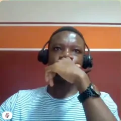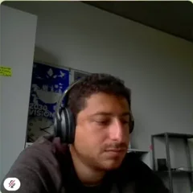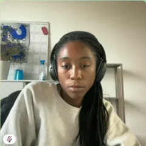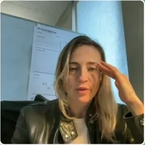</div></div>
      <div class="egg-panel" id="eggPanel" hidden>
        <div class="shots">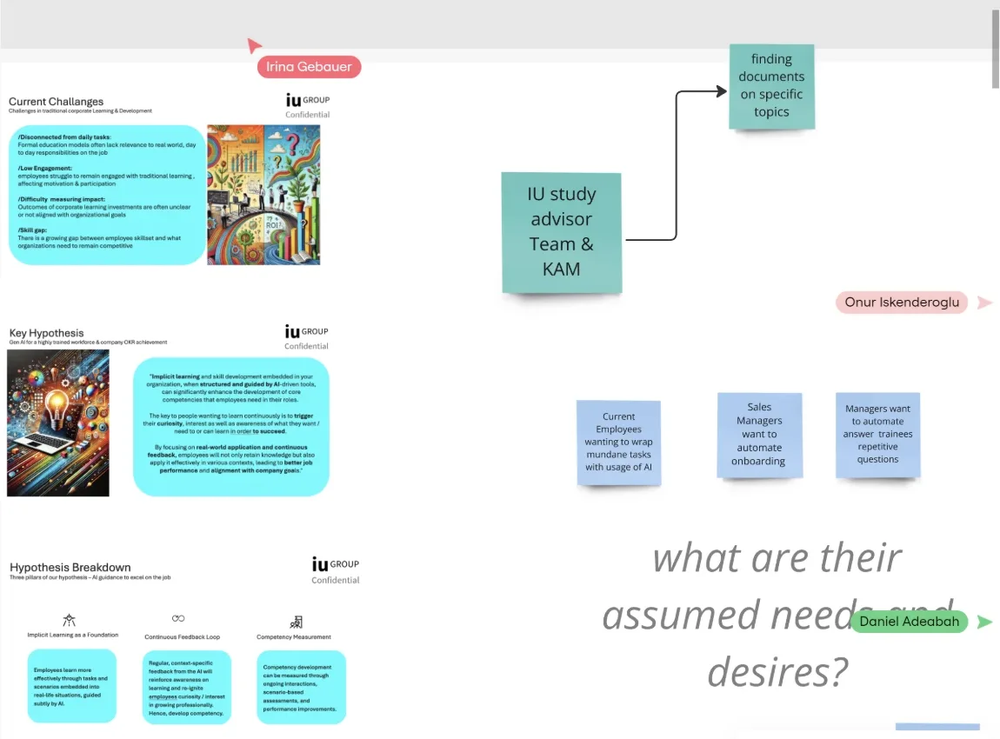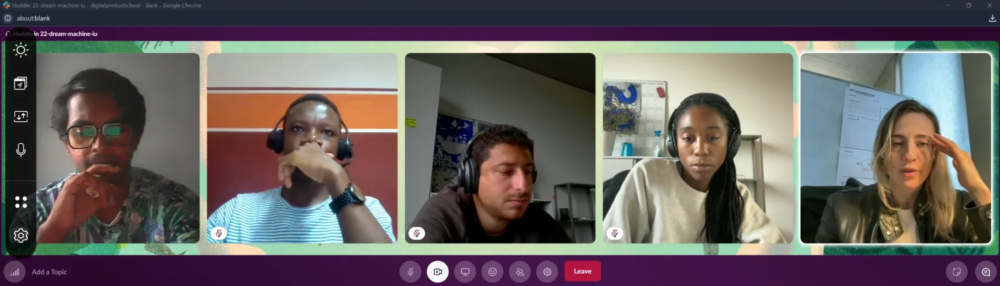</div>
        <p class="small">16 September 2024, 4:12 pm. Week 2: the research roadmap in Miro, the client’s kickoff slides on the left, five of us in a Slack huddle arguing about who hurts most when someone new joins.</p>
      </div>
    </div>
  </div>
</header>

<main>
<section class="gutter" id="problem">
  <div class="wrap chapter">
    <span class="eyebrow">Intro · Workplace learning</span>
    <h2 class="step-h">New hires don’t ask. They wait.</h2>
    <p class="step-p">The brief was open: find where an AI learning assistant creates value at work. Four weeks of interviews kept landing on the same moment, the first weeks in a new job, when people stay quiet so they don’t bother anyone.</p>
    <div class="flow-out"><span class="big">3 days</span><div><b>until a busy colleague answers a basic question</b><span>“My colleagues are too busy, so my questions get answered after 3 days.” A new joiner, in our problem interviews.</span></div></div>
    <div class="stat-row">
      <div class="stat"><span class="num">6</span><span>pain themes from four researchers’ interviews</span></div>
      <div class="stat"><span class="num">9</span><span>fields our first live bot asked for, in message one</span></div>
      <div class="stat"><span class="num">1</span><span>question it asks today, after reading the Teams profile</span></div>
    </div>
    <p class="hypo">The client’s hypothesis: <b>if learning were embedded in the tasks people already do, guided by AI and tied to the company’s OKRs, it would happen implicitly</b> and stay relevant.</p>
    <div class="pillars" aria-label="The three pillars of the brief">
      <div class="pillar"><span class="num">01</span><b>Implicit learning</b><span>Learning happens through real tasks and situations, guided by AI.</span></div>
      <div class="pillar"><span class="num">02</span><b>Continuous feedback</b><span>Regular, context specific feedback keeps people aware of their progress.</span></div>
      <div class="pillar"><span class="num">03</span><b>Competency measurement</b><span>Ongoing interactions and assessments show what actually improved.</span></div>
    </div>
    <p class="small" style="margin-top:-12px">The three pillars of the brief, paraphrased from the client’s kickoff deck. Under the hood shows how each became a bot behaviour.</p>
    <div class="chips">
      <span class="why"><button type="button" class="wchip main" data-why="brief"><i>B</i>The brief</button></span>
      <span class="why"><button type="button" class="wchip" data-why="start"><i>?</i>How I started</button></span>
    </div>
  </div>
</section>

<section class="gutter" id="process">
  <div class="wrap chapter">
    <span class="eyebrow">My process · Agile Scrum, 12 weeks</span>
    <h2 class="step-h">Twelve weeks, three sprints.</h2>
    <p class="step-p">DPS runs on Agile Scrum with weekly sprints. After onboarding and interviews, three sprints of ideating and iterating gave us the direction for the bot. The last weeks went into building, testing and reframing it. Tap a phase.</p>
    <div class="phases" role="tablist" aria-label="Phases" id="phases"></div>
    <div class="weeks" id="weeks" aria-hidden="true"></div>
    <div class="phase-panel" id="phasePanel" aria-live="polite"></div>
    <div class="card sprints">
      <div class="sp-top"><b>The three sprints</b>
        <div class="cadence" aria-label="Every sprint ran the same four meetings"><span>What</span><i>→</i><span>How</span><i>→</i><span>Review</span><i>→</i><span>Retro</span></div>
      </div>
      <div class="tabs" role="tablist" aria-label="Sprints" id="spTabs"><button type="button" role="tab" aria-selected="true" data-s="0">Sprint 1 · Fake it</button><button type="button" role="tab" aria-selected="false" data-s="1">Sprint 2 · A real bot</button><button type="button" role="tab" aria-selected="false" data-s="2">Sprint 3 · Click dummy</button></div>
      <div class="sp-body" id="spBody" aria-live="polite"></div>
      <div class="sp-track" aria-hidden="true"><i id="spFill"></i></div>
    </div>
    <div class="card bp">
      <svg viewBox="0 0 260 230" role="img" aria-label="Venn diagram: purpose, brand and users overlap in the bot persona"><circle cx="95" cy="88" r="68" fill="#0D6B66" fill-opacity=".2" stroke="#0D6B66"/><circle cx="165" cy="88" r="68" fill="#FFE45C" fill-opacity=".45" stroke="#B89A00"/><circle cx="130" cy="148" r="68" fill="#C2405A" fill-opacity=".16" stroke="#C2405A"/><text x="62" y="70" font-family="Geist,sans-serif" font-size="11" fill="#141217">PURPOSE</text><text x="168" y="70" font-family="Geist,sans-serif" font-size="11" fill="#141217">BRAND</text><text x="130" y="196" text-anchor="middle" font-family="Geist,sans-serif" font-size="11" fill="#141217">USERS</text><text x="130" y="116" text-anchor="middle" font-family="Geist,sans-serif" font-size="13" font-weight="600" fill="#141217">Onboardly</text></svg>
      <div><span class="label" style="color:var(--acc);font-weight:600">Bot persona · from the sprint exercises</span><p style="margin-top:6px">A senior colleague who has been here for years, sits next to you, and is never too busy. Warm, brief and practical. It admits what it doesn’t know, and it always ends on something you can do next.</p>
        <div class="say"><div class="do"><h5>Sounds like</h5>“Here’s today. Nothing more than this.” “I don’t have a confirmed answer, so I won’t guess. Sandra in HR owns this. Shall I ask her?”</div><div class="dont"><h5>Never sounds like</h5>“Please provide the following 9 fields to create your profile.” “As an AI language model…”</div></div></div>
    </div>
    <details class="acc"><summary>The conversation flow we tested in sprint 3<span class="plus">+</span></summary><div class="body">How every conversation moves across the manager and the new hire, from the first message to an answer, a repair or a hand off. Blue is a decision the agent makes, green an answer it can stand behind, red the repair path.
      <div class="flowchart" tabindex="0" aria-label="Conversation flowchart, scrolls sideways on small screens"><svg viewBox="0 0 900 1050" width="100%" role="img" aria-labelledby="cfT cfD" style="display:block;min-width:640px">
<title id="cfT">Conversation flow</title><desc id="cfD">Two entry points lead to reading the Teams profile, confirming it, one preference question, then each question goes through intent and confidence checks to an answer, a repair path or a hand off to the topic owner.</desc>
<defs><marker id="ah" viewBox="0 0 10 10" refX="8" refY="5" markerWidth="7" markerHeight="7" orient="auto-start-reverse"><path d="M0 0 L10 5 L0 10 z" fill="#8A847B"/></marker></defs>
<rect x="40.0" y="12.0" width="240" height="56" rx="28" fill="#1E1A15" stroke="#1E1A15" stroke-width="1"/><text x="160" y="40" text-anchor="middle" dominant-baseline="middle" font-family="Geist, system-ui, sans-serif" font-size="13" font-weight="500" fill="#FFFFFF"><tspan x="160" dy="0">Manager adds a new hire</tspan></text><rect x="620.0" y="12.0" width="240" height="56" rx="28" fill="#1E1A15" stroke="#1E1A15" stroke-width="1"/><text x="740" y="40" text-anchor="middle" dominant-baseline="middle" font-family="Geist, system-ui, sans-serif" font-size="13" font-weight="500" fill="#FFFFFF"><tspan x="740" dy="0">New hire opens the chat</tspan></text><rect x="40.0" y="132.0" width="240" height="56" rx="16" fill="#EEF0FD" stroke="#2340E3" stroke-width="1.5"/><text x="160" y="151" text-anchor="middle" dominant-baseline="middle" font-family="Geist, system-ui, sans-serif" font-size="13" font-weight="500" fill="#2340E3"><tspan x="160" dy="0">Proactive welcome</tspan><tspan x="160" dy="18">Monday, 9:00</tspan></text><rect x="620.0" y="132.0" width="240" height="56" rx="16" fill="#EEF0FD" stroke="#2340E3" stroke-width="1.5"/><text x="740" y="151" text-anchor="middle" dominant-baseline="middle" font-family="Geist, system-ui, sans-serif" font-size="13" font-weight="500" fill="#2340E3"><tspan x="740" dy="0">Welcome card and</tspan><tspan x="740" dy="18">View prompts</tspan></text><path d="M160 68.0 V128.0" fill="none" stroke="#8A847B" stroke-width="1.5"  marker-end="url(#ah)"/><path d="M740 68.0 V128.0" fill="none" stroke="#8A847B" stroke-width="1.5"  marker-end="url(#ah)"/><rect x="330.0" y="232.0" width="240" height="56" rx="16" fill="#FFFFFF" stroke="#D8D5CE" stroke-width="1"/><text x="450" y="251" text-anchor="middle" dominant-baseline="middle" font-family="Geist, system-ui, sans-serif" font-size="13" font-weight="500" fill="#1E1A15"><tspan x="450" dy="0">Read the Teams profile:</tspan><tspan x="450" dy="18">role, team, manager</tspan></text><path d="M160 188.0 V260 H326.0" fill="none" stroke="#8A847B" stroke-width="1.5"  marker-end="url(#ah)"/><path d="M740 188.0 V260 H574.0" fill="none" stroke="#8A847B" stroke-width="1.5"  marker-end="url(#ah)"/><polygon points="450,328.0 560.0,370 450,412.0 340.0,370" fill="#EEF0FD" stroke="#2340E3" stroke-width="1.5"/><text x="450" y="370" text-anchor="middle" dominant-baseline="middle" font-family="Geist, system-ui, sans-serif" font-size="13" font-weight="600" fill="#1E1A15"><tspan x="450" dy="0">Is the profile right?</tspan></text><path d="M450 288.0 V324" fill="none" stroke="#8A847B" stroke-width="1.5"  marker-end="url(#ah)"/><rect x="620.0" y="342.0" width="240" height="56" rx="16" fill="#FFFFFF" stroke="#D8D5CE" stroke-width="1"/><text x="740" y="370" text-anchor="middle" dominant-baseline="middle" font-family="Geist, system-ui, sans-serif" font-size="13" font-weight="500" fill="#1E1A15"><tspan x="740" dy="0">Fix one detail</tspan></text><path d="M560 370 H616.0" fill="none" stroke="#8A847B" stroke-width="1.5"  marker-end="url(#ah)"/><rect x="572.0" y="346" width="36" height="20" rx="10" fill="#F1EFEA"/><text x="590.0" y="356" text-anchor="middle" dominant-baseline="middle" font-family="Geist, system-ui, sans-serif" font-size="11" font-weight="600" fill="#3C3832"><tspan x="590.0" dy="0">No</tspan></text><path d="M740 398.0 V430 H510 V400" fill="none" stroke="#8A847B" stroke-width="1.5" stroke-dasharray='4 4' marker-end="url(#ah)"/><rect x="330.0" y="452.0" width="240" height="56" rx="16" fill="#FFFFFF" stroke="#D8D5CE" stroke-width="1"/><text x="450" y="480" text-anchor="middle" dominant-baseline="middle" font-family="Geist, system-ui, sans-serif" font-size="13" font-weight="500" fill="#1E1A15"><tspan x="450" dy="0">Ask one preference question</tspan></text><path d="M450 412 V448.0" fill="none" stroke="#8A847B" stroke-width="1.5"  marker-end="url(#ah)"/><rect x="458" y="422" width="36" height="20" rx="10" fill="#F1EFEA"/><text x="476" y="432" text-anchor="middle" dominant-baseline="middle" font-family="Geist, system-ui, sans-serif" font-size="11" font-weight="600" fill="#3C3832"><tspan x="476" dy="0">Yes</tspan></text><rect x="330.0" y="542.0" width="240" height="56" rx="16" fill="#EEF0FD" stroke="#2340E3" stroke-width="1.5"/><text x="450" y="561" text-anchor="middle" dominant-baseline="middle" font-family="Geist, system-ui, sans-serif" font-size="13" font-weight="500" fill="#2340E3"><tspan x="450" dy="0">Person asks a question</tspan><tspan x="450" dy="18">or taps a reply</tspan></text><path d="M450 508.0 V538.0" fill="none" stroke="#8A847B" stroke-width="1.5"  marker-end="url(#ah)"/><polygon points="450,638.0 560.0,680 450,722.0 340.0,680" fill="#EEF0FD" stroke="#2340E3" stroke-width="1.5"/><text x="450" y="680" text-anchor="middle" dominant-baseline="middle" font-family="Geist, system-ui, sans-serif" font-size="13" font-weight="600" fill="#1E1A15"><tspan x="450" dy="0">Intent understood?</tspan></text><path d="M450 598.0 V634" fill="none" stroke="#8A847B" stroke-width="1.5"  marker-end="url(#ah)"/><rect x="40.0" y="652.0" width="240" height="56" rx="16" fill="#FDEDEA" stroke="#F2C4BA" stroke-width="1"/><text x="160" y="671" text-anchor="middle" dominant-baseline="middle" font-family="Geist, system-ui, sans-serif" font-size="13" font-weight="500" fill="#9A3A26"><tspan x="160" dy="0">Rephrase back and</tspan><tspan x="160" dy="18">offer three options</tspan></text><path d="M340 680 H284.0" fill="none" stroke="#8A847B" stroke-width="1.5"  marker-end="url(#ah)"/><rect x="280.0" y="656" width="36" height="20" rx="10" fill="#F1EFEA"/><text x="298.0" y="666" text-anchor="middle" dominant-baseline="middle" font-family="Geist, system-ui, sans-serif" font-size="11" font-weight="600" fill="#3C3832"><tspan x="298.0" dy="0">No</tspan></text><polygon points="160,748.0 270.0,790 160,832.0 50.0,790" fill="#EEF0FD" stroke="#2340E3" stroke-width="1.5"/><text x="160" y="790" text-anchor="middle" dominant-baseline="middle" font-family="Geist, system-ui, sans-serif" font-size="13" font-weight="600" fill="#1E1A15"><tspan x="160" dy="0">Clear now?</tspan></text><path d="M160 708.0 V744" fill="none" stroke="#8A847B" stroke-width="1.5"  marker-end="url(#ah)"/><rect x="40.0" y="872.0" width="240" height="56" rx="28" fill="#1E1A15" stroke="#1E1A15" stroke-width="1"/><text x="160" y="900" text-anchor="middle" dominant-baseline="middle" font-family="Geist, system-ui, sans-serif" font-size="13" font-weight="500" fill="#FFFFFF"><tspan x="160" dy="0">Offer a person</tspan></text><path d="M160 832 V868.0" fill="none" stroke="#8A847B" stroke-width="1.5"  marker-end="url(#ah)"/><rect x="166" y="842" width="36" height="20" rx="10" fill="#F1EFEA"/><text x="184" y="852" text-anchor="middle" dominant-baseline="middle" font-family="Geist, system-ui, sans-serif" font-size="11" font-weight="600" fill="#3C3832"><tspan x="184" dy="0">No</tspan></text><polygon points="450,748.0 560.0,790 450,832.0 340.0,790" fill="#EEF0FD" stroke="#2340E3" stroke-width="1.5"/><text x="450" y="781" text-anchor="middle" dominant-baseline="middle" font-family="Geist, system-ui, sans-serif" font-size="13" font-weight="600" fill="#1E1A15"><tspan x="450" dy="0">Confident and</tspan><tspan x="450" dy="18">sourced answer?</tspan></text><path d="M450 722 V744" fill="none" stroke="#8A847B" stroke-width="1.5"  marker-end="url(#ah)"/><rect x="458" y="732" width="36" height="20" rx="10" fill="#F1EFEA"/><text x="476" y="742" text-anchor="middle" dominant-baseline="middle" font-family="Geist, system-ui, sans-serif" font-size="11" font-weight="600" fill="#3C3832"><tspan x="476" dy="0">Yes</tspan></text><path d="M270 790 H336" fill="none" stroke="#8A847B" stroke-width="1.5"  marker-end="url(#ah)"/><rect x="274" y="766" width="36" height="20" rx="10" fill="#F1EFEA"/><text x="292" y="776" text-anchor="middle" dominant-baseline="middle" font-family="Geist, system-ui, sans-serif" font-size="11" font-weight="600" fill="#3C3832"><tspan x="292" dy="0">Yes</tspan></text><rect x="330.0" y="872.0" width="240" height="56" rx="16" fill="#E9F8EF" stroke="#9FD8B4" stroke-width="1"/><text x="450" y="891" text-anchor="middle" dominant-baseline="middle" font-family="Geist, system-ui, sans-serif" font-size="13" font-weight="500" fill="#15803D"><tspan x="450" dy="0">Answer card with source,</tspan><tspan x="450" dy="18">link and next step</tspan></text><path d="M450 832 V868.0" fill="none" stroke="#8A847B" stroke-width="1.5"  marker-end="url(#ah)"/><rect x="458" y="842" width="36" height="20" rx="10" fill="#F1EFEA"/><text x="476" y="852" text-anchor="middle" dominant-baseline="middle" font-family="Geist, system-ui, sans-serif" font-size="11" font-weight="600" fill="#3C3832"><tspan x="476" dy="0">Yes</tspan></text><rect x="330.0" y="972.0" width="240" height="56" rx="16" fill="#FFFFFF" stroke="#D8D5CE" stroke-width="1"/><text x="450" y="991" text-anchor="middle" dominant-baseline="middle" font-family="Geist, system-ui, sans-serif" font-size="13" font-weight="500" fill="#1E1A15"><tspan x="450" dy="0">Helpful or not?</tspan><tspan x="450" dy="18">Down vote flags the owner</tspan></text><path d="M450 928.0 V968.0" fill="none" stroke="#8A847B" stroke-width="1.5"  marker-end="url(#ah)"/><rect x="620.0" y="762.0" width="240" height="56" rx="16" fill="#EEF0FD" stroke="#2340E3" stroke-width="1.5"/><text x="740" y="781" text-anchor="middle" dominant-baseline="middle" font-family="Geist, system-ui, sans-serif" font-size="13" font-weight="500" fill="#2340E3"><tspan x="740" dy="0">Name the owner and</tspan><tspan x="740" dy="18">ask them for you</tspan></text><path d="M560 790 H616.0" fill="none" stroke="#8A847B" stroke-width="1.5"  marker-end="url(#ah)"/><rect x="572.0" y="766" width="36" height="20" rx="10" fill="#F1EFEA"/><text x="590.0" y="776" text-anchor="middle" dominant-baseline="middle" font-family="Geist, system-ui, sans-serif" font-size="11" font-weight="600" fill="#3C3832"><tspan x="590.0" dy="0">No</tspan></text><rect x="620.0" y="872.0" width="240" height="56" rx="16" fill="#FFFFFF" stroke="#D8D5CE" stroke-width="1"/><text x="740" y="891" text-anchor="middle" dominant-baseline="middle" font-family="Geist, system-ui, sans-serif" font-size="13" font-weight="500" fill="#1E1A15"><tspan x="740" dy="0">Follow up if there’s</tspan><tspan x="740" dy="18">no reply in a day</tspan></text><path d="M740 818.0 V868.0" fill="none" stroke="#8A847B" stroke-width="1.5"  marker-end="url(#ah)"/><rect x="620.0" y="972.0" width="240" height="56" rx="28" fill="#1E1A15" stroke="#1E1A15" stroke-width="1"/><text x="740" y="991" text-anchor="middle" dominant-baseline="middle" font-family="Geist, system-ui, sans-serif" font-size="13" font-weight="500" fill="#FFFFFF"><tspan x="740" dy="0">Store the answer</tspan><tspan x="740" dy="18">for the next new hire</tspan></text><path d="M740 928.0 V968.0" fill="none" stroke="#8A847B" stroke-width="1.5"  marker-end="url(#ah)"/><path d="M330.0 1000 H322.0 V570 H326.0" fill="none" stroke="#8A847B" stroke-width="1.5" stroke-dasharray='4 4' marker-end="url(#ah)"/><text x="308.0" y="1016" text-anchor="end" dominant-baseline="middle" font-family="Geist, system-ui, sans-serif" font-size="11" font-weight="500" fill="#6F6A62"><tspan x="308.0" dy="0">Next question</tspan></text></svg></div>
      <div class="flowkey"><span><i style="background:#1E1A15"></i>Start or end</span><span><i style="background:#EEF0FD;box-shadow:inset 0 0 0 1.5px #2340E3"></i>Agent turn or decision</span><span><i style="background:#E9F8EF;box-shadow:inset 0 0 0 1px #9FD8B4"></i>Sourced answer</span><span><i style="background:#FDEDEA;box-shadow:inset 0 0 0 1px #F2C4BA"></i>Repair</span><span><i style="background:#fff;box-shadow:inset 0 0 0 1px #D8D5CE"></i>Step</span></div></details>
    <div class="finding"><span class="num">Finding</span><p>Each sprint answered one risky question cheaply. Together they turned “a chatbot for onboarding” into three rules: give value first, give every answer an address, and hand off when it doesn’t know.</p></div>
  </div>
</section>

<section class="gutter" id="day">
  <div class="wrap chapter">
    <span class="eyebrow">Use case · A day one</span>
    <h2 class="step-h">Mira’s first day, hour by hour.</h2>
    <p class="step-p">Mira joins as a Sales Advisor. Every hour of day one brings a problem our interviewees described. Here is how she gets each one done with Syntea in her Teams. It plays on its own; tap an hour to jump.</p>
    <div class="card day">
      <div class="day-top"><b>Monday · Sales Advisor, week 1</b><button type="button" class="day-play" id="dayPlay" aria-pressed="true">❚❚ Pause</button></div>
      <div class="hours" id="hours"></div>
      <div class="moment" id="moment" aria-live="polite"></div>
      <div class="log" aria-label="Mira’s log for the day"><div class="log-h"><span>Mira’s log</span><span><span class="num" id="logN">0</span> of 6 done</span></div><div class="log-bar"><i id="logBar" style="width:0"></i></div><ol id="logList"></ol></div>
    </div>
    <div class="finding"><span class="num">Finding</span><p>Every hard moment of day one is a question nobody answered fast enough. The fix is not more documents. It is someone to ask, who answers in the chat she already has open.</p></div>
  </div>
</section>

<section class="gutter" id="pains">
  <div class="wrap chapter">
    <span class="eyebrow">Research · Pain map</span>
    <h2 class="step-h">From four Bull’s Eyes to six pains.</h2>
    <p class="step-p">Each of us ran Bull’s Eye problem interviews and placed every pain by how pressing it was. We merged the four boards, clustered the stickies, and six pains held up. Tap one to see the quote and what Syntea does about it; the original boards are below.</p>
    <div class="card pain">
      <div class="bull" id="bull">
        <svg viewBox="0 0 320 320" aria-hidden="true">
          <circle cx="160" cy="160" r="152" fill="#F6F6FA" stroke="rgba(20,18,23,.10)"/>
          <circle cx="160" cy="160" r="104" fill="#EEEFFB" stroke="rgba(91,95,199,.25)"/>
          <circle cx="160" cy="160" r="56" fill="#DCDDF6" stroke="rgba(91,95,199,.45)"/>
          <text x="160" y="24" text-anchor="middle" font-family="Geist, sans-serif" font-size="10" font-weight="600" fill="#6B6875">Less pressing</text>
          <text x="160" y="74" text-anchor="middle" font-family="Geist, sans-serif" font-size="10" font-weight="600" fill="#4F52B2">Pressing</text><text x="160" y="204" text-anchor="middle" font-family="Geist, sans-serif" font-size="10" font-weight="600" fill="#4F52B2">Most pressing</text>
        </svg>
      </div>
      <div class="pain-detail" id="painDetail" aria-live="polite"></div>
    </div>
    <label class="cover"><input type="checkbox" id="cover"> Show which pains Syntea answers</label>
    <figure class="boards" style="margin:0" id="boards">
      <div class="stage">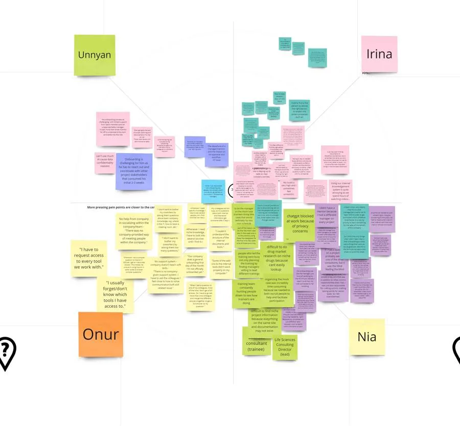</div>
      <div class="bar"><span class="label" id="boardCap"></span><div class="thumbs" role="group" aria-label="Boards from our Miro"></div></div>
    </figure>
  </div>
</section>

<section class="gutter" id="people">
  <div class="wrap chapter">
    <span class="eyebrow">Research · Personas</span>
    <h2 class="step-h">Two people, one chat.</h2>
    <p class="step-p">The manager who onboards and the new hire being onboarded. Both already spend their day in Teams.</p>
    <div class="tabs" role="tablist" aria-label="Personas"><button type="button" role="tab" aria-selected="true" data-p="0">Isabelle · manager</button><button type="button" role="tab" aria-selected="false" data-p="1">Mira · new hire</button></div>
    <div class="card voice" id="persona" aria-live="polite"></div>
  </div>
</section>

<section class="gutter" id="define">
  <div class="wrap chapter">
    <span class="eyebrow">Define · Weeks 2 to 3</span>
    <h2 class="step-h">One question, one canvas.</h2>
    <p class="step-p">The client hoped for upskilling. Our evidence pointed at onboarding: people care about learning once they know what their manager expects. We kept one question and tested the business around it.</p>
    <div class="card pad" style="display:flex;flex-direction:column;gap:12px"><span class="label" style="font-weight:600">Problem statements we tried</span>
      <div class="ps">
        <div class="ps-row"><div><b>Wouldn’t it be great if managers no longer had to guide new hires through repetitive tasks by hand?</b><span>WIBG · manager side</span></div><span class="pill">Merged</span></div>
        <div class="ps-row"><div><b>Wouldn’t it be great if you always knew where to go for each kind of information, and who the expert is?</b><span>WIBG · new hire side</span></div><span class="pill">Merged</span></div>
        <div class="ps-row"><div><b>A Teams AI app for onboarding managers and HR, to simplify the training process</b><span>Value proposition · unlike juggling tasks and checking trainee progress</span></div><span class="pill">Too HR centric</span></div>
        <div class="ps-row"><div><b>A Teams AI app for new hires, to understand their role quickly</b><span>Value proposition · unlike struggling to find information</span></div><span class="pill">Kept the core</span></div>
        <div class="ps-row pick"><div><b>An onboarding assistant for onboardees and onboarders, to cut mundane questions and gain time</b><span>Value proposition · unlike bothering your coworkers constantly</span></div><span class="pill y">Chosen</span></div>
      </div>
    </div>
    <div class="hmw"><span class="label">How might we</span><p>Help a new hire be productive sooner, without more work for the people onboarding them?</p><span>Onboarding that runs in the chat they already use, and never makes them ask a colleague the same question twice.</span></div>
    <figure class="lean"><div class="lean-scroll" tabindex="0" aria-label="Lean DPS Canvas, scrolls sideways on small screens"><div class="lean-board">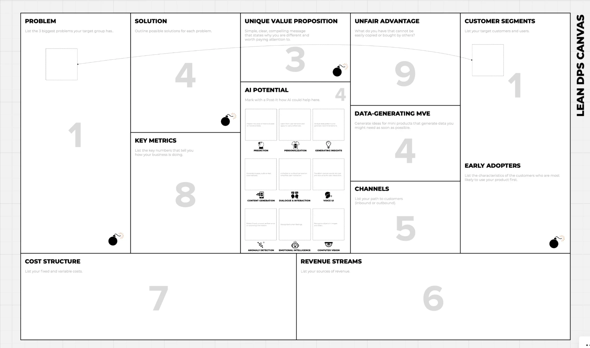<span class="ln abs pk" style="left:7.50%;top:13.57%;width:10.00%;height:10.01%">New hires wait days for answers</span><div class="lz" style="left:4.75%;top:25.45%;width:15.00%;height:42.41%"><span class="ln">Managers rebuild onboarding plans by hand</span><span class="ln">Implicit knowledge never gets written down</span></div><span class="ln abs pk" style="left:79.60%;top:12.30%;width:10.25%;height:10.01%">Managers of sales teams who hire often</span><div class="lz" style="left:79.00%;top:24.60%;width:16.00%;height:21.20%"><span class="ln">HR and L&amp;D teams</span><span class="ln">Employees with new responsibilities</span></div><div class="lz" style="left:79.00%;top:53.44%;width:12.50%;height:14.42%"><span class="ln gr">Small teams already working in Teams</span></div><div class="lz" style="left:41.60%;top:12.04%;width:14.40%;height:10.60%"><span class="ln bl uvp">Onboarding that runs inside the chat you already use, and never makes you ask a colleague the same question twice.</span></div><div class="lz" style="left:23.00%;top:11.45%;width:14.00%;height:25.45%"><span class="ln">Role specific plans drafted from the manager’s own docs and OKRs</span><span class="ln">A bot that answers with sources and routes to experts</span></div><span class="ln abs ai" style="left:47.30%;top:31.30%;width:5.35%;height:9.08%">Shows each person only what matters</span><span class="ln abs ai" style="left:41.55%;top:45.55%;width:5.35%;height:9.08%">Drafts plans from docs</span><span class="ln abs ai" style="left:47.30%;top:45.55%;width:5.35%;height:9.08%">Answers and routes questions</span><div class="lz" style="left:60.25%;top:11.87%;width:16.75%;height:17.39%"><span class="ln">Syntea, the client’s proven AI learning assistant, plus its learning content and corporate relationships</span></div><div class="lz row" style="left:60.25%;top:38.34%;width:17.25%;height:13.15%"><span class="ln">Wizard of Oz in Slack</span><span class="ln">Live Teams agent</span><span class="ln">Click dummy</span></div><div class="lz row" style="left:60.25%;top:58.35%;width:17.25%;height:12.30%"><span class="ln">Client’s L&amp;D customers</span><span class="ln">Teams app store</span><span class="ln">IT rollout in M365</span></div><div class="lz" style="left:23.00%;top:46.23%;width:16.50%;height:25.45%"><span class="ln">Time to first productive task</span><span class="ln">Questions resolved without a human</span><span class="ln">New hire satisfaction, checked in chat</span></div><div class="lz row" style="left:4.25%;top:79.73%;width:45.00%;height:16.12%"><span class="ln">Salaries</span><span class="ln">LLM costs</span><span class="ln">Tooling</span><span class="ln">Marketing</span></div><div class="lz row" style="left:51.00%;top:79.73%;width:45.00%;height:16.12%"><span class="ln">Corporate licences (bulk deals)</span><span class="ln">Teams app store purchases</span></div></div></div><figcaption>Our Lean DPS Canvas, filled in on the DPS template. Pink notes are the core problem and the segment it hits hardest; blue notes mark the three types of AI we picked.</figcaption></figure>
  </div>
</section>

<section class="gutter" id="decisions">
  <div class="wrap chapter">
    <span class="eyebrow">Key decisions</span>
    <h2 class="step-h">Three calls that shaped the agent.</h2>
    <div class="tabs" role="tablist" aria-label="Decisions" id="decTabs"><button type="button" role="tab" aria-selected="true" data-d="0">01 · Where</button><button type="button" role="tab" aria-selected="false" data-d="1">02 · First turn</button><button type="button" role="tab" aria-selected="false" data-d="2">03 · Not knowing</button></div>
    <div class="card pad dec" id="dec" aria-live="polite"></div>
  </div>
</section>

<section class="gutter" id="hood">
  <div class="wrap chapter">
    <span class="eyebrow">Under the hood · Built on Microsoft Copilot</span>
    <h2 class="step-h">Teams is the face. Copilot is the brain.</h2>
    <p class="step-p">People only ever see Teams. Behind it, Copilot reads the question, company files ground the answer, and the org chart finds a person when the files can’t. Tap a layer, or watch one question travel through.</p>
    <div class="card pipe">
      <div class="pipe-top"><b>One question, four layers</b><span class="label">Illustrative trace · “How do I log my working hours?”</span></div>
      <div class="layers" id="layers"></div>
      <div class="packet" aria-hidden="true"><i id="packet" style="left:0"></i></div>
      <div class="trace" id="trace" aria-live="polite"></div>
    </div>
    <div class="learnmap" aria-label="How each pillar of the brief became a bot behaviour">
      <span class="label" style="font-weight:600">From the brief to the bot: how new hires learn without a course</span>
      <div class="lm"><div class="from"><span class="num">01</span><b>Implicit learning</b></div><span class="arrow">→</span><div class="to"><b>Learning in the task.</b> Answers arrive in the chat at the moment of need, with the document and link, so every question teaches where things live.</div></div>
      <div class="lm"><div class="from"><span class="num">02</span><b>Continuous feedback</b></div><span class="arrow">→</span><div class="to"><b>Nudges, not reports.</b> A daily “here’s today”, a Friday recap, and a thumbs up or down on every answer that flags weak documents to their owner.</div></div>
      <div class="lm"><div class="from"><span class="num">03</span><b>Competency measurement</b></div><span class="arrow">→</span><div class="to"><b>Progress the new hire sees first.</b> Plan steps done and questions resolved, shown to them before their manager, and never a score on the person.</div></div>
    </div>
    <details class="acc"><summary>What the agent stores, and what it never does<span class="plus">+</span></summary><div class="body"><ul><li>Session memory of the conversation, plus profile, OKRs and goals, kept in our own services next to Copilot.</li><li>Answers only from files the person can already open in Microsoft 365, cited with document and date.</li><li>Expert replies are stored with the expert’s name and date, so the next answer has a source too.</li><li>It never scores or evaluates employees, asks before using anyone’s data, and keeps a working path when someone declines.</li></ul></div></details>
  </div>
</section>

<section class="gutter" id="learns">
  <div class="wrap chapter">
    <span class="eyebrow">Sprints 2 and 3 · Sep to Oct 2024</span>
    <h2 class="step-h">How the bot learned to talk.</h2>
    <p class="step-p">A rebuild of our real Onboardly thread in the client’s Teams tenant. Four test rounds took it from handing out spreadsheets to starting the conversation itself. It plays on a loop; type to talk to it.</p>
          <div class="evo" id="evo">
        <div class="evo-steps" role="group" aria-label="Stages of the conversation">
          <button type="button" data-st="0" aria-pressed="true">1 · File dispenser<small>Sep 25 · first live bot</small></button>
          <button type="button" data-st="1" aria-pressed="false">2 · Plan editor<small>Sep 30 · plans as cards</small></button>
          <button type="button" data-st="2" aria-pressed="false">3 · Guide with sources<small>Oct 2 · after Wizard of Oz</small></button>
          <button type="button" data-st="3" aria-pressed="false">4 · Onboarding buddy<small>Oct 7 · proactive</small></button>
        </div>
        <div class="evo-meter" aria-live="polite">
          <div>
            <p class="lbl"><span>Role of the bot</span><span id="evoLvl">Stage 1 of 4</span></p>
            <p class="evo-role" id="evoRole"><b>Tool</b><span>hands out files</span></p>
            <div class="evo-bar" aria-hidden="true"><i id="evoBar"></i></div>
            <p class="lbl" style="margin-top:4px" aria-hidden="true"><span>Menu driven</span><span>Conversational</span></p>
          </div>
          <div class="evo-traits" id="evoTraits">
            <span data-t="edit">Edits in the chat</span><span data-t="src">Cites the source</span><span data-t="mem">Remembers context</span><span data-t="first">Speaks first</span><span data-t="people">Connects people</span>
          </div>
          <p class="evo-note" id="evoNote"></p>
        </div>

        <div class="pframe"><div class="tdk" id="tdk">
          <div class="td-title">
            <div class="td-logo" aria-hidden="true">T</div>
            <div class="td-nav" aria-hidden="true"><span>‹</span><span>›</span></div>
            <div class="td-search" aria-hidden="true"><svg width="14" height="14" viewBox="0 0 16 16" fill="none" stroke="currentColor" stroke-width="1.5"><circle cx="7" cy="7" r="4.5"/><path d="M10.5 10.5 14 14"/></svg>Search (Ctrl+E)</div>
            <div class="td-right" aria-hidden="true"><span>···</span><span class="org">IU Group</span><div class="td-me">UK</div></div>
          </div>
          <div class="td-main">
            <div class="td-rail" aria-hidden="true">
              <div><svg viewBox="0 0 20 20" fill="none" stroke="currentColor" stroke-width="1.4"><path d="M10 3a4.5 4.5 0 0 0-4.5 4.5V11L4 13.5h12L14.5 11V7.5A4.5 4.5 0 0 0 10 3Z"/><path d="M8 15.5a2 2 0 0 0 4 0"/></svg>Activity</div>
              <div class="on"><svg viewBox="0 0 20 20" fill="currentColor"><path d="M3 9.5a6.5 6 0 1 1 3 5.1L3 16l.9-3A6 6 0 0 1 3 9.5Z"/><path d="M7 8.5h6M7 11h4" stroke="#141414" stroke-width="1.3" stroke-linecap="round"/></svg>Chat</div>
              <div><svg viewBox="0 0 20 20" fill="none" stroke="currentColor" stroke-width="1.4"><circle cx="7" cy="7" r="2.5"/><circle cx="13.5" cy="7.5" r="2"/><path d="M2.5 15c.5-2.5 2.3-4 4.5-4s4 1.5 4.5 4M12 11.5c2.2-.3 4 .9 4.6 3.5"/></svg>Teams</div>
              <div><svg viewBox="0 0 20 20" fill="none" stroke="currentColor" stroke-width="1.4"><path d="M5 17V8l5-4 5 4v9Z"/><path d="M8 17v-4h4v4"/></svg>Assignments</div>
              <div><svg viewBox="0 0 20 20" fill="none" stroke="currentColor" stroke-width="1.4"><rect x="3" y="4" width="14" height="13" rx="2"/><path d="M3 8h14M7 2.5v3M13 2.5v3"/></svg>Calendar</div>
              <div><svg viewBox="0 0 20 20" fill="none" stroke="currentColor" stroke-width="1.4"><path d="M6 3l2.5 3.5-1.5 2a8 8 0 0 0 4.5 4.5l2-1.5L17 14l-1.5 2.5C9 16.5 3.5 11 3.5 4.5Z"/></svg>Calls</div>
              <div><svg viewBox="0 0 20 20" fill="none" stroke="currentColor" stroke-width="1.4"><path d="M5.5 15.5h9a3 3 0 0 0 .4-6A4.5 4.5 0 0 0 6.3 8 3.8 3.8 0 0 0 5.5 15.5Z"/></svg>OneDrive</div>
              <div>···</div>
              <div><svg viewBox="0 0 20 20" fill="none" stroke="currentColor" stroke-width="1.4"><rect x="3" y="3" width="14" height="14" rx="3"/><path d="M10 6.5v7M6.5 10h7"/></svg>Apps</div>
            </div>
            <div class="td-list" aria-hidden="true">
              <div class="td-list-h"><b>Chat</b><span>··· ☰ ✎</span></div>
              <div class="td-items">
                <div class="td-sect">Pinned</div>
                <div class="td-item"><div class="td-av tdst" style="background:#E6E2D6;color:#3A3A3A">UK</div><div><div class="nm">Kumar, Unnyan (Extern) (You)</div></div><span></span></div>
                <div class="td-sect">▾ Recent</div>
                <div class="td-item" data-ev="3"><div class="td-av mt"><svg viewBox="0 0 16 16" fill="none" stroke="currentColor" stroke-width="1.2"><rect x="2" y="3" width="12" height="11" rx="2"/><path d="M2 6h12M5 9h1M8 9h1M11 9h1M5 11.5h1M8 11.5h1"/></svg></div><div><div class="nm">Sprint review · Onboardly</div><div class="pv">Lena: let’s both jump off and come back…</div></div><span class="tm">10/7</span></div>
                <div class="td-item"><div class="td-av mt"><svg viewBox="0 0 16 16" fill="none" stroke="currentColor" stroke-width="1.2"><rect x="2" y="3" width="12" height="11" rx="2"/><path d="M2 6h12M5 9h1M8 9h1M11 9h1M5 11.5h1M8 11.5h1"/></svg></div><div><div class="nm">Backlog refinement / Technical tasks</div><div class="pv">Daniel: thanks for subscribing</div></div><span class="tm">10/2</span></div>
                <div class="td-item"><div class="td-av" style="background:#4F6BED">LM</div><div><div class="nm">Lena, Jan, Sophie</div><div class="pv">Jan: here’s the click dummy link…</div></div><span class="tm">10/2</span></div>
                <div class="td-item"><div class="td-av tdst" style="background:#038387">FW</div><div><div class="nm">Felix Wagner</div><div class="pv">You: Will check it</div></div><span class="tm">9/26</span></div>
                <div class="td-item"><div class="td-av mt"><svg viewBox="0 0 16 16" fill="none" stroke="currentColor" stroke-width="1.2"><rect x="2" y="3" width="12" height="11" rx="2"/><path d="M2 6h12M5 9h1M8 9h1M11 9h1M5 11.5h1M8 11.5h1"/></svg></div><div><div class="nm">Kanban Review &amp; Task Refinement</div><div class="pv">Felix: sorry, could not join…</div></div><span class="tm">9/26</span></div>
                <div class="td-item on" id="tdOnb"><div class="td-bot tdst"><svg viewBox="0 0 32 32" aria-hidden="true"><path d="M5 4h10l12 12-12 12H5l12-12Z" fill="#2B6CF6"/><path d="M5 4h10l6 6-6 6H5l6-6Z" fill="#7AA7FF"/></svg></div><div><div class="nm">Onboardly</div><div class="pv" id="tdPrev">I’ve already prepared personalized…</div></div><span class="tm" id="tdTime">9/25</span></div>
                <div class="td-item"><div class="td-av mt"><svg viewBox="0 0 16 16" fill="none" stroke="currentColor" stroke-width="1.2"><rect x="2" y="3" width="12" height="11" rx="2"/><path d="M2 6h12M5 9h1M8 9h1M11 9h1M5 11.5h1M8 11.5h1"/></svg></div><div><div class="nm">Daily Stand Up</div><div class="pv">You: Okay</div></div><span class="tm">9/25</span></div>
                <div class="td-item"><div class="td-av" style="background:#CA5010">NB</div><div><div class="nm">Nora Brandt (Extern)</div><div class="pv">** Training sessions (Week 1)…</div></div><span class="tm">9/24</span></div>
                <div class="td-item"><div class="td-av mt"><svg viewBox="0 0 16 16" fill="none" stroke="currentColor" stroke-width="1.2"><rect x="2" y="3" width="12" height="11" rx="2"/><path d="M2 6h12M5 9h1M8 9h1M11 9h1M5 11.5h1M8 11.5h1"/></svg></div><div><div class="nm">Weekly Planning &amp; Prioritization</div><div class="pv">Omar: my laptop battery is runnin…</div></div><span class="tm">9/23</span></div>
              </div>
            </div>
            <div class="td-conv">
              <div class="td-head">
                <div class="td-bot tdst"><svg viewBox="0 0 32 32" aria-hidden="true"><path d="M5 4h10l12 12-12 12H5l12-12Z" fill="#2B6CF6"/><path d="M5 4h10l6 6-6 6H5l6-6Z" fill="#7AA7FF"/></svg></div>
                <b>Onboardly</b>
                <div class="td-tabs" aria-hidden="true"><span class="on">Chat</span><span>About</span></div>
                <span class="more" aria-hidden="true">···</span>
              </div>
              <div class="td-msgs" id="tdMsgs" aria-live="polite"></div>
              <div class="td-compose">
                <form class="td-cbox" id="tdForm" autocomplete="off">
                  <label for="tdIn" style="position:absolute;left:-9999px">Message Onboardly</label>
                  <input id="tdIn" type="text" placeholder="Type a message">
                  <span class="ics" aria-hidden="true"><svg viewBox="0 0 20 20" fill="none" stroke="currentColor" stroke-width="1.3"><path d="M4 16 10 4l3 6M7 11h5M13 16l3-3"/></svg><svg viewBox="0 0 20 20" fill="none" stroke="currentColor" stroke-width="1.3"><circle cx="10" cy="10" r="7"/><path d="M7 12c1.6 1.6 4.4 1.6 6 0"/><circle cx="7.5" cy="8" r=".6" fill="currentColor"/><circle cx="12.5" cy="8" r=".6" fill="currentColor"/></svg><svg viewBox="0 0 20 20" fill="none" stroke="currentColor" stroke-width="1.3"><path d="M10 3.5a6.5 6 0 1 1-3 11.2L4 16l.8-2.8A6 6 0 0 1 10 3.5Z"/></svg><svg viewBox="0 0 20 20" fill="none" stroke="currentColor" stroke-width="1.3"><path d="M10 4v12M4 10h12"/></svg></span>
                  <button class="td-send" type="submit" aria-label="Send"><svg viewBox="0 0 20 20" fill="none" stroke="currentColor" stroke-width="1.4"><path d="M3 3l14 7-14 7 2.5-7Z"/><path d="M5.5 10H11"/></svg></button>
                </form>
                <p class="td-hint" id="tdHint">Dummy bot. Try “change week 1”, “how do I log hours?” or “who can help with CRM?”</p>
                <div class="td-toast" id="tdToast" role="status"></div>
              </div>
            </div>
          </div>
        </div></div>
        <div class="evo-foot">
          <p class="small">Your own name stays; colleagues, documents and answers are invented stand ins.</p>
          <p class="evo-live" id="evoLive" aria-live="polite"><i></i><span>Playing on a loop. Type or tap a reply to pause it.</span></p>
        </div>
      </div>


  </div>
</section>

<section class="gutter" id="try">
  <div class="wrap chapter">
    <span class="eyebrow">Use cases · Click dummy</span>
    <h2 class="step-h">Three moments it was built for.</h2>
    <p class="step-p">The scenarios we tested, rebuilt in Teams light mode as Syntea. Tap the replies, open View prompts, or type. Free text is matched to the options on screen; anything else shows the repair path.</p>
          <div class="proto-wrap">
        <div class="scen" role="group" aria-label="Choose a scenario">
          <button type="button" data-s="manager" aria-pressed="true">1 · Manager plans onboarding</button>
          <button type="button" data-s="newhire" aria-pressed="false">2 · New hire, day one</button>
          <button type="button" data-s="ask" aria-pressed="false">3 · Ask anything, find the expert</button>
        </div>
        <p class="scen-desc" id="scenDesc"></p>

        <div class="pframe"><div class="teams" id="teams">
          <div class="t-title">
            <div class="t-logo" aria-hidden="true">T</div>
            <div class="t-nav" aria-hidden="true"><span>‹</span><span>›</span></div>
            <div class="t-search" aria-hidden="true">⌕&nbsp; Search</div>
            <div class="t-right" aria-hidden="true"><span>···</span><span>Contoso</span><div class="t-me" id="tMe">IB</div></div>
          </div>
          <div class="t-main">
            <div class="t-rail" aria-hidden="true">
              <div><svg viewBox="0 0 20 20" fill="none" stroke="currentColor" stroke-width="1.4"><path d="M10 3a4.5 4.5 0 0 0-4.5 4.5V11L4 13.5h12L14.5 11V7.5A4.5 4.5 0 0 0 10 3Z"/><path d="M8 15.5a2 2 0 0 0 4 0"/></svg>Activity</div>
              <div class="on"><svg viewBox="0 0 20 20" fill="none" stroke="currentColor" stroke-width="1.4"><path d="M3 9.5a6.5 6 0 1 1 3 5.1L3 16l.9-3A6 6 0 0 1 3 9.5Z"/></svg>Chat</div>
              <div><svg viewBox="0 0 20 20" fill="none" stroke="currentColor" stroke-width="1.4"><circle cx="7" cy="7" r="2.5"/><circle cx="13.5" cy="7.5" r="2"/><path d="M2.5 15c.5-2.5 2.3-4 4.5-4s4 1.5 4.5 4M12 11.5c2.2-.3 4 .9 4.6 3.5"/></svg>Teams</div>
              <div><svg viewBox="0 0 20 20" fill="none" stroke="currentColor" stroke-width="1.4"><rect x="3" y="4" width="14" height="13" rx="2"/><path d="M3 8h14M7 2.5v3M13 2.5v3"/></svg>Calendar</div>
              <div><svg viewBox="0 0 20 20" fill="none" stroke="currentColor" stroke-width="1.4"><path d="M6 3l2.5 3.5-1.5 2a8 8 0 0 0 4.5 4.5l2-1.5L17 14l-1.5 2.5C9 16.5 3.5 11 3.5 4.5Z"/></svg>Calls</div>
              <div><svg viewBox="0 0 20 20" fill="none" stroke="currentColor" stroke-width="1.4"><path d="M5.5 15.5h9a3 3 0 0 0 .4-6A4.5 4.5 0 0 0 6.3 8 3.8 3.8 0 0 0 5.5 15.5Z"/></svg>OneDrive</div>
              <div class="app"></div>
            </div>
            <div class="t-list" aria-hidden="true">
              <div class="t-list-h"><b>Chat</b><span>··· ☰ ✎</span></div>
              <div class="t-sect">▾ Pinned</div>
              <div class="t-item on"><div class="av" style="background:#fff;border:1px solid #E0E0E0"></div><div><div class="nm">Syntea</div><div class="pv" id="tPrev">Good morning. Three new people…</div></div><span class="tm" id="tTime">9:00</span></div>
              <div class="t-sect">▾ Recent</div>
              <div class="t-item unread"><div class="av" style="background:#8764B8">KN</div><div><div class="nm">Kevin Novak</div><div class="pv">Sure, happy to help with the CRM</div></div><span class="tm">8:42</span></div>
              <div class="t-item"><div class="av" style="background:#038387">ST</div><div><div class="nm">Sales Team · Weekly</div><div class="pv">Lena: agenda for Thursday is up</div></div><span class="tm">Yesterday</span></div>
              <div class="t-item"><div class="av" style="background:#CA5010">SK</div><div><div class="nm">Sandra Klein</div><div class="pv">You: thanks for the contract</div></div><span class="tm">Fri</span></div>
              <div class="t-item"><div class="av" style="background:#4F6BED">LM</div><div><div class="nm">Lena Marx</div><div class="pv">Can you check the Q4 targets?</div></div><span class="tm">Thu</span></div>
              <div class="t-item"><div class="av" style="background:#498205">DS</div><div><div class="nm">Daily stand up</div><div class="pv">Meeting ended: 15m</div></div><span class="tm">Thu</span></div>
            </div>
            <div class="t-conv">
              <div class="t-head">
                <div class="bav"></div>
                <b>Syntea</b>
                <div class="t-tabs" aria-hidden="true"><span class="on">Chat</span><span>About</span></div>
                <span class="more" aria-hidden="true">···</span>
              </div>
              <div class="t-msgs" id="msgs" aria-live="polite"></div>
              <div class="t-compose">
                <div class="vp"><button type="button" id="vpBtn" aria-expanded="false" aria-controls="flyout"><svg width="16" height="16" viewBox="0 0 16 16" fill="none" stroke="currentColor" stroke-width="1.2" aria-hidden="true"><rect x="3" y="2" width="10" height="12" rx="1.5"/><path d="M5.5 5h5M5.5 8h5"/></svg>View prompts</button></div>
                <div class="flyout" id="flyout" role="menu"></div>
                <form class="cbox" id="cform" autocomplete="off">
                  <label for="cin" style="position:absolute;left:-9999px">Message Syntea</label>
                  <input id="cin" type="text" placeholder="Type a message">
                  <span class="ics" aria-hidden="true">Ａ ☺ ⊕ ＋</span>
                  <button class="send" type="submit" aria-label="Send">➤</button>
                </form>
                <div class="toast" id="toast" role="status"></div>
              </div>
            </div>
          </div>
        </div></div>
        <div class="proto-foot">
          <p class="small">All people, roles, documents and answers are fictional stand ins.</p>
          <button type="button" id="restart">Restart scenario</button>
        </div>
      </div>
      <div class="annot">
        <div data-n="1"><b>Confirm, don’t interrogate</b>The new hire flow starts from what Graph already knows and asks one question, replacing v1’s nine field form.</div>
        <div data-n="2"><b>Every answer has an address</b>Answers end with the exact link and the document they came from, a direct result of the Wizard of Oz test.</div>
        <div data-n="3"><b>Honest hand off</b>When the bot doesn’t know, it says so, asks the person who owns the topic, and remembers the answer for the next new hire.</div>
      </div>

  </div>
</section>

<section class="gutter" id="data">
  <div class="wrap chapter">
    <span class="eyebrow">Success metric · Data</span>
    <h2 class="step-h">Every message makes it smarter.</h2>
    <p class="step-p">A new hire’s question is also data. When Syntea can’t answer, it asks the owner, and the reply is kept for the next person. So the agent’s value grows with every conversation, and that growth is what we would measure.</p>
    <div class="card loopbox">
      <div class="loop" id="loop">
        <svg viewBox="0 0 300 300" aria-hidden="true"><circle cx="150" cy="150" r="112" fill="none" stroke="#EFEEF4" stroke-width="14"/><circle class="ring-prog" id="ringProg" cx="150" cy="150" r="112" fill="none" stroke="#5B5FC7" stroke-width="14" stroke-linecap="round" stroke-dasharray="703.7" stroke-dashoffset="527.8" transform="rotate(-90 150 150)"/></svg>
        <div class="center" id="loopCenter"></div>
      </div>
      <div class="stack" style="display:flex;flex-direction:column;gap:10px">
        <p class="small">Tap a step of the loop.</p>
        <div id="loopText" aria-live="polite" style="font-size:14px;line-height:20px;color:var(--ink-soft)"></div>
      </div>
    </div>
    <div class="card model">
      <div class="model-top"><b>Conversations so far</b><span class="num" id="mN" style="font-size:22px;color:var(--acc)">250</span></div>
      <label for="mRange" class="label">Drag to add conversations</label>
      <input type="range" id="mRange" min="0" max="2000" step="10" value="250">
      <div class="chart"><svg id="mChart" viewBox="0 0 600 180" role="img" aria-label="Illustrative curve: share of questions answered without a person rises as conversations grow"></svg></div>
      <div class="m-stats">
        <div><span class="num" id="mA">0%</span><span>answered without a person</span></div>
        <div><span class="num" id="mS">0</span><span>expert answers stored</span></div>
        <div><span class="num" id="mH">0</span><span>hand offs per 100 questions</span></div>
      </div>
      <p class="small">Illustrative model of the loop, not production data. The client owns the real numbers.</p>
    </div>
    <div class="metrics"><span><b>01</b>Questions answered without a person</span><span><b>02</b>Time to an answer</span><span><b>03</b>Expert answers stored per week</span><span><b>04</b>Down votes per answer</span></div>
  </div>
</section>

<section class="gutter" id="stage">
  <div class="wrap chapter">
    <span class="eyebrow">Outcome</span>
    <h2 class="step-h">Onboardly stalled. Syntea didn’t.</h2>
    <p class="step-p">In the final weeks the client pulled the scope back toward upskilling, and our onboarding track was put on hold before we shipped it. The bets we tested lived on: Syntea’s onboarding agent in Teams, proactive, personal and grounded in company content, shown on stage by Microsoft’s CEO.</p>
    <div class="stills">
      <figure>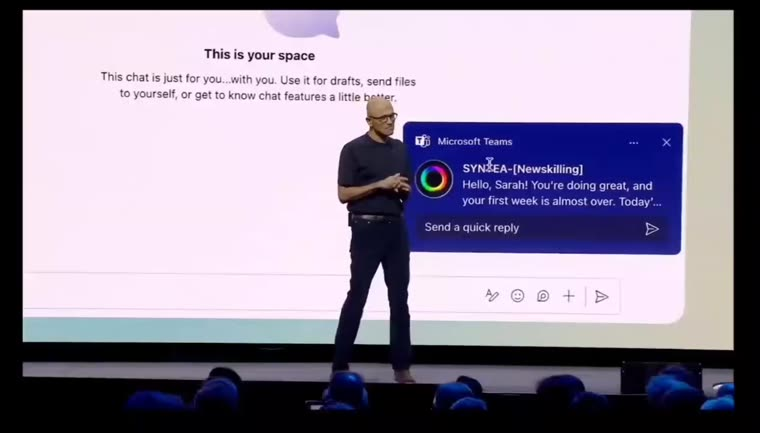<figcaption>Speaks first: a proactive Teams message</figcaption></figure>
      <figure>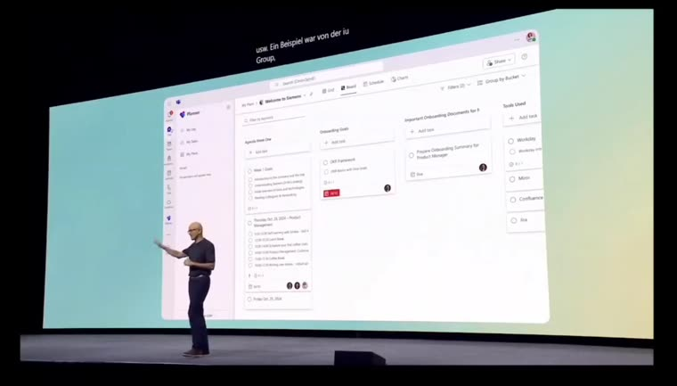<figcaption>A plan built for the person</figcaption></figure>
      <figure>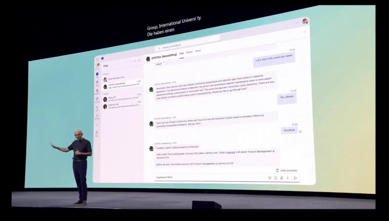<figcaption>Answers, videos and people in one chat</figcaption></figure>
    </div>
    <div class="stat-row">
      <div class="stat"><span class="num">Keynote</span><span>shown by Microsoft’s CEO</span></div>
      <div class="stat"><span class="num">3</span><span>experiments in 12 weeks</span></div>
      <div class="stat"><span class="num">0</span><span>launch numbers I can share</span></div>
    </div>
  </div>
</section>

<section class="gutter" id="words">
  <div class="wrap chapter">
    <span class="eyebrow">Testimonials</span>
    <h2 class="step-h">What it was like to work with me.</h2>
    <p class="step-p">From the team and the client. Placeholders until the quotes arrive.</p>
    <div class="quotes">
      <div class="tq"><span class="ph">Placeholder</span><q>Testimonial from the client’s product director goes here.</q><div class="by"><i></i><div><b>Name</b><span>Product director · IU Group</span></div></div></div>
      <div class="tq"><span class="ph">Placeholder</span><q>Testimonial from our product manager goes here.</q><div class="by"><i></i><div><b>Name</b><span>Product manager · DPS Batch 22</span></div></div></div>
      <div class="tq"><span class="ph">Placeholder</span><q>Testimonial from an AI engineer goes here.</q><div class="by"><i></i><div><b>Name</b><span>AI engineer · DPS Batch 22</span></div></div></div>
      <div class="tq"><span class="ph">Placeholder</span><q>Testimonial from the client’s AI engineer goes here.</q><div class="by"><i></i><div><b>Name</b><span>AI engineer · IU Group</span></div></div></div>
    </div>
  </div>
</section>

<section class="gutter" id="learnings">
  <div class="wrap chapter">
    <span class="eyebrow">Learnings</span>
    <h2 class="step-h">What I’d keep, and do sooner.</h2>
    <details class="acc" open><summary>In conversational UX, the first turn is the product<span class="plus">+</span></summary><div class="body">v1 was technically impressive and lost people in its first message. A bot earns the right to ask questions by giving value first.</div></details>
    <details class="acc"><summary>Fake it before you build it<span class="plus">+</span></summary><div class="body">A person answering in Slack taught us what no prompt would have: answers need addresses, and people will ask a bot what they won’t ask a colleague.</div></details>
    <details class="acc"><summary>Design for the moment the AI doesn’t know<span class="plus">+</span></summary><div class="body">Trust came from the honest hand off, not the clever answer. Repair and fallback paths are part of the happy path.</div></details>
    <details class="acc"><summary>Write the problem statement with the client<span class="plus">+</span></summary><div class="body">Our Bull’s Eye was solid, but the client never co-signed the problem. Next time I’d get one sentence signed off by week 3 and revisit it in every review.</div></details>
  </div>
</section>
</main>

<footer class="gutter thanks"><div class="wrap"><h2>Thanks for reading.</h2><p class="small">P Unnyan Kumar · Syntea</p></div></footer>

<script>
(function(){
/* why cards */
var WHY={
  role:['Conversational UX and UI','The only designer on a team of five. I owned how the agent talks, what it shows in Teams, and the research behind both.'],
  owned:['End to end, in the chat','Interviews and synthesis, the persona and intents, flows and copy, Adaptive Card layouts, the click dummy and the Onboardly identity.'],
  time:['12 weeks, Batch 22','9 September to 29 November 2024 at Digital Product School, Munich, Agile Scrum with weekly sprints and a review with the client every sprint.'],
  output:['A Copilot agent, not an app','It lives in Teams, uses Copilot for language and answers from company files. No new tool to learn.'],
  brief:['An open brief','The client already ran Syntea for students. They asked us where it could create value for employees, and to prove it in Microsoft Teams.'],
  start:['A research roadmap first','We split what we knew from what we assumed, wrote one hypothesis per target group, and interviewed for each before proposing anything.']
};
document.addEventListener('click',function(e){
  var b=e.target.closest('[data-why]');
  document.querySelectorAll('.whycard').forEach(function(c){ if(!b||c.parentNode!==b.parentNode) c.remove(); });
  if(!b) return;
  var host=b.parentNode, open=host.querySelector('.whycard');
  if(open){open.remove();b.setAttribute('aria-expanded','false');return;}
  var w=WHY[b.dataset.why]; if(!w) return;
  var c=document.createElement('div');c.className='whycard';c.setAttribute('role','note');
  c.innerHTML='<span class="ic">i</span><div><h4>'+w[0]+'</h4><p>'+w[1]+'</p></div>';
  host.appendChild(c);b.setAttribute('aria-expanded','true');
});

/* keynote video */
var kv=document.getElementById('kv'),snd=document.getElementById('snd'),vt=document.getElementById('vTime');
snd.addEventListener('click',function(){kv.muted=!kv.muted;if(!kv.muted){kv.currentTime=0;kv.play();}snd.setAttribute('aria-pressed',kv.muted?'false':'true');snd.querySelector('span').textContent=kv.muted?'Sound on':'Sound off';});
kv.addEventListener('timeupdate',function(){var s=Math.floor(kv.currentTime);vt.textContent=String(Math.floor(s/60)).padStart(2,'0')+':'+String(s%60).padStart(2,'0');});

/* easter egg */
var egg=document.getElementById('egg'),ep=document.getElementById('eggPanel');
egg.addEventListener('click',function(){var o=ep.hidden;ep.hidden=!o;egg.setAttribute('aria-expanded',o?'true':'false');egg.textContent=o?'ok, back to work':'psst · how we really worked';});

/* process */
var PH=[
  ['Onboarding and interviews','W1–3',[0,1,2],'DPS onboarding and training, then a research roadmap and Bull’s Eye problem interviews with new joiners, onboarding managers and trainers. We clustered them into six pain themes and two personas.','Research roadmap canvas, Bull’s Eye interviews, affinity mapping, personas, HMW','The pain sits in onboarding, more than upskilling, and its cost is social.'],
  ['Three sprints','W4–8',[3,4,5,6,7],'Three sprints to ideate and iterate. Each one tested the riskiest open question with the cheapest thing we could put in front of people, and ended with a client review and a retro.','Scrum: What, How, Review and Retro every sprint. Wizard of Oz, a live Teams bot, a story-mapped click dummy','The sprints set the rules the bot is built on. The three sprints are below.'],
  ['Build, test, reframe','W9–12',[8,9,10,11],'Built and tested the agent and its flows, then reframed toward an upskilling report when the client widened the scope. We didn’t ship it ourselves; the keynote shows the product we had in mind.','Usability tests, stakeholder reviews, concept reframe','Get the problem co-signed early, and design for the moment the AI doesn’t know.']
];
var phEl=document.getElementById('phases'),wkEl=document.getElementById('weeks'),ppEl=document.getElementById('phasePanel');
for(var w=1;w<=12;w++){var s=document.createElement('span');s.textContent='W'+w;wkEl.appendChild(s);}
PH.forEach(function(p,i){var b=document.createElement('button');b.type='button';b.className='phase';b.setAttribute('role','tab');b.innerHTML='<span class="num">0'+(i+1)+'</span><b>'+p[0]+'</b><small>'+p[1]+'</small>';b.addEventListener('click',function(){phase(i);});phEl.appendChild(b);});
function phase(i){var p=PH[i];phEl.querySelectorAll('.phase').forEach(function(b,j){b.setAttribute('aria-selected',j===i?'true':'false');});
  wkEl.querySelectorAll('span').forEach(function(s,j){s.classList.toggle('on',p[2].indexOf(j)>-1);});
  ppEl.innerHTML='<div class="card"><h4>What I did</h4><p>'+p[3]+'</p></div><div class="card"><h4>Methods</h4><p>'+p[4]+'</p></div><div class="card find"><h4>What I took from it</h4><p>'+p[5]+'</p></div>';}
phase(0);

/* sprints */
var SP=[
 {g:'Would new hires ask a bot what they won’t ask a colleague?',h:'We faked the bot. Testers messaged “Onboardly” in our team’s Slack while one of us answered by hand, then we reviewed the transcripts with the client.',b:'Wizard of Oz test in Slack',l:'Testers asked everyday questions without hesitation. But a correct answer without a link was still a dead end.',d:'Q&A at the core, and every answer ends with the exact place to go and its source.'},
 {g:'Does the conversation hold up inside Teams, with Copilot behind it?',h:'Our engineers stood up a working agent in the client’s Teams tenant. I designed its flows and copy, and we tested it with Teams accounts and sample company data.',b:'A live Onboardly bot in Teams',l:'Its first message asked for nine profile fields, and its plans arrived as spreadsheets that sent people out of Teams.',d:'Confirm what the Teams profile knows and ask one question. Show plans as cards, edited by message.'},
 {g:'Can a manager plan three hires end to end, and trust the result?',h:'We story mapped the manager scenario in story, risk and task lanes. I built it as a click dummy and we ran design critique and user tests.',b:'Story-mapped click dummy',l:'Managers need to see which document each part of a plan came from, edits must change only that part, and new hires want one day at a time.',d:'Sources on every plan, targeted edits by message, and a day-by-day view for the new hire.',img:'board-storymap.webp',cap:'Sprint 3 story map in Miro: how a manager adds her team, how the bot captures implicit knowledge, and where each piece of data lives.'}
];
var spBody=document.getElementById('spBody'),spFill=document.getElementById('spFill'),cad=[].slice.call(document.querySelectorAll('.cadence span'));
function sprint(i){var x=SP[i];document.querySelectorAll('#spTabs button').forEach(function(b,j){b.setAttribute('aria-selected',j===i?'true':'false');});
  spFill.style.width=((i+1)/3*100)+'%';
  spBody.innerHTML='<div class="goal"><h4>Sprint '+(i+1)+' question</h4><p>'+x.g+'</p></div><div><h4>How we ran it</h4><p>'+x.h+'</p></div><div><h4>What we learned</h4><p>'+x.l+'</p></div><div class="dir"><h4>Direction it set · '+x.b+'</h4><p>'+x.d+'</p></div>'+(x.img?'<div style="grid-column:1 / -1;background:#fff;padding:6px;box-shadow:inset 0 0 0 1px var(--line)"><p class="small" style="padding:6px 4px 2px">'+x.cap+'</p></div>':'');}
document.querySelectorAll('#spTabs button').forEach(function(b){b.addEventListener('click',function(){sprint(+b.dataset.s);});});sprint(0);
var ci=0;setInterval(function(){cad.forEach(function(c,j){c.classList.toggle('on',j===ci);});ci=(ci+1)%4;},1200);

/* a day one */
var P='#5B5FC7',PL='#C5C8F2',SK='#F2C9A8',HR='#3A2A22';
function scene(k){var s={
  laptop:'<rect x="18" y="30" width="64" height="40" rx="4" fill="#2B2B3A"/><rect x="22" y="34" width="56" height="32" rx="2" fill="'+PL+'"/><rect x="28" y="40" width="20" height="4" rx="2" fill="'+P+'"/><rect x="28" y="48" width="36" height="3" rx="1.5" fill="#fff"/><rect x="28" y="54" width="28" height="3" rx="1.5" fill="#fff"/><path d="M10 72h80l-6 6H16Z" fill="#9A9AAE"/><circle cx="80" cy="20" r="8" fill="#FFC62E"/>',
  clock:'<circle cx="50" cy="48" r="28" fill="#fff" stroke="#2B2B3A" stroke-width="4"/><path d="M50 48V30M50 48l12 8" stroke="'+P+'" stroke-width="4" stroke-linecap="round"/><text x="50" y="92" text-anchor="middle" font-size="10" font-family="Geist,sans-serif" font-weight="600" fill="#6B6875">Time Tracker?</text><circle cx="78" cy="22" r="9" fill="#E5484D"/><text x="78" y="26" text-anchor="middle" font-size="11" font-weight="700" fill="#fff" font-family="Geist,sans-serif">?</text>',
  lunch:'<ellipse cx="50" cy="72" rx="36" ry="8" fill="#E7E6EF"/><circle cx="34" cy="40" r="10" fill="'+SK+'"/><path d="M24 38a10 10 0 0 1 20 0Z" fill="'+HR+'"/><rect x="26" y="50" width="16" height="20" rx="6" fill="'+P+'"/><circle cx="72" cy="42" r="8" fill="#D9D9E3"/><rect x="65" y="51" width="14" height="18" rx="6" fill="#D9D9E3"/><text x="72" y="30" text-anchor="middle" font-size="10" font-family="Geist,sans-serif" fill="#8A8794">who?</text>',
  chat:'<rect x="14" y="20" width="56" height="30" rx="8" fill="#E8EBFA"/><rect x="22" y="30" width="34" height="4" rx="2" fill="'+P+'"/><rect x="22" y="38" width="22" height="4" rx="2" fill="'+PL+'"/><rect x="34" y="58" width="54" height="22" rx="8" fill="#F1F1F5" stroke="#C7C7D1" stroke-dasharray="3 3"/><text x="61" y="73" text-anchor="middle" font-size="10" font-family="Geist,sans-serif" fill="#8A8794">seen · no reply</text>',
  doc:'<rect x="26" y="14" width="48" height="62" rx="4" fill="#fff" stroke="#2B2B3A" stroke-width="3"/><rect x="34" y="26" width="32" height="4" rx="2" fill="'+P+'"/><rect x="34" y="36" width="26" height="3" rx="1.5" fill="#C7C7D1"/><rect x="34" y="44" width="30" height="3" rx="1.5" fill="#C7C7D1"/><rect x="34" y="52" width="20" height="3" rx="1.5" fill="#C7C7D1"/><circle cx="72" cy="70" r="12" fill="#FFF1A6"/><text x="72" y="75" text-anchor="middle" font-size="13" font-family="Geist,sans-serif" font-weight="700" fill="#2A2618">…</text>',
  home:'<rect x="0" y="0" width="100" height="100" fill="#FFE9D6"/><circle cx="70" cy="62" r="18" fill="#FFB067"/><rect x="0" y="66" width="100" height="34" fill="#F3D2C1"/><path d="M20 66V44l14-10 14 10v22" fill="#fff" stroke="#2B2B3A" stroke-width="3"/><rect x="30" y="52" width="8" height="14" fill="'+P+'"/>'
 }[k];return '<svg viewBox="0 0 100 100" aria-hidden="true">'+s+'</svg>';}
var HOURS=[
 {t:'09:00',k:'laptop',h:'Logs in',
  w:['A laptop and a lot of tabs','Mira knows her role, not where anything is. Nobody has told her what today is for.',1,'<div class="bb gray">No messages yet</div>'],
  s:['A welcome before she asks','Syntea writes first, confirms what the Teams profile knows, and shows today only.',3,'<div class="bb"><b>Welcome to the team, Mira.</b> Here’s today, nothing more than this: setup with IT, lunch with Kevin, Time Tracker basics.</div>']},
 {t:'10:30',k:'clock',h:'Logs hours',
  w:['“Where do I log my hours?”','Too basic to ask her manager on day one, so she searches the intranet for twenty minutes.',2,'<div class="bb me">where do I log hours??</div><div class="bb gray">Search: 214 results</div>'],
  s:['An answer with an address','One line, the exact place, and the document it came from.',3,'<div class="bb me">Where do I log my hours?</div><div class="bb">In <b>Time Tracker</b>, under Productivity. Log daily; Isabelle approves on Fridays.<div class="src">From HR handbook 2024 · p. 12</div></div>']},
 {t:'12:30',k:'lunch',h:'Lunch',
  w:['Lunch, mostly alone','She doesn’t know who’s who yet, or who her buddy is.',1,'<div class="bb gray">Team chat · 48 unread</div>'],
  s:['An introduction, drafted','Syntea introduces her buddy and drafts the first hello.',4,'<div class="bb">Kevin is your onboarding buddy. Say hi? <i>“Hi Kevin, I’m Mira, I just joined…”</i></div><div class="bb me">Send it</div>']},
 {t:'14:00',k:'chat',h:'CRM question',
  w:['A question into the void','She asks the team chat about the CRM. Seen, no reply. It’ll be days.',0,'<div class="bb me">does anyone know how lead stages work in the CRM?</div><div class="bb gray">Seen by 6</div>'],
  s:['The person who knows','Syntea finds the CRM expert and asks for 15 minutes on her behalf.',3,'<div class="bb">Kevin Novak knows the CRM best. I asked him for 15 minutes this week.</div>']},
 {t:'15:30',k:'doc',h:'A policy',
  w:['Too awkward to ask','A question about parental leave. She’d rather not ask anyone in week one.',0,'<div class="bb gray">Not asked</div>'],
  s:['An honest hand off','No confident answer, so no guess. Syntea asks HR for her and follows up.',3,'<div class="bb">I don’t have a confirmed answer. Sandra in HR owns this. I’ve asked her for you.</div>']},
 {t:'17:00',k:'home',h:'Heads home',
  w:['Unsure what’s expected','She leaves without knowing whether day one went well.',1,'<div class="bb gray">No messages</div>'],
  s:['A recap, and tomorrow','Three things done, one thing tomorrow, and a note to Isabelle.',4,'<div class="bb">Nice first day. Done: setup, Time Tracker, hello to Kevin. Tomorrow: CRM with Kevin at 10:00.</div>']}
];
var hi=0,hoursEl=document.getElementById('hours'),momEl=document.getElementById('moment'),logList=document.getElementById('logList'),dayPlay=document.getElementById('dayPlay'),dayT=null,dayOn=true;
var DONE=['Day planned','Hours logged','Met her buddy','CRM session booked','HR asked for her','Day wrapped up'];
HOURS.forEach(function(h,i){var b=document.createElement('button');b.type='button';b.className='hour';b.innerHTML='<span class="pic">'+scene(h.k)+'</span><span class="t">'+h.t+'</span><b>'+h.h+'</b>';b.addEventListener('click',function(){hi=i;renderDay();if(dayOn)loopDay();});hoursEl.appendChild(b);
  var li=document.createElement('li');li.innerHTML='<span class="ck">✓</span><span class="t">'+h.t+'</span><span>'+DONE[i]+'</span>';logList.appendChild(li);});
function renderDay(){
  hoursEl.querySelectorAll('.hour').forEach(function(b,i){b.setAttribute('aria-pressed',i===hi?'true':'false');});
  logList.querySelectorAll('li').forEach(function(l,i){l.classList.toggle('done',i<=hi);});
  document.getElementById('logN').textContent=hi+1;document.getElementById('logBar').style.width=((hi+1)/6*100)+'%';
  var h=HOURS[hi];
  momEl.innerHTML='<div><span class="label">'+h.t+' · the problem</span><h4>'+h.w[0]+'</h4><p>'+h.w[1]+'</p><span class="label" style="display:block;margin-top:14px">How she gets it done</span><p style="margin-top:4px;color:var(--ink)"><b>'+h.s[0]+'.</b> '+h.s[1]+'</p><span class="feel good">✓ '+DONE[hi]+'</span></div><div class="tmini"><div class="tb-h"><i></i>Syntea · Teams · '+h.t+'</div>'+h.s[3]+'</div>';
}
function loopDay(){clearInterval(dayT);dayT=setInterval(function(){hi=(hi+1)%HOURS.length;renderDay();},4200);}
dayPlay.addEventListener('click',function(){dayOn=!dayOn;dayPlay.setAttribute('aria-pressed',dayOn?'true':'false');dayPlay.textContent=dayOn?'❚❚ Pause':'▶ Play the day';if(dayOn)loopDay();else clearInterval(dayT);});
renderDay();loopDay();

/* pain map */
var PAINS=[
 {n:'Asking questions and getting answers',r:'Most pressing',x:44,y:47,q:'When I ask a question, most of the time I don’t get a full answer. So I have to ask more than one colleague and merge the answers.',f:'Answers from company files, with the source and a link.'},
 {n:'Lack of onboarding guidance',r:'Most pressing',x:58,y:55,q:'The onboarding was the manager rambling for 40 minutes. I wasn’t sure how my role connected to it.',f:'A plan per role, one day at a time, drafted from the manager’s own documents.'},
 {n:'Training takes managers’ time',r:'Pressing',x:70,y:32,q:'The training team was constantly hunting people down to see how trainees were doing.',f:'Speaks first and sends managers a Friday recap, so nobody chases.'},
 {n:'Lack of onboarding documentation',r:'Pressing',x:28,y:68,q:'I just needed something in writing, visuals, something I could refer to.',f:'Turns playbooks and policies into short answers people can act on.'},
 {n:'Internal politics and implicit knowledge',r:'Less pressing',x:16,y:30,q:'Getting me aware of the social side, the bureaucracy of how a job is done.',f:'Finds the person who knows, and stores their answer for the next new hire.'},
 {n:'Company concerns over AI',r:'Less pressing',x:84,y:78,q:'ChatGPT is blocked at work because of privacy concerns.',f:'Runs on Copilot inside the company’s own Microsoft 365 tenant and never scores people.'}
];
var bull=document.getElementById('bull'),pd=document.getElementById('painDetail'),cover=document.getElementById('cover'),pi=0;
PAINS.forEach(function(p,i){var b=document.createElement('button');b.type='button';b.className='pdot';b.style.left=p.x+'%';b.style.top=p.y+'%';b.textContent=i+1;b.setAttribute('aria-label',p.n);b.addEventListener('click',function(){pi=i;renderPain();});bull.appendChild(b);});
function renderPain(){var p=PAINS[pi];bull.querySelectorAll('.pdot').forEach(function(b,i){b.setAttribute('aria-pressed',i===pi?'true':'false');b.classList.toggle('ok',cover.checked);});
  pd.innerHTML='<span class="ring">'+p.r+' · pain '+(pi+1)+' of 6</span><h4>'+p.n+'</h4><q>'+p.q+'</q>'+(cover.checked?'<div class="fix"><b>Syntea’s answer.</b> '+p.f+'</div>':'<p class="small">Tick “Show which pains Syntea answers” below to see the fix.</p>');}
cover.addEventListener('change',renderPain);renderPain();

/* personas */
var PER=[
 {i:'IB',c:'#0D6B66',n:'Isabelle, sales team lead',r:'The onboarder · manager flow',q:'Three people join on Monday, in three roles. I can’t lose a week rewriting plans.',d:[['Situation','Three new hires next Monday, in three different roles.'],['Goal','Get them productive without losing a week of her own work.'],['Pain','Rewrites a plan for every hire, chases trainers, repeats the same answers.'],['Needs','A draft she can edit, not a tool she has to learn.']]},
 {i:'MS',c:'#C2405A',n:'Mira, new sales advisor',r:'The new hire · day one and Q&A',q:'I don’t want to bother my coworkers with basic questions.',d:[['Situation','First job at a large organisation, fully hybrid.'],['Goal','Know what’s expected of her and look competent quickly.'],['Pain','Waits days for answers, and some questions she never asks.'],['Needs','A safe place to ask, and a name to ask next.']]}
];
var perEl=document.getElementById('persona');
function persona(i){var p=PER[i];document.querySelectorAll('#people .tabs button').forEach(function(b,j){b.setAttribute('aria-selected',j===i?'true':'false');});
  perEl.innerHTML='<div class="ph"><div class="av" style="background:'+p.c+'">'+p.i+'</div><div><b>'+p.n+'</b><div class="small">'+p.r+'</div></div></div><q>'+p.q+'</q><dl>'+p.d.map(function(x){return '<dt>'+x[0]+'</dt><dd>'+x[1]+'</dd>';}).join('')+'</dl>';}
document.querySelectorAll('#people .tabs button').forEach(function(b){b.addEventListener('click',function(){persona(+b.dataset.p);});});persona(0);

/* decisions */
var DEC=[
 {h:'Meet people where they already work.',p:'No new app, no portal. A Copilot agent inside Teams, built only from what Teams offers: cards, suggested replies, prompt starters and proactive messages.',c:'What it cost me: no canvas of my own. The design work moved into structure, wording and timing.',o:[['A web dashboard for managers','One more tab to remember, and new hires never open it.'],['An onboarding checklist app','The help ends when the checklist does.']],k:['A Copilot agent inside Teams','It reaches both people where they already are, and it can speak first.']},
 {h:'Ask first, then plan.',p:'Syntea asks the manager before it prepares anything, and asks the new hire one question instead of nine. The rest comes from the Teams profile.',c:'Keeping it safe: under the EU AI Act, evaluating employees can be high risk. Syntea never scores people and asks before using anyone’s data.',o:[['Interview the new hire first','A nine field form asks for work before giving anything back.'],['Hand managers a six month spreadsheet','It sends people out of Teams.']],k:['Confirm, then draft from their own documents','Managers review a draft built from their playbook and edit it by message.']},
 {h:'Say so when it doesn’t know.',p:'Every answer carries its source and a link. With no confident answer, Syntea names the owner, asks them for you, follows up, and stores the reply.',c:'From our story map: “If Kevin is not responsive, it will follow up multiple times.”',o:[['Always give a best guess','One confident wrong answer about leave or pay ends the trust.'],['Reply “please contact HR”','That’s the dead end people came to the bot to avoid.']],k:['Name the owner, ask for you, follow up','The new hire gets a person, and the next new hire gets the answer.']}
];
var decEl=document.getElementById('dec');
function dec(i){var d=DEC[i];document.querySelectorAll('#decTabs button').forEach(function(b,j){b.setAttribute('aria-selected',j===i?'true':'false');});
  decEl.innerHTML='<span class="label" style="color:var(--acc);font-weight:600">Decision 0'+(i+1)+'</span><h3 style="margin-top:4px">'+d.h+'</h3><p class="why2">'+d.p+'</p><div class="matrix" style="margin-top:16px"><p class="lead">What I considered</p>'+d.o.map(function(o){return '<div class="opt"><span class="tag">I could have…</span><b>'+o[0]+'</b><span>'+o[1]+'</span></div>';}).join('')+'<div class="opt pick"><span class="tag">My pick</span><b>'+d.k[0]+'</b><span>'+d.k[1]+'</span></div></div><p class="cost">'+d.c+'</p>';}
document.querySelectorAll('#decTabs button').forEach(function(b){b.addEventListener('click',function(){dec(+b.dataset.d);});});dec(0);

/* data loop */
var LOOP=[
 ['Ask','A new hire asks','Any question, in their own words, in Teams.'],
 ['Answer','Answer or hand off','From company files with a source, or a named owner when it isn’t sure.'],
 ['Learn','The owner replies','Syntea follows up until the expert answers, then stores the reply with its source.'],
 ['Reuse','The next person gets it','The next new hire gets the answer at once. Fewer hand offs, more trust, more questions.']
];
var loopEl=document.getElementById('loop'),lc=document.getElementById('loopCenter'),lt=document.getElementById('loopText'),rp=document.getElementById('ringProg'),li=0,lTimer=null;
var POS=[[50,6],[88,50],[50,94],[12,50]];
LOOP.forEach(function(l,i){var b=document.createElement('button');b.type='button';b.className='lnode';b.style.left=POS[i][0]+'%';b.style.top=POS[i][1]+'%';b.innerHTML='<span class="num">0'+(i+1)+'</span>'+l[0];b.addEventListener('click',function(){clearInterval(lTimer);loopStep(i);});loopEl.appendChild(b);});
function loopStep(i){li=i;loopEl.querySelectorAll('.lnode').forEach(function(b,j){b.setAttribute('aria-pressed',j===i?'true':'false');});
  rp.style.strokeDashoffset=703.7*(1-(i+1)/4);lc.innerHTML='<span class="num" style="font-size:30px;line-height:34px;color:var(--acc)">0'+(i+1)+'</span><b>'+LOOP[i][1]+'</b>';lt.innerHTML='<b style="color:var(--ink)">'+LOOP[i][1]+'.</b> '+LOOP[i][2];}
loopStep(0);lTimer=setInterval(function(){loopStep((li+1)%4);},2600);
var mR=document.getElementById('mRange'),mC=document.getElementById('mChart');
function auto(n){return 38+52*(1-Math.exp(-n/450));}
function model(){var n=+mR.value,a=auto(n),stored=Math.round(n*(100-a)/100*0.7),hand=Math.round(100-a);
  document.getElementById('mN').textContent=n.toLocaleString('en');document.getElementById('mA').textContent=Math.round(a)+'%';document.getElementById('mS').textContent=stored.toLocaleString('en');document.getElementById('mH').textContent=hand;
  var X=function(v){return 40+v/2000*540;},Y=function(v){return 150-v/100*130;},d='';
  for(var v=0;v<=2000;v+=50){d+=(v?'L':'M')+X(v).toFixed(1)+' '+Y(auto(v)).toFixed(1);}
  var g='';[0,25,50,75,100].forEach(function(t){g+='<line x1="40" x2="580" y1="'+Y(t)+'" y2="'+Y(t)+'" stroke="rgba(20,18,23,.07)"/><text x="32" y="'+(Y(t)+3)+'" text-anchor="end" font-size="10" font-family="Geist,sans-serif" fill="#6B6875">'+t+'%</text>';});
  [0,500,1000,1500,2000].forEach(function(t){g+='<text x="'+X(t)+'" y="170" text-anchor="middle" font-size="10" font-family="Geist,sans-serif" fill="#6B6875">'+t+'</text>';});
  mC.innerHTML=g+'<path d="'+d+' L580 150 L40 150Z" fill="rgba(91,95,199,.10)"/><path d="'+d+'" fill="none" stroke="#5B5FC7" stroke-width="2.5"/><line x1="'+X(n)+'" x2="'+X(n)+'" y1="20" y2="150" stroke="#141217" stroke-dasharray="3 3"/><circle cx="'+X(n)+'" cy="'+Y(a)+'" r="6" fill="#5B5FC7" stroke="#fff" stroke-width="2"/>';}
mR.addEventListener('input',model);model();

/* lean canvas: fade the edge that has more to scroll */
var ls=document.querySelector('.lean-scroll');
if(ls){var cap=ls.parentNode.querySelector('figcaption');var h=document.createElement('span');h.className='lean-hint';h.innerHTML='Scroll sideways to see the whole canvas <i>→</i>';ls.parentNode.insertBefore(h,cap);
  var fade=function(){var max=ls.scrollWidth-ls.clientWidth;if(max<=1){ls.style.setProperty('--fl',1);ls.style.setProperty('--fr',1);h.hidden=true;return;}h.hidden=false;
    ls.style.setProperty('--fl',ls.scrollLeft>4?0:1);ls.style.setProperty('--fr',ls.scrollLeft>=max-4?1:0);h.querySelector('i').textContent=ls.scrollLeft>=max-4?'←':'→';};
  ls.addEventListener('scroll',fade,{passive:true});window.addEventListener('resize',fade);fade();}

/* boards */
var BOARDS=[['board-bullseye.webp','The master Bull’s Eye. Each researcher’s interviews sit in one quadrant; the closer to the centre, the more pressing the pain.'],['board-painmap.webp','The pain point map: every sticky from the Bull’s Eye, clustered into themes, with next steps on the right.'],['board-roadmap.webp','The research roadmap canvas we filled in before any interview: what we knew, what we assumed, what to test.']];
var bImg=document.getElementById('boardImg'),bCap=document.getElementById('boardCap'),bTh=document.querySelector('#boards .thumbs');
BOARDS.forEach(function(b,i){var t=document.createElement('button');t.type='button';t.setAttribute('aria-label','Show board '+(i+1));t.innerHTML='';t.addEventListener('click',function(){board(i);});bTh.appendChild(t);});
function board(i){bImg.src=BOARDS[i][0];bImg.alt=BOARDS[i][1];bCap.textContent=BOARDS[i][1];bTh.querySelectorAll('button').forEach(function(t,j){t.setAttribute('aria-pressed',j===i?'true':'false');});bImg.style.animation='none';void bImg.offsetWidth;bImg.style.animation='';}
board(0);

/* under the hood */
var LAY=[
 ['Interface','Microsoft Teams','Chat, Adaptive Cards, suggested replies, View prompts and proactive messages.',[['Teams','Mira types <b>“How do I log my working hours?”</b>'],['Teams','Signed in with single sign on, so no second login']]],
 ['Intelligence','Microsoft Copilot','Understands the question, plans the reply and writes it in Syntea’s voice.',[['Copilot','Intent <code>find_tool</code> · risk low · confidence 0.92'],['Copilot','Plan: search company files, answer in one line, add the source']]],
 ['Grounding','Company knowledge','Playbooks, policies, OKRs and role docs from SharePoint and team files.',[['Knowledge','Match in <b>HR handbook 2024, p. 12</b> · Time Tracker, under Productivity'],['Knowledge','Only files Mira can already open in Microsoft 365']]],
 ['People','Org and experts','Role, manager and team from the profile, plus who knows what.',[['Org','Confident answer, so no hand off needed'],['Reply','“In <b>Time Tracker</b>, under Productivity. Log daily; Isabelle approves on Fridays.” + source + 👍 👎']]]
];
var layEl=document.getElementById('layers'),trace=document.getElementById('trace'),pk=document.getElementById('packet'),lyi=0,lyT=null;
LAY.forEach(function(l,i){var b=document.createElement('button');b.type='button';b.className='layer';b.innerHTML='<span class="n">0'+(i+1)+'<em>'+l[0]+'</em></span><b>'+l[1]+'</b><span>'+l[2]+'</span>';b.addEventListener('click',function(){clearInterval(lyT);layer(i);});layEl.appendChild(b);});
function layer(i){lyi=i;layEl.querySelectorAll('.layer').forEach(function(b,j){b.setAttribute('aria-pressed',j===i?'true':'false');});pk.style.left=(i*25)+'%';
  var lines=[];for(var k=0;k<=i;k++)lines=lines.concat(LAY[k][3]);
  trace.innerHTML=lines.map(function(t,j){return '<div class="tl" style="animation-delay:'+(j>=lines.length-2?(j-lines.length+2)*120:0)+'ms"><b>'+t[0]+'</b><span>'+t[1]+'</span></div>';}).join('');}
layer(0);lyT=setInterval(function(){layer((lyi+1)%4);},3000);

/* rail */
var links=[].slice.call(document.querySelectorAll('.dock a')),secs=links.map(function(a){return document.querySelector(a.getAttribute('href'));});
function spy(){var y=window.scrollY+window.innerHeight*0.35,k=0;secs.forEach(function(s,i){if(s&&s.offsetTop<=y)k=i;});links.forEach(function(a,i){a.classList.toggle('on',i===k);});}
window.addEventListener('scroll',spy,{passive:true});spy();
})();
</script>
<script>
(function(){
  var LOGO = "";
  var msgs = document.getElementById('msgs');
  var flyout = document.getElementById('flyout');
  var vpBtn = document.getElementById('vpBtn');
  var cin = document.getElementById('cin');
  var toastEl = document.getElementById('toast');
  var desc = document.getElementById('scenDesc');
  var tMe = document.getElementById('tMe');
  var tPrev = document.getElementById('tPrev');
  var tTime = document.getElementById('tTime');
  var reduce = window.matchMedia && window.matchMedia('(prefers-reduced-motion: reduce)').matches;
  var cur = null, node = null, busy = false, timers = [];

  function esc(s){return String(s).replace(/[&<>"]/g,function(c){return {'&':'&amp;','<':'&lt;','>':'&gt;','"':'&quot;'}[c];});}
  function toast(t){toastEl.textContent=t;toastEl.classList.add('on');setTimeout(function(){toastEl.classList.remove('on');},1800);}

  /* ---------- reusable card fragments ---------- */
  var SRC = function(doc){return '<div class="src">From <span class="chip">'+doc+'</span><span class="fb"><button type="button" data-fb="up" aria-label="Helpful">+</button><button type="button" data-fb="down" aria-label="Not helpful">−</button></span></div>';};

  var S = {
    manager:{
      me:'IB', time:'9:00',
      desc:'Isabelle leads a sales team. Three people join on Monday. Syntea reaches out first, drafts a plan per role from her own documents, and takes edits by message.',
      prompts:[['Plan onboarding for my new hires','Starts the planning flow','plan'],['What can you do?','Shows capabilities','what'],['Remind me tomorrow','Snoozes the nudge','later']],
      start:'hello',
      nodes:{
        hello:{bot:[{t:'card',h:'<h6>Good morning, Isabelle</h6><p>Three people join your team on Monday:</p><div class="row"><span class="ic" style="background:#8764B8">JW</span><span><b>Jonas Weber</b><br><span class="sub">Account Manager</span></span><span class="tag">Mon</span></div><div class="row"><span class="ic" style="background:#C2405A">MS</span><span><b>Mira Schulz</b><br><span class="sub">Sales Advisor, B2B</span></span><span class="tag">Mon</span></div><div class="row"><span class="ic" style="background:#038387">TB</span><span><b>Tom Becker</b><br><span class="sub">Sales Advisor, B2C</span></span><span class="tag">Mon</span></div><p>Want me to prepare their first weeks? You review everything before they see it.</p>'}],
          opts:[['Yes, let’s do it','docs',['yes','sure','ok','plan','prepare','do it']],['What can you do?','what',['what','can you','help']],['Remind me tomorrow','later',['later','tomorrow','remind','not now']]]},
        what:{user:'What can you do?',bot:[{t:'text',h:'<p>For your team, I can:</p><ul><li><b>Draft onboarding plans</b> per role, from your docs and team OKRs</li><li><b>Welcome new hires</b> on day one and answer their everyday questions</li><li><b>Send you a Friday note</b> on how each person is doing</li></ul><p>I don’t score or evaluate anyone. New hires see their own progress first.</p>'}],
          opts:[['Plan for my new hires','docs',['plan','yes','new hires','start']],['Remind me tomorrow','later',['later','tomorrow','remind']]]},
        later:{user:'Remind me tomorrow',bot:[{t:'text',h:'<p>No problem. I’ll check in tomorrow at 9:00. Their first day is still four days away, so there’s time.</p>'}],
          opts:[['Actually, let’s start now','docs',['now','start','plan','yes']]]},
        docs:{user:'Yes, let’s do it',bot:[{t:'text',h:'<p>Great. I’ll build on what your team already uses. I found these in your team’s files:</p>'},{t:'card',h:'<div class="row"><span class="ic" style="background:#C43E1C">PDF</span><span><b>Sales playbook 2024</b><br><span class="sub">Team files · updated 12 Aug</span></span><span class="tag g">Use</span></div><div class="row"><span class="ic" style="background:#185ABD">DOC</span><span><b>CRM quick start</b><br><span class="sub">SharePoint · updated 3 Sep</span></span><span class="tag g">Use</span></div><div class="row"><span class="ic" style="background:#107C41">XLS</span><span><b>Team OKRs Q4</b><br><span class="sub">Team files · updated 30 Sep</span></span><span class="tag g">Use</span></div>'}],
          opts:[['Use these','draft',['use','these','yes','ok','fine','good']],['Add another document','add',['add','another','upload','attach']]]},
        add:{user:'Add another document',bot:[{t:'text',h:'<p>Drop a file or paste a link here. PDFs, Word files and SharePoint links all work.</p>'}],
          opts:[['Product catalogue 2024.pdf','added',['catalogue','pdf','file','attach','link']]]},
        added:{user:'Product catalogue 2024.pdf',bot:[{t:'text',h:'<p>Got it. I’ll use the catalogue for the product training parts. That’s four documents in total.</p>'}],
          opts:[['Draft the plans','draft',['draft','plan','go','yes','ok']]]},
        draft:{user:'Use these',bot:[{t:'text',h:'<p>Here’s a draft for each role, built around your Q4 OKRs. Each week has one goal, the people to meet and the trainings to finish.</p>'},{t:'card',h:'<h6>Onboarding plans · draft</h6><span class="sub">Based on 3 documents · 4 weeks each · nothing shared yet</span><div class="row"><span class="ic" style="background:#8764B8">JW</span><span><b>Jonas · Account Manager</b><br><span class="sub">Wk 1 tools &amp; team · Wk 2 CRM shadowing · Wk 3 first own accounts · Wk 4 review</span></span><span class="tag o">Draft</span></div><div class="row"><span class="ic" style="background:#C2405A">MS</span><span><b>Mira · Sales Advisor B2B</b><br><span class="sub">Wk 1 tools &amp; team · Wk 2 product training · Wk 3 shadow calls · Wk 4 first leads</span></span><span class="tag o">Draft</span></div><div class="row"><span class="ic" style="background:#038387">TB</span><span><b>Tom · Sales Advisor B2C</b><br><span class="sub">Wk 1 tools &amp; team · Wk 2 product training · Wk 3 chat &amp; phone basics · Wk 4 first leads</span></span><span class="tag o">Draft</span></div>'}],
          opts:[['Review Jonas’s plan','review',['review','jonas','account','see','open']],['Share with all three','shareQ',['share','send','all three']],['Change something','change',['change','edit','different']]]},
        change:{user:'Change something',bot:[{t:'text',h:'<p>Sure. Tell me what to change in your own words. For example “make week 1 lighter” or “add a session with Kevin”. Which plan should I start with?</p>'}],
          opts:[['Jonas’s plan','review',['jonas','account']],['All of them','shareQ',['all']]]},
        review:{user:'Review Jonas’s plan',bot:[{t:'card',h:'<h6>Jonas Weber · Week 1</h6><span class="sub">Goal: know the team, the tools and the Q4 targets</span><div class="agenda"><div class="row"><span class="tm2">Mon</span><span>Team intro call and laptop setup</span><span class="tag">Meeting</span></div><div class="row"><span class="tm2">Tue</span><span>CRM quick start, chapters 1–3</span><span class="tag">25 min</span></div><div class="row"><span class="tm2">Wed</span><span>Intro to AI tools webinar</span><span class="tag">60 min</span></div><div class="row"><span class="tm2">Thu</span><span>Lunch with buddy: Kevin Novak</span><span class="tag g">Buddy</span></div><div class="row"><span class="tm2">Fri</span><span>Check in with you: Q4 targets</span><span class="tag">30 min</span></div></div><span class="sub">Sources: Sales playbook p. 4–9 · Team OKRs Q4 · CRM quick start</span>'}],
          opts:[['Looks good','shareQ',['good','fine','ok','great','looks']],['Remove the AI webinar','removed',['remove','webinar','delete','drop','ai']],['Make week 1 lighter','lighter',['lighter','less','light']]]},
        lighter:{user:'Make week 1 lighter',bot:[{t:'text',h:'<p>Done. I moved the CRM chapters to week 2, so Tuesday is free for Jonas to settle in. Anything else?</p>'}],
          opts:[['Remove the AI webinar','removed',['remove','webinar','ai']],['Share with all three','shareQ',['share','send','good']]]},
        removed:{user:'Remove the AI webinar',bot:[{t:'card',h:'<h6>Jonas Weber · Week 1 · updated</h6><div class="agenda"><div class="row"><span class="tm2">Wed</span><span><span class="del">Intro to AI tools webinar</span><br><span class="add">CRM shadowing with Kevin Novak</span></span><span class="tag g">Changed</span></div></div><span class="sub">Only Wednesday changed. The rest of the plan is the same.</span>'}],
          opts:[['Share with all three','shareQ',['share','send','good','ok','yes']],['Undo','review',['undo','back','revert']]]},
        shareQ:{user:'Share with all three',bot:[{t:'card',h:'<h6>Ready to share?</h6><dl class="facts"><dt>Who</dt><dd>Jonas, Mira, Tom</dd><dt>When</dt><dd>Monday, 9:00, as a welcome message</dd><dt>You get</dt><dd>A short progress note every Friday</dd></dl>'}],
          opts:[['Share plans','shared',['share','yes','confirm','ok','send']],['Not yet','draft',['no','not yet','wait','back']]]},
        shared:{user:'Share plans',bot:[{t:'text',h:'<p>Shared. Each new hire gets a welcome from me on Monday at 9:00. I’ll send you the first progress note on Friday.</p><p>You saved yourself three plans from scratch. Anything else for now?</p>'}],
          opts:[['See what Mira will get on Monday','@newhire',['mira','monday','see']],['That’s all, thanks','bye',['thanks','all','no','bye']]]},
        bye:{user:'That’s all, thanks',bot:[{t:'text',h:'<p>Have a good week, Isabelle. I’m in your chat list if you need me.</p>'}],opts:[]}
      }
    },
    newhire:{
      me:'MS', time:'9:00',
      desc:'Monday, 9:00. Mira starts as a Sales Advisor. Syntea greets her, confirms what it already knows instead of interviewing her, shows only today, and introduces her to her buddy.',
      prompts:[['What should I do today?','Shows today’s agenda','today'],['Who is my buddy?','People card','kevin'],['Show my week','Week overview','week']],
      start:'hello',
      nodes:{
        hello:{bot:[{t:'card',h:'<h6>Welcome to the team, Mira</h6><p>I’m Syntea, your onboarding buddy here in Teams. Isabelle set up your first month with me.</p><p>I already know a few things from your profile. Is this right?</p><dl class="facts"><dt>Role</dt><dd>Sales Advisor, B2B</dd><dt>Team</dt><dd>Sales · Isabelle Brandt</dd><dt>Location</dt><dd>Hybrid · Munich</dd></dl>'}],
          opts:[['Yes, that’s right','learn',['yes','right','correct','ok','yep']],['Something’s off','fix',['no','wrong','off','not']]]},
        fix:{user:'Something’s off',bot:[{t:'text',h:'<p>Thanks for telling me. What should I correct?</p>'}],
          opts:[['I’m fully remote','fixed',['remote']],['Actually it’s fine','learn',['fine','ok','right']]]},
        fixed:{user:'I’m fully remote',bot:[{t:'text',h:'<p>Updated to remote. I’ll suggest video calls instead of in person meetups.</p>'}],
          opts:[['Continue','learn',['continue','next','ok']]]},
        learn:{user:'Yes, that’s right',bot:[{t:'text',h:'<p>Perfect. One question, then I’ll leave you be: how do you like to learn new things?</p>'}],
          opts:[['Short videos','today',['video']],['Reading','today',['read']],['Learning by doing','today',['doing','practice','hands']]]},
        today:{user:'Learning by doing',bot:[{t:'text',h:'<p>Got it, I’ll favour hands-on tasks. Here’s today. Nothing more than this.</p>'},{t:'card',h:'<h6>Monday · Day 1</h6><div class="prog" aria-label="Week 1 progress 0 of 6"><i style="width:3%"></i></div><span class="sub">Week 1 · 0 of 6 done</span><div class="agenda"><div class="row"><span class="tm2">9:30</span><span>Team intro call with Isabelle</span><span class="tag">Meeting</span></div><div class="row"><span class="tm2">11:00</span><span>Laptop and tool access<br><span class="sub">IT ticket already raised for you</span></span><span class="tag g">Ready</span></div><div class="row"><span class="tm2">13:00</span><span>Lunch with your buddy, Kevin</span><span class="tag g">Buddy</span></div><div class="row"><span class="tm2">15:00</span><span>Try a mock lead in the CRM sandbox</span><span class="tag">20 min</span></div></div><div class="abtns"><button type="button" class="tb pri" data-toast="Added 4 events to your calendar">Add to calendar</button></div>'}],
          opts:[['Who is Kevin?','kevin',['kevin','who','buddy']],['Show my week','week',['week']]]},
        week:{user:'Show my week',bot:[{t:'card',h:'<h6>Your first week</h6><span class="sub">Goal from Isabelle: know the team, the tools and our Q4 targets</span><div class="agenda"><div class="row"><span class="tm2">Mon</span><span>Intro, tools, lunch with Kevin</span><span class="tag">Today</span></div><div class="row"><span class="tm2">Tue</span><span>Product training, part 1</span><span class="tag">45 min</span></div><div class="row"><span class="tm2">Wed</span><span>Shadow two B2B calls</span><span class="tag">2 calls</span></div><div class="row"><span class="tm2">Thu</span><span>CRM pipeline basics with Kevin</span><span class="tag g">Buddy</span></div><div class="row"><span class="tm2">Fri</span><span>Check in with Isabelle</span><span class="tag">30 min</span></div></div>'}],
          opts:[['Who is Kevin?','kevin',['kevin','who','buddy']]]},
        kevin:{user:'Who is Kevin?',bot:[{t:'card',h:'<div class="row" style="border:0"><span class="ic" style="background:#8764B8;width:40px;height:40px;border-radius:50%">KN</span><span><b>Kevin Novak</b><br><span class="sub">Senior Account Manager · 6 years on the team</span></span><span class="tag g">Available</span></div><p><b>Ask him about:</b> converting leads, the CRM pipeline, how B2B calls usually go.</p><p class="sub">Isabelle picked Kevin as your buddy.</p>'}],
          opts:[['Say hi to Kevin','hi',['hi','hello','say','message','write']],['Maybe later','done',['later','no']]]},
        hi:{user:'Say hi to Kevin',bot:[{t:'text',h:'<p>Here’s a draft. Change anything you like:</p>'},{t:'card',h:'<div class="draft">Hi Kevin, I’m Mira, I just joined Isabelle’s team as a Sales Advisor for B2B. I hear you’re my buddy. Looking forward to lunch at 1.</div>'}],
          opts:[['Send it','sent',['send','yes','ok','good']],['Make it more formal','formal',['formal','edit','change']]]},
        formal:{user:'Make it more formal',bot:[{t:'card',h:'<div class="draft">Hello Kevin, my name is Mira Schulz and I joined the sales team today as a B2B Sales Advisor. Isabelle mentioned you’ll be my onboarding buddy. I look forward to meeting you at lunch.</div>'}],
          opts:[['Send it','sent',['send','yes','ok']]]},
        sent:{user:'Send it',bot:[{t:'text',h:'<p>Sent in your chat with Kevin. Enjoy your first day, Mira. Ask me anything, anytime.</p>'}],
          opts:[['Try asking a question','@ask',['ask','question']]]},
        done:{user:'Maybe later',bot:[{t:'text',h:'<p>Sure. You’ll meet him at lunch anyway. Have a great first day!</p>'}],opts:[['Try asking a question','@ask',['ask','question']]]}
      }
    },
    ask:{
      me:'MS', time:'14:10',
      desc:'Day three. Mira asks the things she’d rather not ask a colleague. Answers come with a link and a source; for people questions it finds the expert; when it doesn’t know, it says so and hands off.',
      prompts:[['How do I log my working hours?','Find a tool','hours'],['Who can help me with lead conversion?','Find a person','leads'],['Where is the travel policy?','Policy, with source','travel'],['How does parental leave work here?','Shows the honest hand off','leave']],
      start:'hello',
      nodes:{
        hello:{bot:[{t:'text',h:'<p>Hi Mira. Ask me anything about tools, processes or who to talk to. Not sure where to start? Try one of these, or open <b>View prompts</b>.</p>'}],
          opts:[['How do I log my working hours?','hours',['hours','time','log','track','timesheet']],['Who can help with lead conversion?','leads',['lead','conversion','who','expert','convert']],['How does parental leave work?','leave',['parental','leave','maternity','paternity']]]},
        hours:{user:'How do I log my working hours?',bot:[{t:'card',h:'<p>You log hours in <b>Time Tracker</b>, on the intranet under <b>Productivity</b>. Log them daily; Isabelle approves them on Fridays.</p><div class="abtns"><button type="button" class="tb pri" data-toast="Opens Time Tracker (prototype)">Open Time Tracker</button></div>'+SRC('HR handbook › Working time · p. 4 · Aug 2024')}],
          opts:[['Where is the travel policy?','travel',['travel','trip','expense']],['Who can help with lead conversion?','leads',['lead','who','conversion']]]},
        travel:{user:'Where is the travel policy?',bot:[{t:'card',h:'<p>Here it is: <b>Travel &amp; expenses policy</b>. In short: book through the travel portal, submit receipts within 30 days, and get your manager’s OK for trips over one night.</p><div class="abtns"><button type="button" class="tb" data-toast="Opens the policy (prototype)">Open policy</button></div>'+SRC('Travel &amp; expenses policy v3 · Mar 2024')}],
          opts:[['Who can help with lead conversion?','leads',['lead','who','conversion']],['How does parental leave work?','leave',['parental','leave']]]},
        leads:{user:'Who can help me with lead conversion?',bot:[{t:'text',h:'<p>Two people know this best:</p>'},{t:'card',h:'<div class="row"><span class="ic" style="background:#8764B8;border-radius:50%">KN</span><span><b>Kevin Novak</b> · your buddy<br><span class="sub">Converting B2B leads, CRM pipeline</span></span><span class="tag g">Available</span></div><div class="row"><span class="ic" style="background:#4F6BED;border-radius:50%">LM</span><span><b>Lena Marx</b> · Sales Ops<br><span class="sub">Lead scoring, reporting</span></span><span class="tag o">In a meeting</span></div>'}],
          opts:[['Ask Kevin for me','askk',['kevin','ask','message']],['How does parental leave work?','leave',['parental','leave']]]},
        askk:{user:'Ask Kevin for me',bot:[{t:'card',h:'<div class="draft">Hi Kevin, quick one from Mira: do you have 15 minutes this week to show me how you qualify a B2B lead before moving it in the pipeline?</div>'}],
          opts:[['Send it','sentk',['send','yes','ok']]]},
        sentk:{user:'Send it',bot:[{t:'text',h:'<p>Sent. I’ll let you know when he replies.</p>'}],
          opts:[['How does parental leave work?','leave',['parental','leave']]]},
        leave:{user:'How does parental leave work here?',bot:[{t:'text',h:'<p>I don’t have a confirmed answer for this, and I’d rather not guess on something this important. <b>Sandra Klein in HR</b> owns this topic.</p><p>Want me to ask her for you? Only she will see your question.</p>'}],
          opts:[['Yes, ask Sandra','sandra',['yes','ask','sandra','ok']],['No, thanks','nothanks',['no','later']]]},
        sandra:{user:'Yes, ask Sandra',bot:[{t:'text',h:'<p>Asked. I’ll message you as soon as Sandra replies, usually within a day.</p><p class="sub" style="color:#616161;font-size:12.5px">Once she answers, I’ll be able to help the next person who asks, too.</p>'}],
          opts:[['How do I log my working hours?','hours',['hours','time']]]},
        nothanks:{user:'No, thanks',bot:[{t:'text',h:'<p>Okay. You can always find Sandra in the people search, or ask me again later.</p>'}],opts:[['How do I log my working hours?','hours',['hours','time']]]},
        fbdown:{bot:[{t:'text',h:'<p>Thanks for telling me. What was off?</p>'}],
          opts:[['It’s outdated','fbthanks',['outdated','old']],['Not what I asked','fbthanks',['not','wrong']],['Too long','fbthanks',['long']]]},
        fbthanks:{bot:[{t:'text',h:'<p>Noted. I’ve flagged this answer for the document owner to review.</p>'}],opts:[['Ask something else','hello',['ask','else']]]}
      }
    }
  };

  function clearTimers(){timers.forEach(clearTimeout);timers=[];}
  function scrollDown(){msgs.scrollTop = msgs.scrollHeight;}
  function nowLabel(){return S[cur].time;}

  function addUser(text){
    var d=document.createElement('div');d.className='m me';
    d.innerHTML='<div><div class="who">'+nowLabel()+'</div><div class="bub">'+esc(text)+'</div></div>';
    msgs.appendChild(d);scrollDown();
  }
  function addBot(item){
    var d=document.createElement('div');d.className='m';
    var inner = item.t==='card' ? '<div class="acard">'+item.h+'</div>' : '<div class="bub">'+item.h+'</div>';
    d.innerHTML='<div class="bav"></div><div><div class="who"><b>Syntea</b>'+nowLabel()+'</div>'+inner+'</div>';
    msgs.appendChild(d);scrollDown();
  }
  function addSugg(opts){
    removeSugg();
    if(!opts||!opts.length) return;
    var s=document.createElement('div');s.className='sugg';s.id='sugg';
    opts.forEach(function(o){
      var b=document.createElement('button');b.type='button';b.textContent=o[0];
      b.addEventListener('click',function(){choose(o);});
      s.appendChild(b);
    });
    msgs.appendChild(s);scrollDown();
  }
  function removeSugg(){var s=document.getElementById('sugg');if(s) s.remove();}
  function typing(on){
    var t=document.getElementById('typing');
    if(on && !t){t=document.createElement('div');t.className='typing';t.id='typing';t.innerHTML='<i></i><i></i><i></i> Syntea is typing';msgs.appendChild(t);scrollDown();}
    if(!on && t) t.remove();
  }
  function play(id, userText){
    var n=S[cur].nodes[id]; if(!n) return;
    node=id; busy=true; removeSugg();
    if(userText) addUser(userText);
    var i=0, step = reduce?150:850;
    function next(){
      if(i>=n.bot.length){typing(false);busy=false;addSugg(n.opts);return;}
      typing(true);
      timers.push(setTimeout(function(){typing(false);addBot(n.bot[i]);i++;timers.push(setTimeout(next, reduce?50:250));}, i===0 && !userText ? (reduce?100:500) : step));
    }
    next();
  }
  function choose(o){
    if(busy) return;
    var target=o[1];
    if(target.charAt(0)==='@'){ setScenario(target.slice(1)); return; }
    play(target, o[0]);
  }
  function freeText(text){
    if(busy) return;
    var n=S[cur].nodes[node]; var low=text.toLowerCase();
    var hit=null;
    (n.opts||[]).forEach(function(o){ if(!hit && (o[2]||[]).some(function(k){return low.indexOf(k)>-1;})) hit=o; });
    if(!hit){
      // global intents for the Q&A scenario
      var all=S[cur].nodes;
      Object.keys(all).forEach(function(k){ (all[k].opts||[]).forEach(function(o){ if(!hit && o[1].charAt(0)!=='@' && (o[2]||[]).some(function(w){return w.length>3 && low.indexOf(w)>-1;})) hit=o; }); });
    }
    if(hit){
      if(hit[1].charAt(0)==='@'){ addUser(text); setTimeout(function(){setScenario(hit[1].slice(1));},400); return; }
      play(hit[1], text); return;
    }
    addUser(text); busy=true; removeSugg(); typing(true);
    timers.push(setTimeout(function(){
      typing(false);
      addBot({t:'text',h:'<p>I’m not sure I understood “'+esc(text)+'”. Here’s what I can help with right now:</p>'});
      busy=false; addSugg(n.opts && n.opts.length ? n.opts : S[cur].nodes[S[cur].start].opts);
    }, reduce?100:800));
  }
  function buildFlyout(){
    flyout.innerHTML='<div class="fh">Prompt suggestions from Syntea</div>';
    S[cur].prompts.forEach(function(p){
      var b=document.createElement('button');b.type='button';b.setAttribute('role','menuitem');
      b.innerHTML='<b>'+esc(p[0])+'</b><span>'+esc(p[1])+'</span>';
      b.addEventListener('click',function(){
        closeFly();
        var nodes=S[cur].nodes;
        if(nodes[p[2]] && !busy){ play(p[2], p[0]); }
        else freeText(p[0]);
      });
      flyout.appendChild(b);
    });
  }
  function closeFly(){flyout.classList.remove('open');vpBtn.setAttribute('aria-expanded','false');}
  vpBtn.addEventListener('click',function(){var o=flyout.classList.toggle('open');vpBtn.setAttribute('aria-expanded',o?'true':'false');});
  document.addEventListener('click',function(e){ if(!flyout.contains(e.target) && e.target!==vpBtn && !vpBtn.contains(e.target)) closeFly(); });

  msgs.addEventListener('click',function(e){
    var b=e.target.closest('button'); if(!b) return;
    if(b.dataset.toast){ toast(b.dataset.toast); b.disabled=true; }
    if(b.dataset.fb){
      b.parentNode.querySelectorAll('button').forEach(function(x){x.disabled=true;});
      if(b.dataset.fb==='up') toast('Thanks for the feedback');
      else if(!busy && cur==='ask'){ play('fbdown'); }
      else toast('Thanks, flagged for review');
    }
  });
  document.getElementById('cform').addEventListener('submit',function(e){
    e.preventDefault(); var v=cin.value.trim(); if(!v) return; cin.value=''; freeText(v);
  });

  function setScenario(id){
    clearTimers(); busy=false; cur=id; msgs.innerHTML='';
    document.querySelectorAll('.scen button').forEach(function(b){b.setAttribute('aria-pressed', b.dataset.s===id?'true':'false');});
    desc.textContent=S[id].desc; tMe.textContent=S[id].me; tTime.textContent=S[id].time;
    tPrev.textContent = id==='manager' ? 'Good morning. Three new people…' : id==='newhire' ? 'Welcome to the team, Mira' : 'Ask me anything about tools…';
    var day=document.createElement('div');day.className='t-day';day.textContent= id==='ask' ? 'Wednesday' : id==='newhire' ? 'Monday' : 'Thursday';
    msgs.appendChild(day);
    buildFlyout(); closeFly();
    play(S[id].start);
  }
  document.querySelectorAll('.scen button').forEach(function(b){b.addEventListener('click',function(){setScenario(b.dataset.s);});});
  document.getElementById('restart').addEventListener('click',function(){setScenario(cur);});
  setScenario('manager');
})();
</script>
<script>
(function(){
  var root=document.getElementById('evo'); if(!root) return;
  var box=document.getElementById('tdMsgs'), form=document.getElementById('tdForm'), inp=document.getElementById('tdIn');
  var toastEl=document.getElementById('tdToast'), prev=document.getElementById('tdPrev'), tim=document.getElementById('tdTime'), onb=document.getElementById('tdOnb');
  var roleEl=document.getElementById('evoRole'), lvlEl=document.getElementById('evoLvl'), bar=document.getElementById('evoBar'), noteEl=document.getElementById('evoNote'), hint=document.getElementById('tdHint');
  var steps=root.querySelectorAll('.evo-steps button'), traits=root.querySelectorAll('#evoTraits span');
  var reduce=window.matchMedia&&window.matchMedia('(prefers-reduced-motion: reduce)').matches;
  var cur=0, busy=false, timers=[], looping=true, visible=false, idleT=null, pending=null, seen={};
  var BOT='<svg viewBox="0 0 32 32" aria-hidden="true"><path d="M5 4h10l12 12-12 12H5l12-12Z" fill="#2B6CF6"/><path d="M5 4h10l6 6-6 6H5l6-6Z" fill="#7AA7FF"/></svg>';
  var DL='<svg viewBox="0 0 20 20" fill="currentColor" aria-hidden="true"><path d="M9 2h2v8.2l3-3 1.4 1.4L10 14 4.6 8.6 6 7.2l3 3Z"/><path d="M3 15h14v2H3z"/></svg>';
  function esc(s){return String(s).replace(/[&<>"]/g,function(c){return {'&':'&amp;','<':'&lt;','>':'&gt;','"':'&quot;'}[c];});}
  function toast(t){toastEl.textContent=t;toastEl.classList.add('on');clearTimeout(toast.t);toast.t=setTimeout(function(){toastEl.classList.remove('on');},2000);}
  function src(doc){return '<div class="td-src">From <span class="chip">'+doc+'</span><a href="#" data-toast="Opens the document in Teams">Open</a></div>';}
  var downloads='<p>Great! I’ve already prepared personalized 6-month training plans for your new hires: Account Manager, Study Advisor B2B, and Study Advisor B2C. You can review the Excel spreadsheets, which include detailed schedules with role-specific training exercises.</p>'+
    ['Account Manager','Study Advisor B2B','Study Advisor B2C'].map(function(r){return '<div class="td-dl">'+DL+'<span>'+r+'</span><button type="button" class="td-btn w" data-toast="'+r+' plan.xlsx · opens outside Teams, in Excel">Download</button></div>';}).join('');
  var week1='<h6>Account Manager · Week 1</h6><span class="sub">Goal: know the team, the tools and the Q4 targets</span><div>'+
    '<div class="td-row"><span class="d">Mon</span><span>Welcome with Isabelle, team lunch</span><span class="td-tag g">People</span></div>'+
    '<div class="td-row"><span class="d">Tue</span><span>CRM basics, chapters 1 to 3</span><span class="td-tag">Training</span></div>'+
    '<div class="td-row"><span class="d">Wed</span><span>Shadow Kevin on two client calls</span><span class="td-tag g">People</span></div>'+
    '<div class="td-row"><span class="d">Thu</span><span>Q4 targets walkthrough</span><span class="td-tag o">OKR</span></div></div>'+
    '<div class="td-btns"><button type="button" class="td-btn pri" data-toast="Plan shared with Jonas for Monday 9:00">Share with Jonas</button><button type="button" class="td-btn" data-say="Make week 1 lighter">Edit by message</button></div>';
  var lighter='<h6>Account Manager · Week 1 · updated</h6><div>'+
    '<div class="td-row"><span class="d">Tue</span><span><span class="td-del">CRM basics, chapters 1 to 3</span> <span class="td-add">Settle in, set up tools</span></span><span class="td-tag g">Moved</span></div>'+
    '<div class="td-row"><span class="d">Wk 2</span><span><span class="td-add">CRM basics, chapters 1 to 3</span></span><span class="td-tag">Training</span></div></div>';
  var hours='<p>New hires log hours in <b>Time Tracker</b>, on the intranet under <b>Productivity</b>. Log daily; managers approve on Fridays.</p>'+src('HR handbook 2024 · p. 12');
  var kevin='<div class="td-person"><div class="td-av" style="background:#8764B8">KN</div><div><b>Kevin Novak</b><br><span class="sub">Senior Account Manager · CRM power user · Berlin</span></div></div><div class="td-btns"><button type="button" class="td-btn pri" data-say="Ask Kevin for me">Ask Kevin for me</button><button type="button" class="td-btn" data-toast="Opens a chat with Kevin">Chat</button></div>';

  var ST=[
    {role:'Tool',sub:'hands out files',lvl:'Menu driven',w:14,traits:[],date:'9/25',time:'2:49 PM',day:'Wednesday, Sep 25',
     prev:'I’ve already prepared personalized…',
     note:'<b>What we saw:</b> the first live bot answered with spreadsheets. Managers had to leave Teams to read their plan, and nothing they said in the chat could change it.',
     hint:'Dummy bot, stage 1. Try “change week 1”, “how do I log hours?” or “hi”.',
     script:[['bot','text','<p>Hello, Isabelle! I see your manager introduced me. Welcome! How can I assist you today?</p>'],
       ['me','text','Hi, Onboardly! I’d like to explore the onboarding tools for my new hires.'],
       ['bot','card',downloads]],
     sugg:['Can I change week 1?','How do new hires log hours?']},
    {role:'Assistant',sub:'drafts and edits plans in the chat',lvl:'Guided',w:38,traits:['edit'],date:'9/30',time:'10:12 AM',day:'Monday, Sep 30',
     prev:'Done. I moved the CRM chapters…',
     note:'<b>What changed:</b> the plan moved out of Excel and into an Adaptive Card. Managers edit it by message, in their own words, and see exactly what moved.',
     hint:'Dummy bot, stage 2. Try “make week 2 lighter”, “add a session with Kevin” or “who can help with CRM?”.',
     script:[['me','text','Can I see the Account Manager plan here instead?'],['bot','card',week1],
       ['me','text','Make week 1 lighter'],['bot','card','<p>Done. I moved the CRM chapters to week 2, so Tuesday is free to settle in.</p>'+lighter]],
     sugg:['Add a session with Kevin','How do new hires log hours?']},
    {role:'Guide',sub:'answers with a source, or says it doesn’t know',lvl:'Q&A',w:64,traits:['edit','src','people'],date:'10/2',time:'3:05 PM',day:'Wednesday, Oct 2',
     prev:'Sandra Klein in HR owns this topic…',
     note:'<b>What changed:</b> the Wizard of Oz test showed people want an address, not a paragraph. Every answer now ends with its document and a link. When it isn’t sure, it names the owner instead of guessing.',
     hint:'Dummy bot, stage 3. Try “where is the travel policy?”, “parental leave” or “who knows the CRM?”.',
     script:[['me','text','How do new hires log their working hours?'],['bot','card',hours],
       ['me','text','And how does parental leave work?'],['bot','text','<p>I don’t have a confirmed answer for this, and I’d rather not guess on something this important. <b>Sandra Klein in HR</b> owns this topic. Want me to ask her for you?</p>']],
     sugg:['Yes, ask Sandra','Who knows the CRM best?']},
    {role:'Onboarding buddy',sub:'speaks first, remembers, connects people',lvl:'Conversational',w:92,traits:['edit','src','mem','first','people'],date:'10/7',time:'9:00 AM',day:'Monday, Oct 7',
     prev:'Sent. I’ll check in with Jonas on…',
     note:'<b>What changed:</b> Onboardly now starts the conversation, carries what happened last week into this one, and turns questions into introductions. Fewer cards, more sentences, and every card still has a next step.',
     hint:'Dummy bot, stage 4. Talk to it like a colleague: “how’s Jonas doing?”, “thanks!” or anything else.',
     script:[['bot','text','<p>Good morning, Isabelle. Jonas starts today, and his week 1 is the lighter version you asked for.</p><p>Also, Sandra replied about parental leave. I’ve saved her answer, so the next new hire who asks gets it straight away.</p>'],
       ['bot','text','<p>Want me to introduce Jonas to Kevin? He’s the CRM expert, and Jonas shadows him on Wednesday.</p>'],
       ['me','text','Yes please, keep it casual'],
       ['bot','card','<div class="td-draft">Hey Kevin, meet Jonas, who joins Isabelle’s team today as an Account Manager. You two have the client calls on Wednesday. Maybe grab a coffee before? 🙂</div><div class="td-btns"><button type="button" class="td-btn pri" data-toast="Sent to Kevin and Jonas">Send</button><button type="button" class="td-btn" data-say="Make it shorter">Make it shorter</button></div>'],
       ['bot','text','<p>Sent. I’ll check in with Jonas on Wednesday and tell you on Friday how his first week went.</p>']],
     sugg:['How’s Jonas doing?','Thanks, Onboardly!']}
  ];

  /* free text: one intent set, four voices */
  var I=[
    ['thanks',['thank','thx','great','perfect','awesome','cool']],
    ['hi',['hello','hi ','hey','morning','hallo']],
    ['change',['change','edit','lighter','week','add','remove','session','plan','move','shorter']],
    ['hours',['hour','time track','timesheet','log']],
    ['travel',['travel','expense','trip']],
    ['leave',['leave','vacation','holiday','parental','sick']],
    ['who',['who','expert','crm','kevin','help with','introduce']],
    ['sandra',['sandra','ask her','yes, ask']],
    ['jonas',['jonas','doing','progress','how is','how’s','hows']],
    ['what',['what can','what do you','capabil','help']]
  ];
  function intent(t){var l=' '+t.toLowerCase()+' ',hit=null;I.forEach(function(x){if(!hit&&x[1].some(function(k){return l.indexOf(k)>-1;}))hit=x[0];});return hit;}
  var MENU=function(){return ['Download training plans'];};
  function reply(k,text){
    var s=cur;
    if(s===0){
      var r={hi:['text','<p>Hello, Isabelle! How can I assist you today?</p>'],thanks:['text','<p>You’re welcome.</p>'],
        change:['text','<p>Sorry, I can’t edit training plans. Please download the Excel file and make your changes there.</p>'],
        what:['card',downloads]}[k];
      return r?{m:[r],s:['Download training plans']}:{m:[['text','<p>Sorry, I didn’t understand that. I can help with: <b>Training plans</b>. Please choose an option.</p>']],s:MENU()};
    }
    if(s===1){
      if(k==='change'){var low=text.toLowerCase();
        if(low.indexOf('kevin')>-1||low.indexOf('add')>-1) return {m:[['card','<p>Added to Wednesday:</p><div class="td-row"><span class="d">Wed</span><span><span class="td-add">30 min intro with Kevin Novak</span></span><span class="td-tag g">People</span></div>']],s:['Share with Jonas','Make week 2 lighter']};
        return {m:[['card','<p>Done. Here’s what moved:</p>'+lighter]],s:['Add a session with Kevin','Share with Jonas']};}
      if(k==='hi') return {m:[['text','<p>Hi Isabelle. Want to keep working on the Account Manager plan?</p>']],s:['Show week 1','Add a session with Kevin']};
      if(k==='thanks') return {m:[['text','<p>Anytime. The plan is saved here in the chat.</p>']],s:['Share with Jonas']};
      return {m:[['text','<p>I can only help with onboarding plans right now. Try asking me to change a week or add a session.</p>']],s:['Make week 2 lighter','Add a session with Kevin']};
    }
    if(s===2){
      var m={hours:[['card',hours]],travel:[['card','<p>Book through the travel portal, submit receipts within 30 days, and get your manager’s approval for trips over €500.</p>'+src('Travel &amp; expenses policy · v3')]],
        leave:[['text','<p>I don’t have a confirmed answer for this. <b>Sandra Klein in HR</b> owns it. Want me to ask her?</p>']],
        sandra:[['text','<p>Asked. I’ll message you as soon as Sandra replies, usually within a day.</p>']],
        who:[['text','<p>For the CRM, this is your person:</p>'],['card',kevin]],
        change:[['card','<p>Done. Here’s what moved:</p>'+lighter]],
        hi:[['text','<p>Hi Isabelle. Ask me about tools, policies or who to talk to.</p>']],
        thanks:[['text','<p>Glad that helped. Was the answer useful?</p>']],
        what:[['text','<p>I can edit onboarding plans, answer questions from your company documents with the source, and find the colleague who knows.</p>']]}[k];
      if(m) return {m:m,s:['Where is the travel policy?','Who knows the CRM best?']};
      return {m:[['text','<p>I couldn’t find that in your company documents, so I won’t guess. Did you mean one of these, or should I ask HR?</p>']],s:['How do I log hours?','Parental leave','Ask HR']};
    }
    var b={
      hi:[['text','<p>Morning! Jonas is settling in well. Anything I can take off your plate today?</p>']],
      thanks:[['text','<p>Happy to help, Isabelle. 🙂 I’ll ping you Friday with Jonas’s week in review.</p>']],
      jonas:[['card','<h6>Jonas · Day 1 so far</h6><div class="td-row"><span class="d">9:00</span><span>Welcome with you</span><span class="td-tag g">Done</span></div><div class="td-row"><span class="d">12:00</span><span>Team lunch</span><span class="td-tag g">Done</span></div><div class="td-row"><span class="d">15:00</span><span>Tool setup</span><span class="td-tag o">Next</span></div>'],['text','<p>He asked me where the travel policy lives, so the docs are doing their job. Want me to remind him about Wednesday with Kevin?</p>']],
      change:[['text','<p>Sure. Same as last week: I’ll keep his Tuesday free and move the rest. Want me to tell Jonas what changed, or keep it quiet until it’s final?</p>']],
      hours:[['card','<p>It’s Time Tracker, under Productivity. I already showed Jonas this morning, and he’s logged his first day.</p>'+src('HR handbook 2024 · p. 12')]],
      travel:[['text','<p>Book through the travel portal and keep the receipts for 30 days. Is this for Jonas’s client visit next week? I can pre-fill the request.</p>']],
      leave:[['card','<p>Good news: Sandra answered this last week, so I can tell you directly. You request it in the HR portal at least seven weeks ahead, and she’s happy to walk you through the options.</p>'+src('Answer from Sandra Klein, HR · saved Oct 3')]],
      sandra:[['text','<p>Already done. She replied on Thursday, and I’ve saved her answer for everyone.</p>']],
      who:[['text','<p>Kevin is still your best bet for the CRM, and he’s free after 2 pm today. Want me to set something up with Jonas?</p>'],['card',kevin]],
      what:[['text','<p>Think of me as Jonas’s onboarding buddy and your assistant: I plan, answer, introduce people and check in, so you don’t have to chase anyone.</p>']]
    }[k];
    if(b) return {m:b,s:['Remind Jonas about Wednesday','Thanks!']};
    return {m:[['text','<p>Hmm, I’m not sure I got “'+esc(text)+'”. Did you mean something about Jonas’s plan, a company policy, or finding someone? I can also just ask Lena for you.</p>']],s:['Jonas’s plan','A policy question','Ask Lena']};
  }

  function clear(){timers.forEach(clearTimeout);timers=[];}
  function down(){box.scrollTop=box.scrollHeight;}
  function stamp(){return ST[cur].date+' '+ST[cur].time;}
  function day(i){var d=document.createElement('div');d.className='td-day';d.innerHTML='<span><b>Stage '+(i+1)+' · '+ST[i].role+'</b> &nbsp;'+ST[i].day+'</span>';box.appendChild(d);}
  function addMsg(from,t,h,anim,st){
    var d=document.createElement('div');
    if(!anim) d.style.animation='none';
    if(from==='me'){d.className='td-m me';d.innerHTML='<div><div class="td-bub">'+esc(h)+'</div></div><span class="rd" aria-label="Seen">✓</span>';}
    else{d.className='td-m';d.innerHTML='<div class="td-bot tdst">'+BOT+'</div><div><div class="who">Onboardly '+ST[st==null?cur:st].date+' '+ST[st==null?cur:st].time+'</div>'+(t==='card'?'<div class="td-card">'+h+'</div>':'<div class="td-bub">'+h+'</div>')+'</div>';}
    box.appendChild(d);down();
    if(from==='bot'&&anim){onb.classList.remove('bump');void onb.offsetWidth;onb.classList.add('bump');var tx=d.querySelector('.td-bub,.td-card').textContent.trim();prev.textContent=tx.slice(0,34)+'…';}
  }
  function typing(on){var t=document.getElementById('tdTyping');if(on&&!t){t=document.createElement('div');t.className='td-typing';t.id='tdTyping';t.innerHTML='<i></i><i></i><i></i> Onboardly is typing';box.appendChild(t);down();}if(!on&&t)t.remove();}
  function sugg(list){var o=document.getElementById('tdSugg');if(o)o.remove();if(!list||!list.length)return;var s=document.createElement('div');s.className='td-sugg';s.id='tdSugg';list.forEach(function(x){var b=document.createElement('button');b.type='button';b.textContent=x;b.addEventListener('click',function(){send(x);});s.appendChild(b);});box.appendChild(s);down();}
  function meter(i){
    var s=ST[i];roleEl.innerHTML='<b>'+s.role+'</b><span>'+s.sub+'</span>';lvlEl.textContent='Stage '+(i+1)+' of 4 · '+s.lvl;bar.style.width=s.w+'%';noteEl.innerHTML=s.note;hint.textContent=s.hint;
    traits.forEach(function(t){t.classList.toggle('on',s.traits.indexOf(t.dataset.t)>-1);});
    steps.forEach(function(b,j){b.setAttribute('aria-pressed',j===i?'true':'false');b.classList.toggle('seen',!!seen[j]);});
    tim.textContent=s.date;
  }
  function run(items,done){
    busy=true;var i=0;
    (function next(){
      if(i>=items.length){typing(false);busy=false;if(done)done();return;}
      var it=items[i];
      if(it[0]==='me'){timers.push(setTimeout(function(){addMsg('me','text',it[2],true);i++;next();},reduce?60:(i?700:250)));return;}
      typing(true);
      timers.push(setTimeout(function(){typing(false);addMsg('bot',it[1],it[2],true);i++;next();},reduce?80:(it[1]==='card'?1300:950)));
    })();
  }
  function go(i,cb){
    clear();busy=false;cur=i;box.innerHTML='';meter(i);
    for(var k=0;k<i;k++){day(k);ST[k].script.forEach(function(it){addMsg(it[0],it[1],it[2],false,k);});}
    day(i);
    run(ST[i].script,function(){seen[i]=true;meter(i);sugg(ST[i].sugg);if(cb)cb();});
  }
  function send(text){
    pause();
    if(busy) return;
    var o=document.getElementById('tdSugg');if(o)o.remove();
    addMsg('me','text',text,true);
    var r=reply(intent(text),text);
    run(r.m.map(function(x){return ['bot',x[0],x[1]];}),function(){sugg(r.s);});
  }
  form.addEventListener('submit',function(e){e.preventDefault();var v=inp.value.trim();if(!v)return;inp.value='';send(v);});
  inp.addEventListener('input',pause);
  box.addEventListener('click',function(e){var b=e.target.closest('button,a');if(!b||!box.contains(b))return;
    if(b.dataset.toast){e.preventDefault();toast(b.dataset.toast);if(b.tagName==='BUTTON')b.disabled=true;}
    if(b.dataset.say){send(b.dataset.say);}});
  var live=document.getElementById('evoLive'), liveTx=live.querySelector('span'), HOLD=reduce?1500:3200, IDLE=20000;
  function setLive(on){live.classList.toggle('paused',!on);liveTx.textContent=on?'Playing on a loop. Type or tap a reply to pause it.':'Paused while you chat. The loop starts again after 20 seconds.';}
  function auto(i){looping=true;setLive(true);if(i===0)seen={};go(i,function(){if(!looping)return;timers.push(setTimeout(function(){next((i+1)%ST.length);},HOLD));});}
  function next(i){if(!looping)return;if(!visible){pending=i;return;}auto(i);}
  function pause(){if(looping){looping=false;clear();typing(false);busy=false;setLive(false);}clearTimeout(idleT);idleT=setTimeout(function(){if(document.activeElement===inp&&inp.value)return pause();auto((cur+1)%ST.length);},IDLE);}
  steps.forEach(function(b){b.addEventListener('click',function(){clearTimeout(idleT);auto(+b.dataset.st);});});
  var started=false;
  if('IntersectionObserver' in window){new IntersectionObserver(function(en){visible=en[0].isIntersecting;if(visible&&!started){started=true;auto(0);}else if(visible&&pending!=null&&looping){var k=pending;pending=null;auto(k);}},{threshold:.25}).observe(document.getElementById('tdk'));}
  else{visible=true;started=true;auto(0);}
})();
</script>
